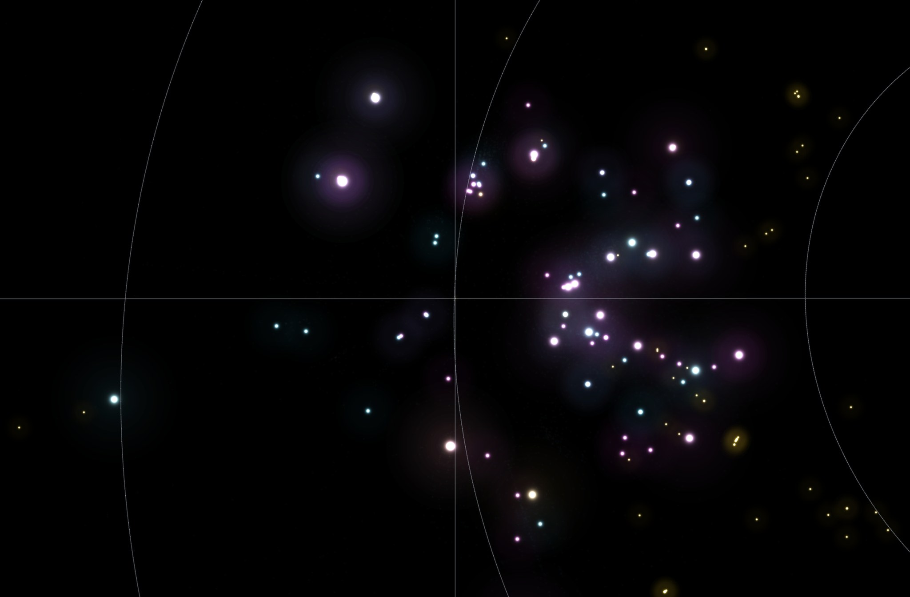
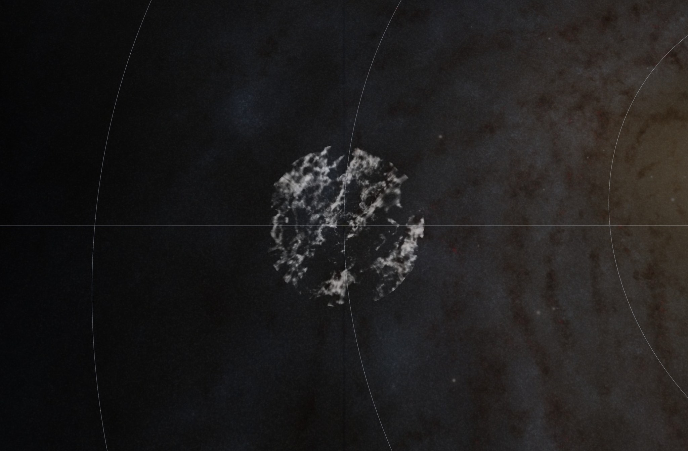
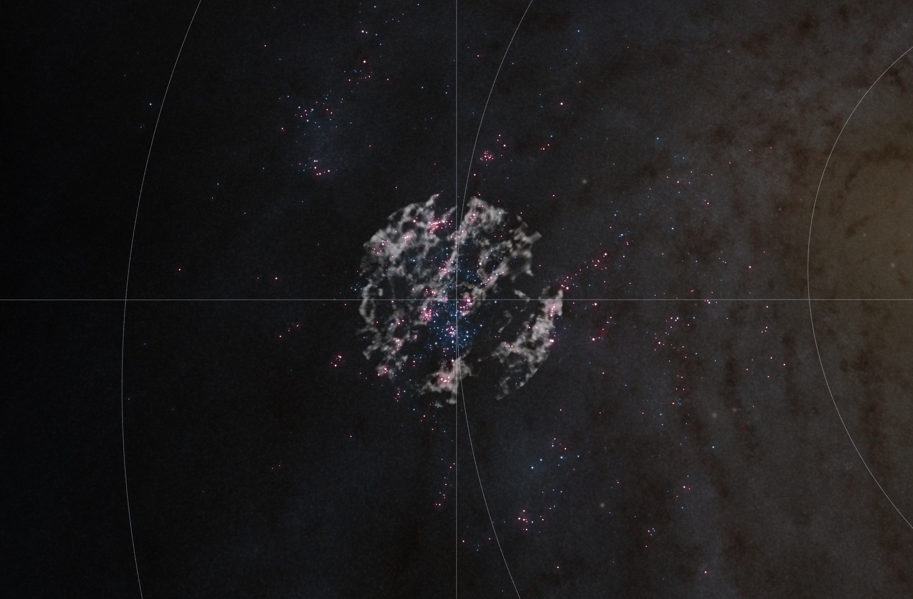
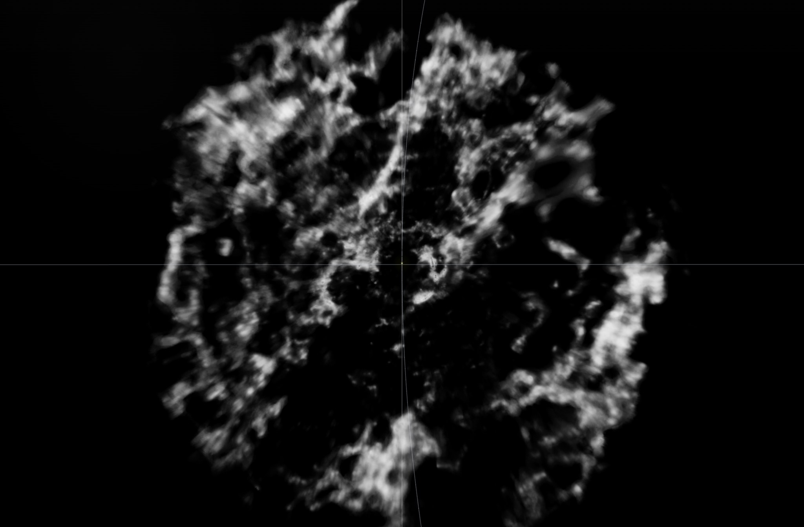
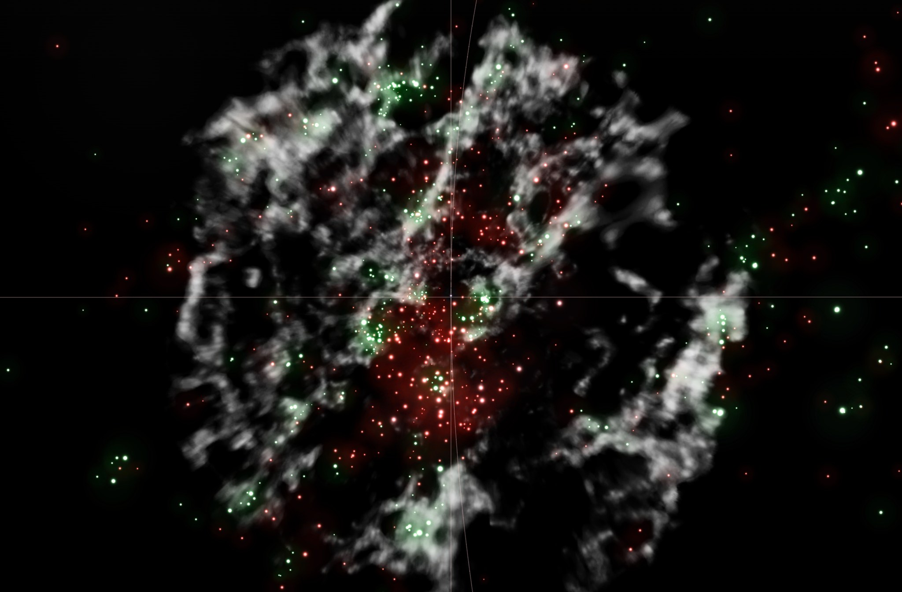
Slide 0 - Instructions :
To move slides, use the arrow keys or swipe on your mobile device
To see the speaker notes, press "s"
To go to full screen, press "f"
To print as PDF, go to this URL: ?print-pdf , then print. To get a PDF with speaker notes, add ?print-pdf&showNotes=true to the URL.
ALMA · ACES 3 mm
JWST NIRCam · GC Treasury (F480M / F212N)
Cold open -- let it run. Top: ALMA, the ACES 3 mm continuum of the whole CMZ. Bottom:
the JWST GC Treasury (GO 10678) NIRCam mosaic, F480M / F212N -- the same patch of sky at the
same scale; the black is sky the survey has not covered (yet). It zooms in on Sgr B2
until ACES is at its own resolution, then pans along the dust ridge past the Brick, and
loops.
Planck + HI4PI via lambda.gsfc.nasa.gov
The Galactic Center
Tons of open questions, many about to be answered
New surveys: ALMA, JWST, and soon Roman
The GC is the lab for star & planet formation spanning cosmic time
Lots of open questions, and new surveys (ALMA, JWST, soon Roman) to test them.
The Galactic Center: Star Formation, Gas Flows, and open questions
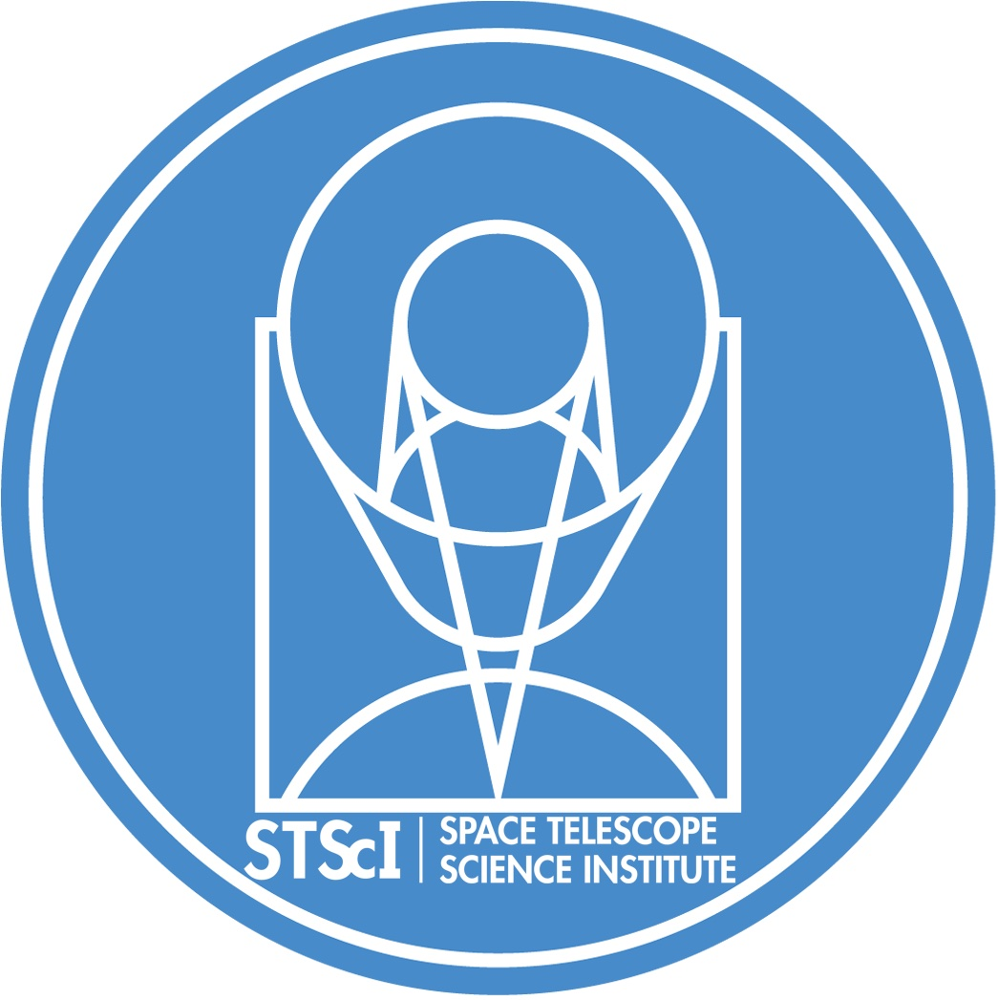
Postdocs: Nazar Budaiev (2026-) ,
Theo Richardson (2025-2026) ,
Miriam Garcia Santa Maria (2024-2025), Allison Towner (2020-2023)
PhD: Desmond Jeff (2025) , Theo Richardson (2025) ,
Alyssa Bulatek (2026) ,
Nazar Budaiev (2026) ,
Savannah Gramze (2027) ,
Taehwa Yoo (2028)
Undergrad/postbac:
Derod Deal ,
Aden Dawson ,
Ethan Bhula ,
Mario Antonio Daley ,
Prashant Sikhdar ,
Avery Lacon ,
Laya Damaraju
Supported by NSF 2008101, 2206511, CAREER 2142300, STSCI 1905, 2221, 3523, 5365, 6151, 10662, 10678, Roman 19008, 19012, Astropy
Star formation drives the evolution of the universe
After the big bang, there was a brief dark period.
After the dark ages, almost all of the light we see comes from star formation in galaxies.
Galaxies are made of stars, the observable universe is made of galaxies
Star Formation oversimplified
Ṁ
The star formation rate, i.e., how much gas turns to stars
L / M
The light per unit mass, i.e., how stars and stellar populations turn matter into light
Just what's on the slides
High-mass stars produce photons & heavy elementslow-mass stars live practically forever Point color shows effective temperature, point size shows
describe the plots!
Points are colored by an approximation of how they appear on the sky
100 msun stars produce about a million times the light of a 1 msun star
1 and lower Msun stars live as long as the universe
URL links to script to make figures
The stellar initial mass function (IMF)
Stars are sampled from this distribution
Log-differential probability vs log mass
Sample cluster of 1000 Msun
Points are a real sampling from the IMF, shows what the curve means in practice
URL links to script to make figures
The IMF is generally assumed to be universal in time and space
primarily because of the weakness of evidence of variation
Say "it may not be universal" -- whether it varies is Q7, asked later for the CMZ
Sample cluster of 10000 Msun
High-mass stars populate the stellar graveyard
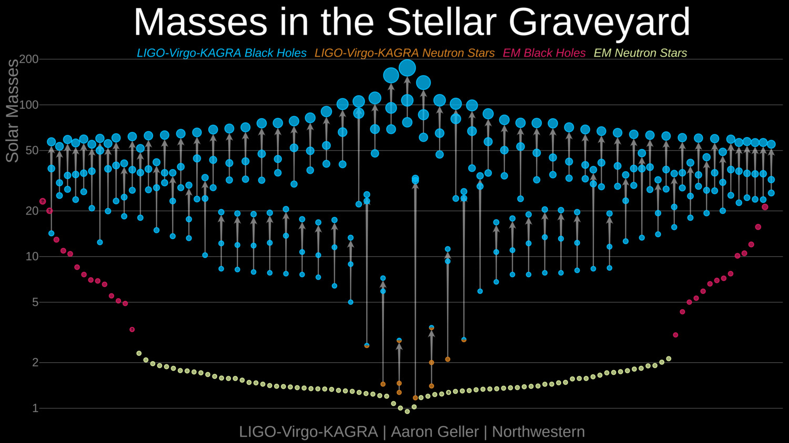
Almost all of the light in star-forming galaxies is produced by high-mass stars
UV image of M31, Andromeda, our closest massive neighbor
Blue light is produced by high-mass stars
(high-mass stars dominate anyway, but even more in UV)
The stars form in and from gas (as traced by dust )
Herschel FIR dust image of M31
Dust is closely correlated with blue starlight = young stars
Dust traces gas, stars form where there is gas
Most of what we know of star formation in detail comes from small local clouds
Herschel FIR dust image of Taurus mol cld
distance ~140 pc, local neighborhood
say in words: (and simulations)
click: the same field in visible light -- the bright Herschel filament is the dark
lane: the dust that glows in the far-IR is what blocks the starlight
Cartoon of isolated low-mass star formation
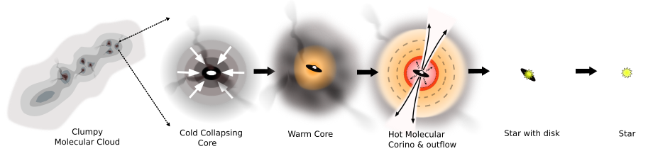
Missing: Neighbors, environment
The cartoon is not universal
cosmic noon
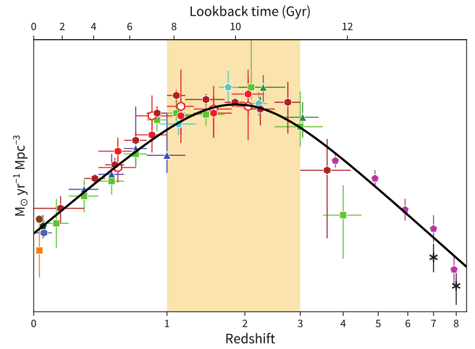
Crowded ~ cosmic noon
Stars formed in smaller, denser, more turbulent volumes
The GC is special on the sky but cosmically commonplace
Why the Galactic Center matters beyond
the Milky Way -- most stars in the universe formed at cosmic noon, z ~ 1-3 (half before z = 1.3),
and they formed in denser gas, in more compact regions -- like the CMZ (Kruijssen & Longmore
2013: same gas surface densities, 1e2-1e3 Msun/pc^2, Mach numbers and gas-to-star ratios).
Caveats they list themselves: the CMZ is more metal-rich, high-z galaxies have far more radiation
and cosmic rays, and the CMZ forms stars 1-2 dex below the scaling relations.
Click: the GC is special on the sky but cosmically commonplace.
The solar neighborhood is not crowded
young clusters: <15 Myr
· <60 Myr
1.25 kpc
Src I
Cep A HW2
Zoomed to the edge of the dust map: 1.25 kpc from the Sun top to bottom (1.9 kpc side to
side). Gaia plus
stellar photometry gives us the local
ISM in three dimensions at parsec resolution. Click: the young clusters appear on it --
green younger than 15 Myr, red younger than 60 Myr (Hunt & Reffert 2023, Gaia DR3).
Top-down: 3D dust and young clusters around the Sun
young clusters: <15 Myr
· <60 Myr
1.25 kpc
Orion
λ Ori
Per OB2
NGC 2264
γ Vel · ζ Pup
Cep OB2 · IC 1396
Cep OB3
Berkeley 59
Coll 419
NGC 7000
Cam OB1
CMa OB1
Vela
Cir OB1
Ara OB1
NGC 6383
Sgr OB1
Rosette
(1.5 kpc)
M8
(1.3 kpc)
The O stars of the previous view, labeled by region. Orion (theta1 Ori C, iota Ori) is the
closest; the Cepheus associations, NGC 7000 (the O3.5 "Bajamar star") and Berkeley 59
are toward l = 90-120; Ara OB1 (NGC 6193) and NGC 6383 toward the inner Galaxy. Dashed rings:
Rosette (NGC 2244, 1.5 kpc) and M8 (NGC 6530, 1.3 kpc), just outside the map. Unlabeled
rings are field / runaway O stars (zeta Pup is in the gamma Vel label; 10 Lac; 68 Cyg ...).
The local kpc calibrates star formation relations now
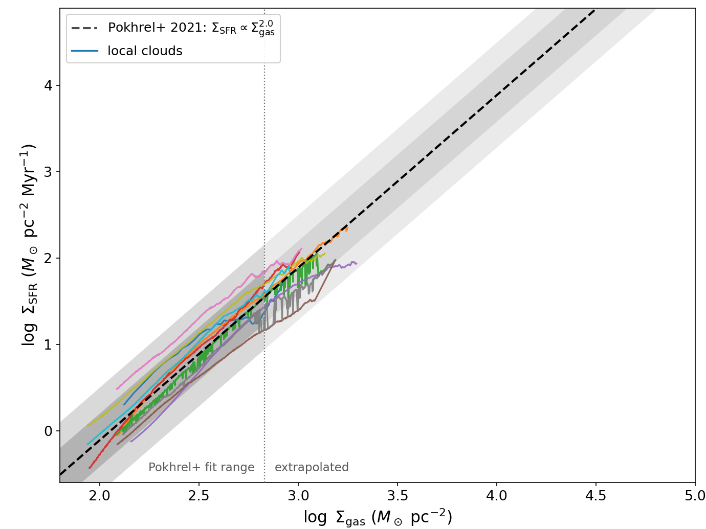
Galactic Center
Twelve clouds. All within ~1.5 kpc. Uniform eps_ff = 0.026, and a relation fitted only
below N(H2) = 3e22, i.e. Sigma_gas < 676 Msun/pc^2.
The most crowded region in the Galaxy is its center
We have at best a cartoony view of the Galactic Center
The same dust map, now our own top-down rendering of Edenhofer+ 2024. Click: pull out --
that whole map is the little circle; the Galactic Center is 8 kpc away. (Steps 0-1 of
#cmz-what-shape, which picks this up again later.)
Click: dive into the bar -- and here is what it does
(the bar-model cartoon).
The Galactic Center: open questions (a partial list)
Dozens of questions about the Galactic Center have been open for decades; here are 19, each dated
by the paper that posed it (or made it pressing). The OB-star one is the obvious one after the local census
(#topdown-local: ~50 O stars within 1.25 kpc of the Sun): nobody knows the CMZ's number. The HST Paschen-alpha
survey (Wang+ 2010; Dong+ 2011, ~180 emission-line sources) and Mauerhan+ 2010 found the brightest, emission-line
ones; Clark+ 2021 constrain the isolated population; the rest are behind A_V ~ 30 and unclassified -- the JWST GC
Treasury colors (Cano-González+ 2021-style hot-star selection) are the way at it. The PeV one: H.E.S.S. 2016
found the CMZ's diffuse TeV emission traces the gas and needs protons up to ~1 PeV near Sgr A* -- but the photon
map is gas × cosmic rays, and we only know the gas in projection (bonus: #bonus-he-state). The GeV excess (Goodenough & Hooper 2009, Fermi-LAT): extended ~GeV emission
around the GC -- dark-matter annihilation or an unresolved millisecond-pulsar population, still argued.
Three major surveys change our perspective
ALMA · ACES
Steve Longmore · John Bally · Cara Battersby · Adam Ginsburg · Jonathan Henshaw · Paul Ho · Izaskun Jiménez‑Serra · Betsy Mills · Daniel Walker · Ashley Barnes · Mattia Sormani · Robin Tress · Jennifer Wallace · Laura Colzi · Maya Petkova · Danya Alboslani · Emad Alkhuja · Jairo Armijos‑Abendaño · Lucia Armillotta · N. Bijas · Nazar Budaiev · Rojita Buddhacharya · Alyssa Bulatek · Michael Burton · Laura Busch · Natalie Butterfield · Paola Caselli · Mélanie Chevance · Claire Cook · Samuel Crowe · Ana Karla Díaz‑Rodríguez · Simon Dicker · Katarzyna Dutkowska · Adam Fairley · Christoph Federrath · Rubén Fedriani · Zi‑Xuan Feng · Karl Fiteni · Gary Fuller · Pablo García · Philipp Girichidis · Simon Glover · Javier Goicoechea · Mark Gorski · Savannah Gramze · Qi‑Lao Gu · Perry Hatchfield · Christian Henkel · Rebecca Houghton · Pei‑Ying Hsieh · Yue Hu · Katharina Immer · Namitha Issac · Desmond Jeff · Janik Karoly · Jens Kauffmann · Ralf Klessen · Diederik Kruijssen · Mark Krumholz · Cornelia Lang · Alex Lazarian · Rachel Lee · Emily Levesque · Fu‑Heng Liang · Dani Lipman · Xunchuan Liu · Xing Lu · Qiu‑yi Luo · Alessandro Lupi · Sera Markoff · Sergio Martín · Brian Mason · Farideh Mazoochi · Laura McCafferty · Emily Moravec · Mark Morris · Francisco Nogueras‑Lara · Marie Nonhebel · Tomoharu Oka · John Orlowski‑Scherer · Jürgen Ott · Marco Padovani · Xing Pan · Dylan Paré · Thushara Pillai · Jaime Pineda · Marc Pound · Denise Riquelme‑Vásquez · Víctor Rivilla · Charles Romero · Galaxy Salo · Álvaro Sánchez‑Monge · Miriam Santa‑Maria · Anika Schmiedeke · Rainer Schödel · Matthias Schultheis · Howard Smith · Yoshiaki Sofue · Jack Sullivan · Enrico Di Teodoro · Leonardo Testi · Volker Tolls · Miguel Requena Torres · Grant Tremblay · Arianna Vasini · Gijs Vermariën · Alexey Vikhlinin · Serena Viti · Q. Daniel Wang · Gwenllian Williams · Fengwei Xu · Qizhou Zhang · Suinan Zhang
papers I–VIII out (2025–26)
JWST · GC Treasury
Rainer Schödel · Steve Longmore · Adam Ginsburg · Konstantina Anastasopoulou · Jay Anderson · John Bally · Ashley Barnes · Cara Battersby · Alessandra Mastrobuono Battisti · Giuseppe Bono · Aaron Bryant · Santi Cassisi · Mélanie Chevance · Anna Ciurlo · Angela Cotera · Samuel Crowe · Tuan Do · Rubén Fedriani · Anja Feldmeier‑Krause · Sebastiano von Fellenberg · Lucia Bravo Ferres · Dimitri Gadotti · Carme Gallart · Teresa Gallego‑Calvente · Eulalia Gallego‑Cano · Pablo García · Angela Gardini · Abhimat Gautam · Andrea Ghez · Stefan Gillessen · Miguel Cano González · Alessia Gualandris · Robert Gutermuth · Daryl Haggard · Matthew Hankins · Jonathan Henshaw · Matthew Hosek · Rebecca Houghton · Yue Hu · Tracy Huard · Ralf Klessen · Diederik Kruijssen · Ryan Lau · Alex Lazarian · Rebecca Levy · Mattia Libralato · Anan Lu · Jessica Lu · Xing Lu · Nora Luetzgendorf · John Magorrian · Shifra Mandel · Roeland van der Marel · Macarena García Marín · Sera Markoff · Alvaro Martinez · Maria Melamed · Betsy Mills · Kaya Mori · Mark Morris · Elena Murchikova · Paco Najarro · David Nataf · Nadine Neumayer · Shogo Nishiyama · Francisco Nogueras‑Lara · Dylan Paré · Florian Peissker · Maya Petkova · Thushara Pillai · Gabriele Ponti · Rodrigo Contreras Ramos · R. Michael Rich · Carlos Román‑Zúñiga · Michael Rugel · Nils Ryde · Nadeen Sabha · Joel Sánchez‑Bermúdez · Álvaro Sánchez‑Monge · Matthias Schultheis · Stephen Serjeant · Lijing Shao · Janet Simpson · Mattia Sormani · Christopher Sorrell · Jonathan Tan · Enrico Di Teodoro · Brian Thorsbro · Pablo Torne · Robin Tress · Elena Valenti · Sill Verberne · Pierre Vermot · Eduardo Vitral · Gunther Witzel · Siyao Xu · Farhad Yusef‑Zadeh · Michal Zajacek · Qizhou Zhang · Manuela Zoccali
half observed (68 of 139 pointings, Sep 2026); the rest Aug–Sep 2027
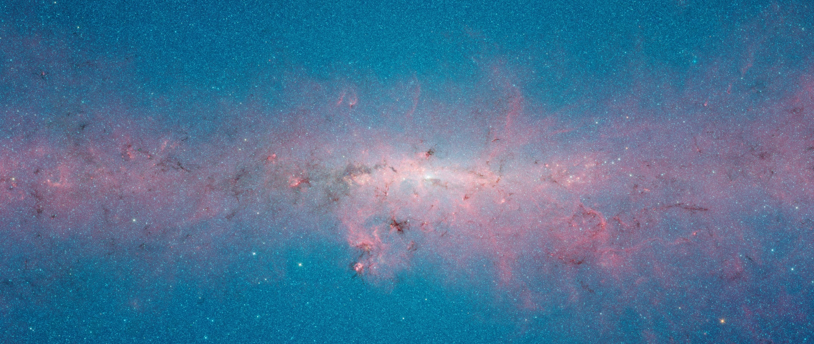
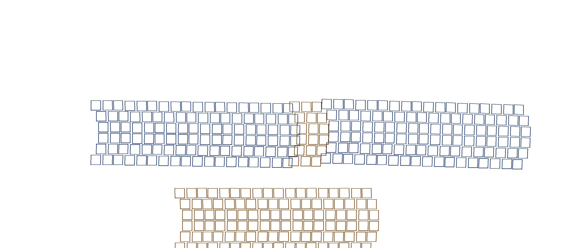
Roman surveys
et al.
coming
The Galactic Bulge Time Domain Survey & Galactic Plane Survey: proper motions,
variability, and microlensing planets.
The three datasets that come back at the end of every question. ACES is done; the JWST
Galactic Center Treasury is half observed; Roman's bulge survey is next.
Click: the teams. 113 people on ACES, 100 on the Treasury; Roman, et al.
The ACES team · 113 people
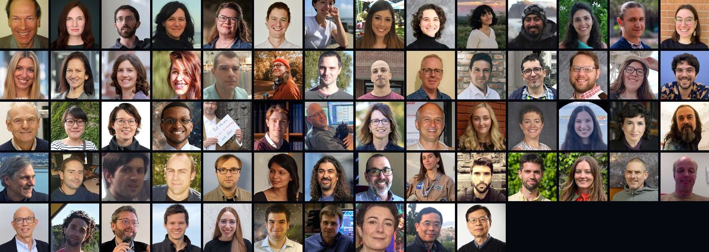
Steve Longmore · John Bally · Cara Battersby · Adam Ginsburg · Jonathan Henshaw · Paul Ho · Izaskun Jiménez‑Serra · Betsy Mills · Daniel Walker · Ashley Barnes · Mattia Sormani · Robin Tress · Jennifer Wallace · Laura Colzi · Maya Petkova · Danya Alboslani · Emad Alkhuja · Jairo Armijos‑Abendaño · Lucia Armillotta · N. Bijas · Nazar Budaiev · Rojita Buddhacharya · Alyssa Bulatek · Michael Burton · Laura Busch · Natalie Butterfield · Paola Caselli · Mélanie Chevance · Claire Cook · Samuel Crowe · Ana Karla Díaz‑Rodríguez · Simon Dicker · Katarzyna Dutkowska · Adam Fairley · Christoph Federrath · Rubén Fedriani · Zi‑Xuan Feng · Karl Fiteni · Gary Fuller · Pablo García · Philipp Girichidis · Simon Glover · Javier Goicoechea · Mark Gorski · Savannah Gramze · Qi‑Lao Gu · Perry Hatchfield · Christian Henkel · Rebecca Houghton · Pei‑Ying Hsieh · Yue Hu · Katharina Immer · Namitha Issac · Desmond Jeff · Janik Karoly · Jens Kauffmann · Ralf Klessen · Diederik Kruijssen · Mark Krumholz · Cornelia Lang · Alex Lazarian · Rachel Lee · Emily Levesque · Fu‑Heng Liang · Dani Lipman · Xunchuan Liu · Xing Lu · Qiu‑yi Luo · Alessandro Lupi · Sera Markoff · Sergio Martín · Brian Mason · Farideh Mazoochi · Laura McCafferty · Emily Moravec · Mark Morris · Francisco Nogueras‑Lara · Marie Nonhebel · Tomoharu Oka · John Orlowski‑Scherer · Jürgen Ott · Marco Padovani · Xing Pan · Dylan Paré · Thushara Pillai · Jaime Pineda · Marc Pound · Denise Riquelme‑Vásquez · Víctor Rivilla · Charles Romero · Galaxy Salo · Álvaro Sánchez‑Monge · Miriam Santa‑Maria · Anika Schmiedeke · Rainer Schödel · Matthias Schultheis · Howard Smith · Yoshiaki Sofue · Jack Sullivan · Enrico Di Teodoro · Leonardo Testi · Volker Tolls · Miguel Requena Torres · Grant Tremblay · Arianna Vasini · Gijs Vermariën · Alexey Vikhlinin · Serena Viti · Q. Daniel Wang · Gwenllian Williams · Fengwei Xu · Qizhou Zhang · Suinan Zhang
ACES: the ALMA CMZ Exploration Survey. PI Steve Longmore; co-PIs John Bally, Cara Battersby, Adam
Ginsburg, Jonathan Henshaw, Paul Ho, Izaskun Jiménez-Serra, Betsy Mills; work-package leads Dan Walker, Ashley Barnes,
Mattia Sormani, Robin Tress, Jen Wallace, Laura Colzi, Maya Petkova. 113 people across papers I-VI.
The JWST GC Treasury team · 100 people
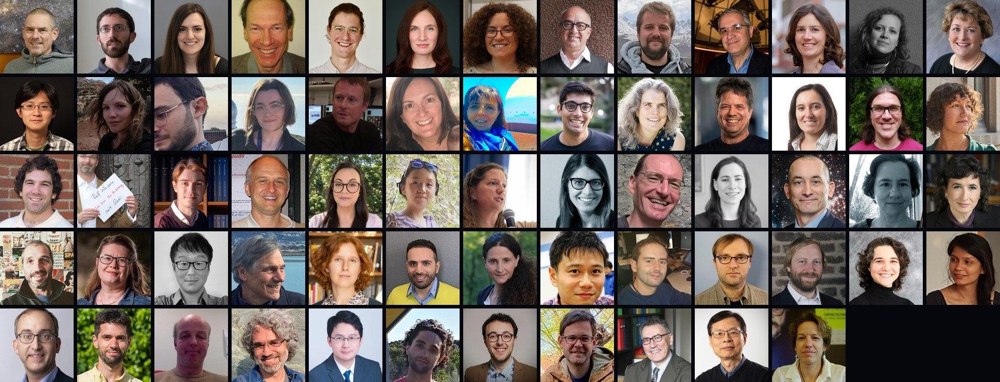
Rainer Schödel · Steve Longmore · Adam Ginsburg · Konstantina Anastasopoulou · Jay Anderson · John Bally · Ashley Barnes · Cara Battersby · Alessandra Mastrobuono Battisti · Giuseppe Bono · Aaron Bryant · Santi Cassisi · Mélanie Chevance · Anna Ciurlo · Angela Cotera · Samuel Crowe · Tuan Do · Rubén Fedriani · Anja Feldmeier‑Krause · Sebastiano von Fellenberg · Lucia Bravo Ferres · Dimitri Gadotti · Carme Gallart · Teresa Gallego‑Calvente · Eulalia Gallego‑Cano · Pablo García · Angela Gardini · Abhimat Gautam · Andrea Ghez · Stefan Gillessen · Miguel Cano González · Alessia Gualandris · Robert Gutermuth · Daryl Haggard · Matthew Hankins · Jonathan Henshaw · Matthew Hosek · Rebecca Houghton · Yue Hu · Tracy Huard · Ralf Klessen · Diederik Kruijssen · Ryan Lau · Alex Lazarian · Rebecca Levy · Mattia Libralato · Anan Lu · Jessica Lu · Xing Lu · Nora Luetzgendorf · John Magorrian · Shifra Mandel · Roeland van der Marel · Macarena García Marín · Sera Markoff · Alvaro Martinez · Maria Melamed · Betsy Mills · Kaya Mori · Mark Morris · Elena Murchikova · Paco Najarro · David Nataf · Nadine Neumayer · Shogo Nishiyama · Francisco Nogueras‑Lara · Dylan Paré · Florian Peissker · Maya Petkova · Thushara Pillai · Gabriele Ponti · Rodrigo Contreras Ramos · R. Michael Rich · Carlos Román‑Zúñiga · Michael Rugel · Nils Ryde · Nadeen Sabha · Joel Sánchez‑Bermúdez · Álvaro Sánchez‑Monge · Matthias Schultheis · Stephen Serjeant · Lijing Shao · Janet Simpson · Mattia Sormani · Christopher Sorrell · Jonathan Tan · Enrico Di Teodoro · Brian Thorsbro · Pablo Torne · Robin Tress · Elena Valenti · Sill Verberne · Pierre Vermot · Eduardo Vitral · Gunther Witzel · Siyao Xu · Farhad Yusef‑Zadeh · Michal Zajacek · Qizhou Zhang · Manuela Zoccali
Names: investigators of
JWST program 10678
·
gold : PI & co-PIs · faces from public pages, where one was found
JWST Galactic Center Treasury (program 10678): PI Rainer Schödel, co-PIs Steve Longmore and Adam
Ginsburg, and 97 co-investigators. Matt Hosek leads the cluster / tidal-stream work.
The Galactic Center: open questions (a partial list)
Back to the list: the eight I will walk through -- each one with what we have learned and what comes next.
Q1 What planets form there? 2016 ← Q2 How does gas get into the CMZ? 1991 Q3 (How) does gas reach Sgr A*? 1996 Q4 What shape is the CMZ? 1995 Q5 Why does the CMZ form so few stars? 2013 Q6 Where do the CMZ’s young stars go? Do clusters dissolve? 2002 Q7 Is the IMF different here? 1999 Q8 Is the chemistry different? What is the metallicity? 2009
Question 1: What planets form there? Open since 2016. Where we are: none known: 95% of known planets are within 3 kpc of the Sun. What comes next: Roman microlensing toward the bulge.
Almost every planet we know is within 3 kpc of the Sun
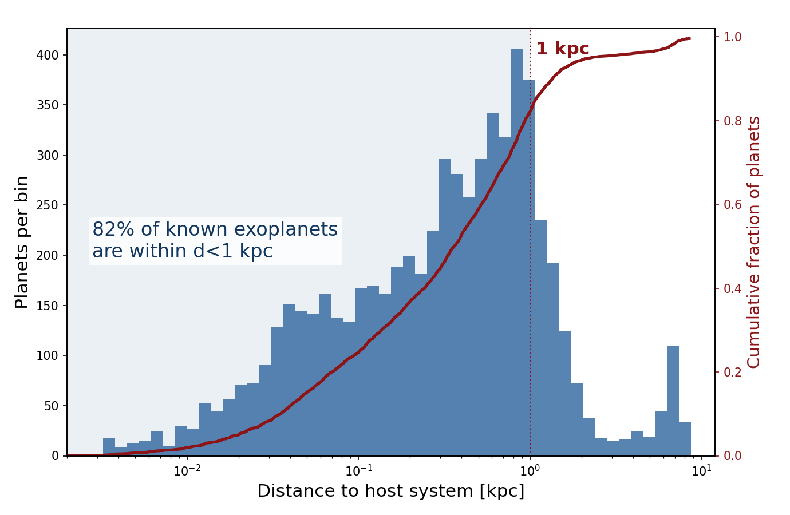
NASA Exoplanet Archive, Sept 2026
95% of all 6366 confirmed planets are inside 3 kpc; 82% inside 1 kpc. The little pile
at 7-8 kpc is bulge microlensing, and it is nearly the whole of what we know about
planets outside the solar neighborhood.
Roman will find tens of thousands of planets ~8 kpc away
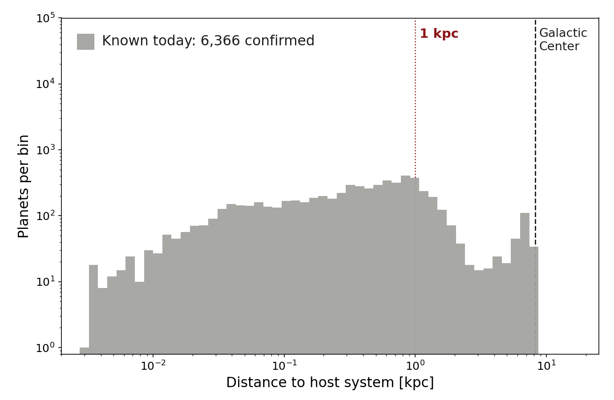
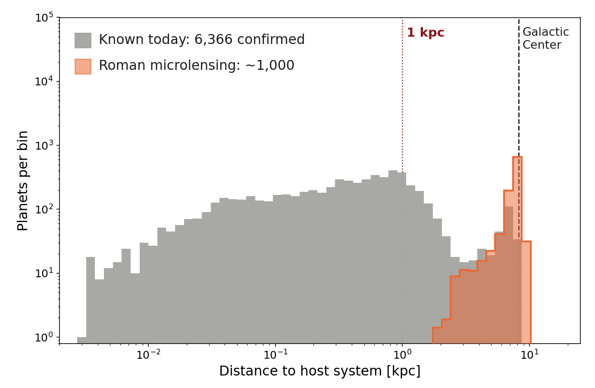
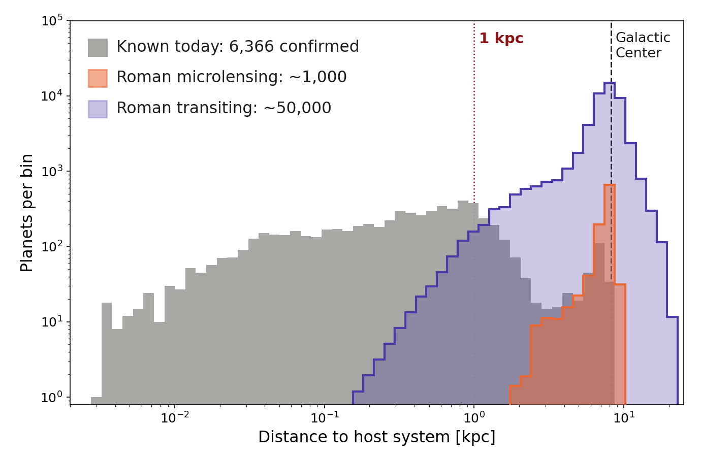
(these numbers assume 0 planets in the GC pointing)
Planets within 1 kpc: 82% of those known today → ~10% after Roman
Same axis as the last slide, now logarithmic in the vertical: gray is the 6,366 confirmed
planets we know today, 82% within 1 kpc.
2 of the CMZ, F212N and F480M,
~5,300 per arcmin2 detected and crowding-limited. The planet yields above are
for the lower-extinction bulge fields, not the CMZ itself.
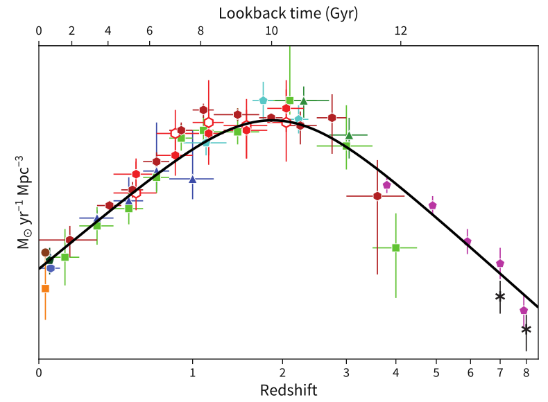
?
What happens to
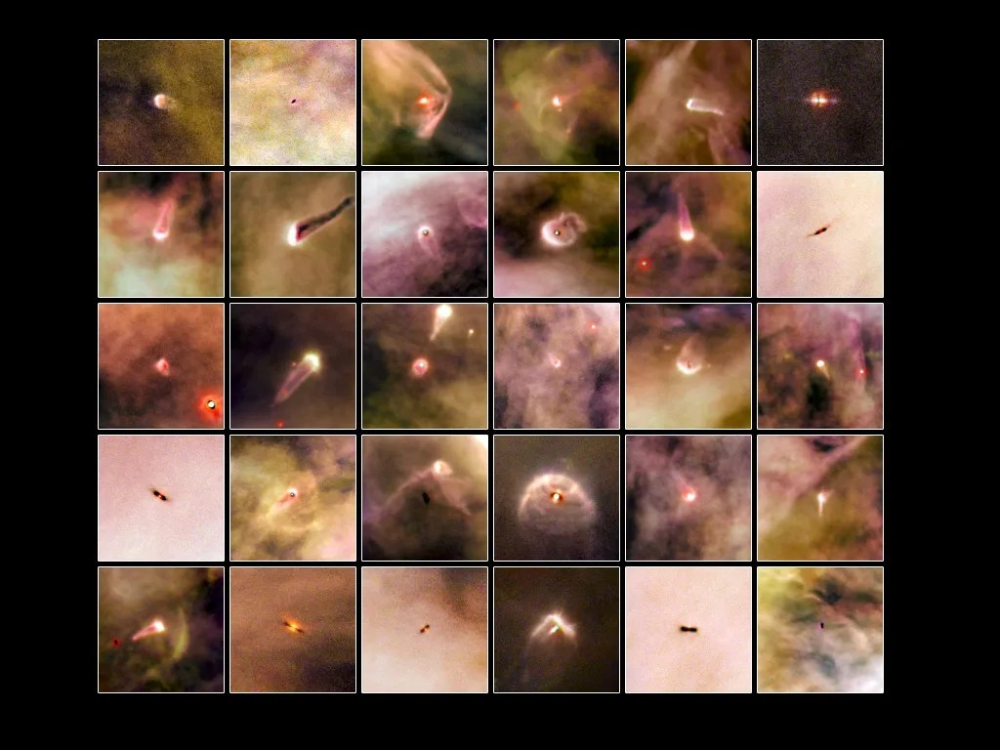
Proplyds: disks photoevaporated
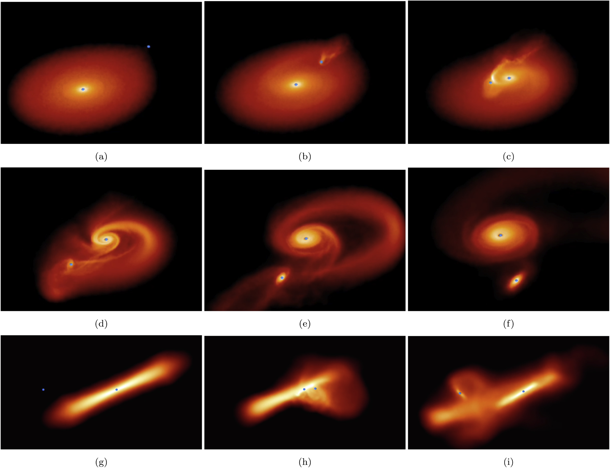
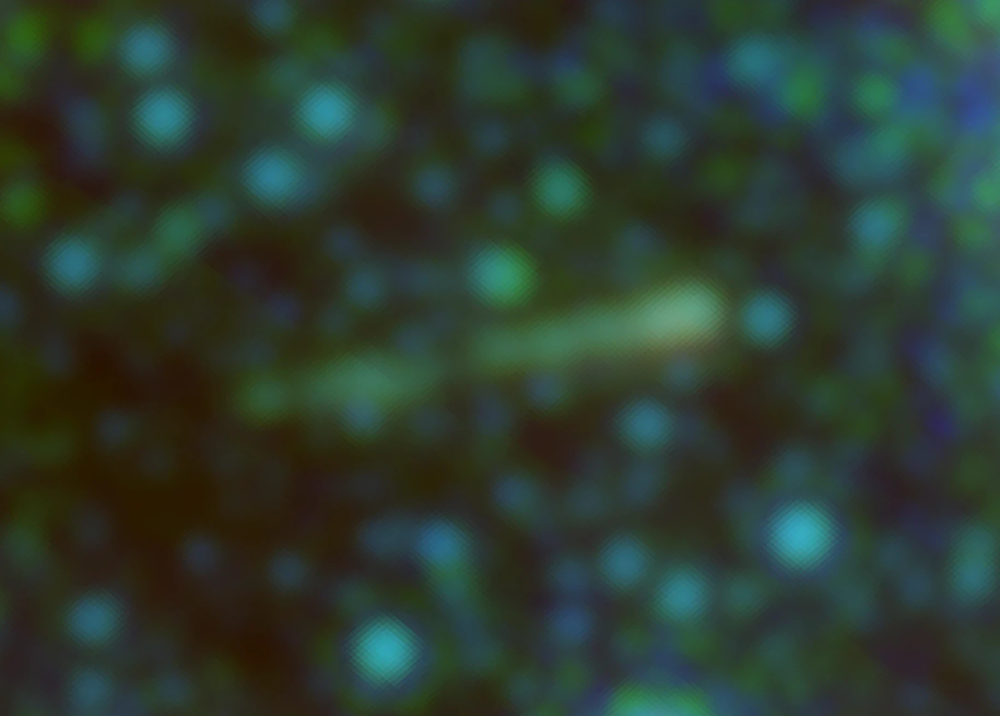
Tails in the ArchesHosek+ in prep
EWOCS : JWST in Westerlund 1 & 2
Monsch et al.,Lovell , Galarza
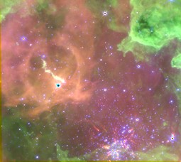
Wd1
Wd2
Builds: the plot alone. Click: the z = 1-3 band, B68 and HL Tau. Click: the question. Click: proplyds,
truncation, the Arches tails and EWOCS.
Most of the stars in the universe formed at cosmic noon, z ~ 1-3
Those conditions -- density, UV field, turbulence -- are what the CMZ reproduces locally
So: what happens to the disks, and to the planets, under those conditions?
Credit the truncation argument correctly: the mechanism is Wijnen+ 2016, 2017
(Pols, Pelupessy, Portegies Zwart — Nijmegen/Leiden): face-on accretion of ISM material
carrying no azimuthal angular momentum shrinks the disk; ram-pressure stripping removes the rest.
It shows up in the observations via Otter+ 2021 (Otter, Ginsburg, Ballering, Bally+) —
the OMC1 disks are embedded, hidden from the Trapezium's UV, and still small, so photoevaporation
cannot be what truncated them. Moeckel & Throop 2009 (Bondi–Hoyle–Lyttleton
accretion onto a protoplanetary disk) made essentially the same argument a decade earlier, as did Bally.
The picture on the slide is Bally+ 2020's; the physics is not his.
Bottom right, tails in the Arches (Hosek+ in prep).
EWOCS shout-out (Extended Westerlund 1 and 2 Open Clusters Survey; JWST GO-1905 in Wd1, GO-3523 in Wd2,
PI Guarcello): Kristina Monsch et al., including Josh Lovell and Juan Martínez-Galarza .
Left to right: Wd1, Wd2, Kristina's tail figure. The winds around Wd1's massive stars were Monsch, Lovell+'s
AAS 245 result; the MIRI shell around the M supergiant W237 is in Guarcello+ 2025 (EWOCS-III).
If asked about disks there: in Wd2, 73 of 353 substellar candidates show an infrared excess, i.e. candidate
disks (Almendros-Abad+ 2026, EWOCS-IX).
Disks exist in the CMZ
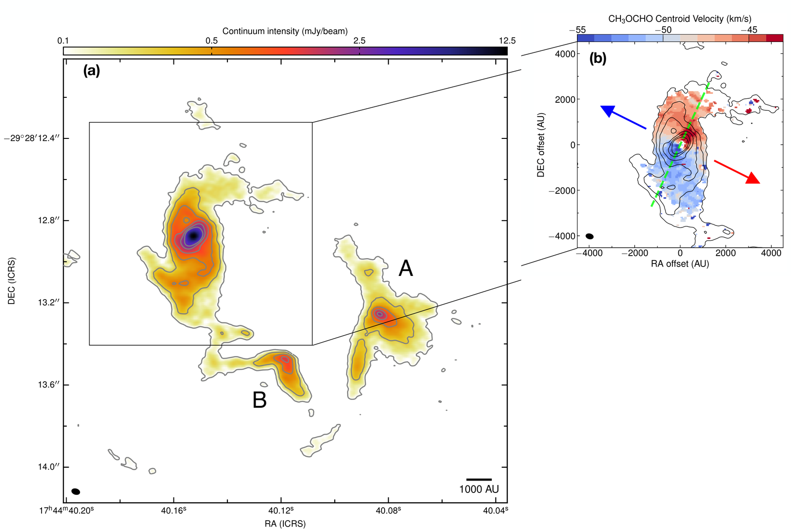
Sgr C ☉ ☉
We can study planet formation in this environment.
Planets need disks; do CMZ stars get them? Sgr C (Lu+ 2022, Nature Astronomy): ALMA long-baseline 1.3 mm
resolves a Keplerian disk, radius ~2000 au, 4.7 Msun (factor ~2 uncertain) around a 31.7 +/- 4.7 Msun protostar,
rotation v ~ r^-0.51 +/- 0.20 inside 1000 au, inclination 53 deg. Gravitationally stable, with two trailing
spirals (A, B) best explained by a close flyby -- and a perturber with the right properties is identified.
So an early O star here forms "in a similar manner" to low-mass stars: disk-mediated accretion and flyby-impacted
disk evolution. Weng+ 2026 (ApJ 1003, 219; 300 au): the same source, disk + envelope + streamers, ~40 Msun
from the dynamics (SED fits give ~20, Crowe+ 2025).
Q1 What planets form there? 2016 future! Q2 How does gas get into the CMZ? 1991 ← Q3 (How) does gas reach Sgr A*? 1996 Q4 What shape is the CMZ? 1995 Q5 Why does the CMZ form so few stars? 2013 Q6 Where do the CMZ’s young stars go? Do clusters dissolve? 2002 Q7 Is the IMF different here? 1999 Q8 Is the chemistry different? What is the metallicity? 2009
Question 2: How does gas get into the CMZ? Open since 1991. Where we are: inflow measured (~1 M☉ yr−1 ); collisions seen (EVFs, G5). What comes next: ACES maps every inflow interface at 0.1 pc; simulations now match its resolution.
The bar feeds the CMZ
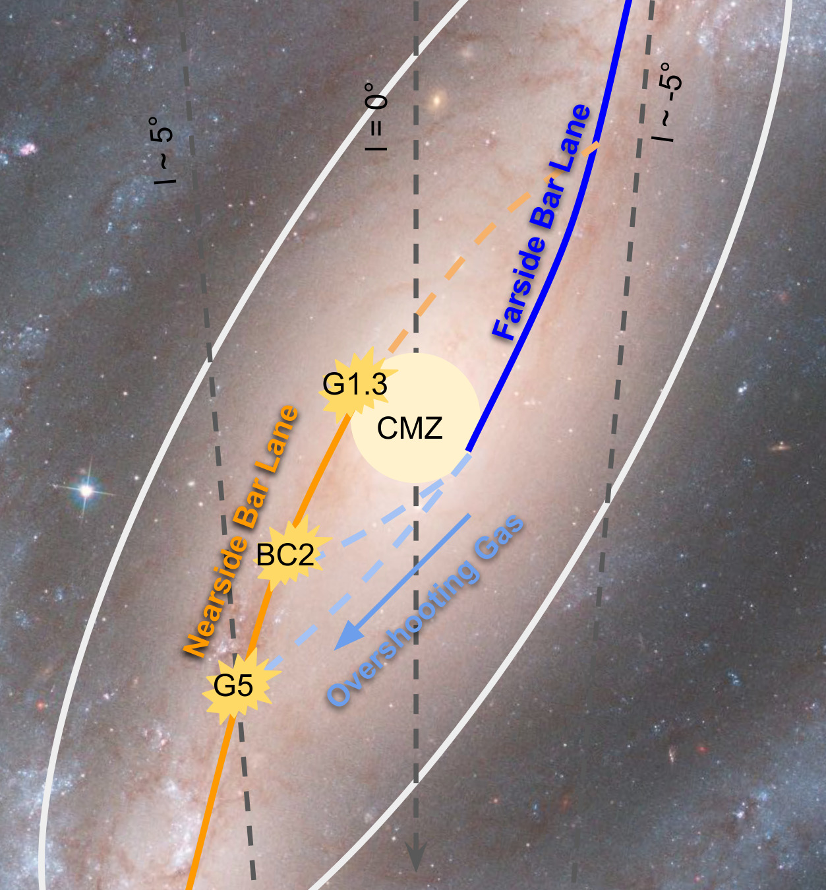
Back to the Sun's neighborhood. Click: pull out to the whole Galaxy. Click: dive into the bar -- and here is what it does.
The bar feeds the CMZ
Tress+ 2026 (Rhea-RT), total gas surface density, 6 kpc across
Coming out of the zoom: the bar. Gas on the bar's orbits gets shocked into two dust
lanes and falls toward the center -- about a solar mass per year (Sormani & Barnes 2019
measured 2.7 from CO along the lanes; Hatchfield+ 2021 argue the effective rate is lower,
0.8, because in their simulations only ~30% accretes on the first pass).
Colliding gas stagnates flows and feeds the CMZ
Gas comes in molecular but mostly without forming stars
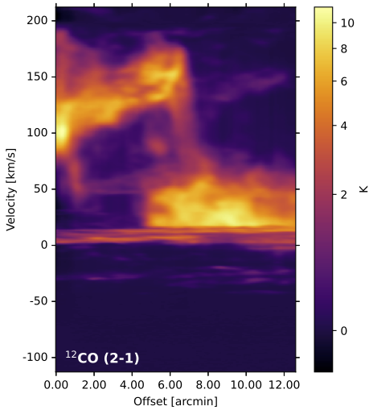
G5 (l ≈ 5.4°)
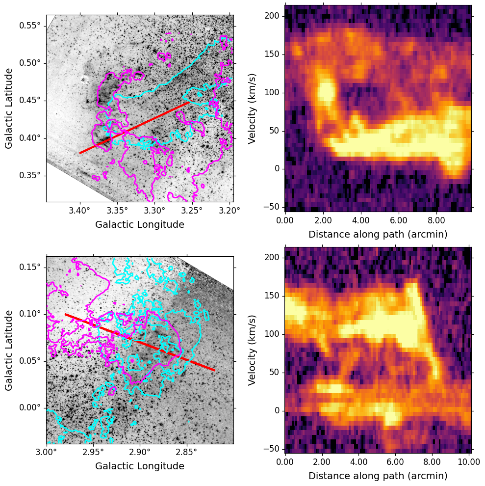
l ≈ 3.3° (top) and 2.9° (bottom)
Savannah's G5, at l = +5.4: in position-velocity, two clouds at ~50 and ~150 km/s joined by
a bridge -- the signature of a collision. It sits where the cartoon says overshooting gas
should hit the far-side lane. Fully molecular, ~60 K, and the CO-to-H2 factor is 10-20x
below the Galactic average. (These are molecular high-velocity clouds in the plane, not
infalling HI.)
Future: gas into the CMZ
Left: an MHD simulation of the central 500 pc at 1 Msun resolution, in CO -- follow the gas down to the
central 10 pc (arrows), face-on and in l-v. Right: what ACES sees -- compact high-velocity features in CS 2-1, a
velocity bridge and a loop, the same kinds of structure as the simulated inflow.
Lipman+ 2026 (ACES VIII), Fig. 2 (the figure this slide used to show): 235 compact high-velocity features in ACES CS 2-1 -- 163 found by eye
(magenta: confirmed by dendrograms), 72 more by dendrograms on a downsampled cube (cyan). Sormani+ 2019: features
like these (Bania's Clump 2 is the prototype) are collisions between gas falling down the dust lanes and gas that
overshot or belongs to the CMZ -- "directly witnessing the accretion of fresh gas onto the CMZ". In ACES, high
HNCO / C-shock-tracer ratios along the edge of the orbital streams mark bar-lane gas building up as it accretes.
Also: Veena+ 2026 -- Class I methanol masers in shocked gas at the l = 1.3 deg feature. Simulations: Rhea-RT
(Tress+ 2026) and Lipman's sub-pc MHD zoom-ins (AAS 247), built for apples-to-apples comparison with ACES.
Q1 What planets form there? 2016 future! Q2 How does gas get into the CMZ? 1991 progress Q3 (How) does gas reach Sgr A*? 1996 ← Q4 What shape is the CMZ? 1995 Q5 Why does the CMZ form so few stars? 2013 Q6 Where do the CMZ’s young stars go? Do clusters dissolve? 2002 Q7 Is the IMF different here? 1999 Q8 Is the chemistry different? What is the metallicity? 2009
Question 3: (How) does gas reach Sgr A*? Open since 1996. Where we are: candidate pipes in ACES; their 3D positions are disputed. What comes next: 3D positions (JWST, Roman) + an ACES inflow census + sub-pc simulations.
What gas reaches Sgr A*?
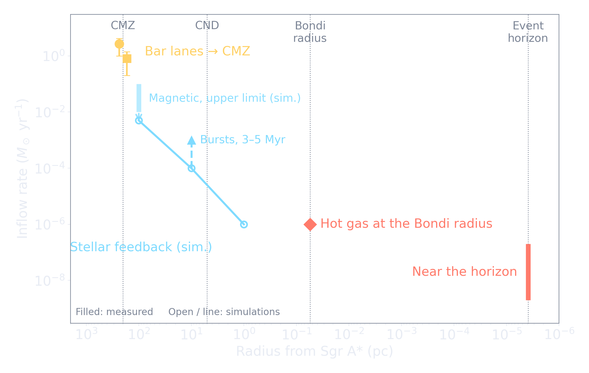
About a solar mass per year comes down the bar lanes into the CMZ (Sormani & Barnes 2019: 2.7; Hatchfield+ 2021: 0.8).
Sgr A* gets about a millionth of that at its Bondi radius (Baganoff+ 2003, Chandra: ~1e-6 Msun/yr of hot gas),
and near the event horizon Faraday rotation limits it to 2e-9 - 2e-7 (Marrone+ 2007, with the SMA). Eight orders
of magnitude. Simulations fill in the middle -- magnetic transport from the ring is at most 0.01-0.1
(Tress+ 2024, an upper limit), stellar feedback drives 5e-3 at 100 pc down to 1e-6 at 1 pc, with bursts of
1e-3 at 10 pc lasting 3-5 Myr (Feng+ 2026). So: does gas get there at all, and how?
Radii for the MRI limit (~100 pc, the ring) and the horizon point (~10 R_s) are approximate placements.
Bar lanes → CMZ: ~1 M☉ yr−1
SB19 Fig. 1: CO of the near-side (blue) and far-side (red) dust lanes; top l–b (gives the mass), bottom l–v
SB19 Fig. 3: inflow over the next 16 Myr from the gas now on the lanes: instantaneous (top), cumulative (bottom)
Hatchfield+ 2021 Fig. 3: simulation, face-on: lane gas that misses the CMZ (“overshooting”) and hits the far lane
Sormani & Barnes 2019: 2.7 (+1.5/−1.7) M☉ yr−1 — the circle
The two bar dust lanes, picked out of the Dame+ 2001 12 CO cube in (l, b, v):
near side (the “connecting arm”) and far side
Mass from CO × XCO . A geometric bar model (bar angle φ = 15–30°) turns each
lane's (l, v) into a position and an inward speed
Ṁ = mass ÷ time to reach the CMZ (R = 300 pc): near 1.2, far 1.5 → 2.7, averaged
over the next ~10 Myr. The instantaneous rate swings by a factor of a few (episodic)
Errors: XCO and φ
Hatchfield+ 2021: 0.8 ± 0.6 M☉ yr−1 — the square
Not all lane gas lands on the first pass: some overshoots the CMZ and hits the far lane. SB19 flagged
this as an unknown factor f ≤ 1
Tracer particles in an Arepo bar simulation: 30 ± 12% accretes on first approach; most
of the rest arrives within ~25 Myr
2.7 × 0.30 = 0.8: an observed mass flux times a simulated efficiency
On the ladder: both points at the CMZ edge
(~200 pc). The only step where the rate comes from tracing the inflowing gas itself.
Bar lanes: Sormani & Barnes 2019 measured the mass on the two dust lanes in CO and used a bar model to get the
inward speed: 2.7 Msun/yr. Hatchfield+ 2021 found in simulations that only ~30% lands on the first pass: 0.8.
CMZ ring → center: magnetic transport (simulation)
Tress+ 2024 Fig. 6: MHD run, central ±0.5 kpc, t = 147–293 Myr: the empty inside of the ring fills with gas
Fig. 23: inflow into R < 100 pc: MHD (solid) vs. no field (dashed)
Fig. B1: same, at cell mass 103 , 102 , 10 M☉ (bottom)
Tress+ 2024: the magneto-rotational instability (MRI) moves gas in from the ring
MHD of gas in a Milky Way bar potential (Arepo). No self-gravity, star formation or feedback
The bar fills the CMZ ring at ~1 M☉ yr−1 , with or without a field
Inside the ring only the MHD run has inflow: magnetic (Maxwell) stresses carry angular momentum out and
gas drifts in at 0.01–0.1 M☉ yr−1 . Without a field it is ~zero: all the gas
stays in the ring
Not converged: each 10× finer cell mass cuts the inflow ~5–10× (Fig. B1). The
authors call 0.01–0.1 an upper limit
What 3D data can test here
Predicted, and observable: the ordered field follows the gas flow; B ≈ 100 μG
(n/103 cm−3 )0.33 ; a slow radial drift of gas inside the ring
Ṁ(R) = 2πR Σ(R) vR (R) needs face-on Σ and vR . Seen
edge-on, the line-of-sight velocity mixes rotation and inflow; positions along the line of sight separate
them
On the ladder: the pale bar at ~100 pc with the
downward arrow.
Blue, magnetic: Tress+ 2024 MHD simulations. The MRI drives 0.01-0.1 Msun/yr from the ring inward; with no field,
nothing gets in. It drops with resolution, so it is an upper limit.
CMZ → CND → 1 pc: stellar feedback (simulation)
Feng+ 2026 Fig. 26: time-averaged inflow vs. radius (red: SN + radiation; blue: SN only; black: no feedback), with the observational estimates (dots) and Tress+ 2020 / 2024 (stars, squares)
Fig. 27: lower resolution (pale) → more inflow
Feng+ 2026: supernovae + radiation feedback push gas inward
Arepo: Milky Way bar potential, self-gravity, star formation, supernovae, on-the-fly radiative transfer;
cells ≤ 20 M☉ inside 100 pc
Time-averaged inflow falls steeply inward: 5×10−3 (100 pc) →
2×10−4 (10 pc) → 10−6 M☉ yr−1 (1 pc)
Two parts: a smooth, viscous-disk-like drift from feedback-driven turbulence, plus clouds falling in:
bursts up to 10−3 M☉ yr−1 for 3–5 Myr at 10 pc
No feedback → almost no inflow inside 100 pc
Higher resolution → less inflow (Fig. 27): upper limits
The data here are few and model-based: ~10
−2 M
☉ yr
−1 from
cloud kinematics fit with an accretion-disk model (
von Linden+ 1993 ; blue dot), and
10
−4 –10
−3 in the CND from disk models of colliding clouds and from CS
streamers (
Vollmer & Duschl 2001 ,
2002 ;
Hsieh+ 2017 ; green dot). Feng's curves lie below
both. Measuring Σ and v
R in 3D, ring to CND, is the test.
On the ladder: the open circles and
line (the 10 pc point is drawn at 10−4 ; the paper says ~2×10−4 );
the dashed arrow is the 3–5 Myr bursts.
Blue, feedback: Feng+ 2026. Supernovae and radiation stir the gas and it drifts in, 5e-3 at 100 pc down to 1e-6
at 1 pc, with bursts of 1e-3 at 10 pc. Also an upper limit. The few observational estimates here are older and
model-based; this is the zone a 3D map of the CMZ can measure.
The red diamond: Bondi capture, from Chandra
Wang+ 2013 Fig. 1a: Chandra 1–9 keV; dashed circle: their Bondi radius (4″)
Baganoff+ 2003 Fig. 12: spectrum of the diffuse gas within 10″: hot plasma + Fe line
Ressler+ 2018 Fig. 6: simulated winds of the ~30 Wolf–Rayet stars, 0.5 pc across
Ressler+ 2018 Fig. 12: inflow (grey) and outflow (green) rates vs. radius in that simulation
Measured (Baganoff+ 2003, Chandra): hot plasma, kT ≈ 1.3 keV and
n
e ≈ 26 cm
−3 , within ~1.5″ of Sgr A*.
Derived: Bondi (1952): gas inside R
B = 2GM/c
s 2 is captured.
c
s ≈ 550 km/s → R
B ≈ 0.07 pc (they adopt 0.06).
Ṁ
B ∝ M
2 ρ/c
s 3 ≈ 10
−6 M
☉ yr
−1 ,
for the 2003 mass, 2.6×10
6 M
☉ . At today's 4.3×10
6 : ~3×10
−6
(and R
B ≈ 0.1 pc);
Wang+ 2013 (3 Ms Chandra) quote ~10
−5 .
So: an estimate of what Sgr A*
could capture, not a measured inflow; Baganoff call
it a lower limit (cold gas not counted).
Whose gas: mostly shocked winds of the ~30 Wolf–Rayet stars in the central parsec
(
Cuadra+ 2008 ;
Ressler+ 2018 reproduce the Chandra emission with them) — not the molecular gas
coming down from the CMZ.
How much gets in: Wang+ 2013: a flat density profile means outflow nearly balances inflow;
≲1% of the captured gas reaches the hole. Ressler+ 2018 extrapolate to a few ×10
−8 at the horizon.
On the ladder: the diamond
(10−6 at 0.055 pc) is Baganoff's number at the 2003 mass, drawn filled but model-based;
today ~3×10−6 –10−5 at ~0.1 pc.
Red diamond: not EHT. Chandra sees hot gas around Sgr A* (Baganoff+ 2003); the Bondi formula says Sgr A* could
capture ~1e-6 Msun/yr of it (~3e-6 with today's mass, ~1e-5 in Wang+ 2013). The gas is mostly Wolf-Rayet wind
material, and less than ~1% of it gets in.
The red bar: Faraday rotation, not the EHT
Marrone+ 2007 Fig. 1: polarization angle vs. λ2 , SMA 227 + 343 GHz; slope = RM
Bower+ 2018 Fig. 10: |RM| over 2002–2016 (BIMA, SMA, ALMA)
Ressler+ 2020 Fig. 6: inflow (top), outflow (bottom) in 10−8 M☉ yr−1 vs. radius (rg ): WR winds → MHD → GRMHD
EHT 2022 Paper V Fig. 16 (top): horizon Ṁ of the GRMHD models vs. spin, normalized to the 230 GHz flux
Measured (Marrone+ 2007, SMA): the polarization angle of Sgr A* rotates ∝
λ
2 : RM = (−5.6 ± 0.7)×10
5 rad m
−2 ,
constant over 10 epochs.
Derived: RM ∝ ∫n
e B
∥ dl through the accretion flow,
from R
B in to r
in , where electrons turn relativistic. For n ∝ r
−β
and an equipartition field:
upper limit 5×10−8 –2×10−7 M☉ yr−1 for
rin = 30–100 RS , if the field is ordered and radial. A weaker field
(fraction ε) raises it by ε−2/3
lower limit 2×10−9 , even for a weak, tangled or toroidal field
Since: ALMA mean RM ≈ −5×10
5 , as for ~20 yr (it varies on hours–months) →
Ṁ ≈ 10
−8 (
Bower+ 2018 ). EHT “best-bet” models (MAD; pass every constraint
but variability): (5.2–9.5)×10
−9 (
EHT 2022 Paper V ). Wind-fed GRMHD: ≈ 10
−8 ,
magnetically arrested (
Ressler+ 2020 ).
On the ladder: the bar (2×10−9 –2×10−7 )
is Marrone's range, drawn at ~10 RS : the RM constrains the inner flow (≲100 RS ),
so “event horizon” is approximate. The EHT values fall inside it.
−6 –10−5 could be captured;
~10−8 gets in.
Red bar: not EHT either. It is Faraday rotation measured with the SMA (Marrone+ 2007) turned into an accretion
rate with a hot-flow model: between 2e-9 and 2e-7. Later ALMA RM (Bower+ 2018), the EHT models, and wind-fed
GRMHD all land near 1e-8. Say: at the Bondi radius, Chandra's hot gas (mostly stellar-wind material) implies
Sgr A* could capture ~1e-6 to 1e-5 Msun/yr; Faraday rotation and EHT-calibrated models put what reaches the
horizon near 1e-8 -- about a percent or less of the Bondi rate.
Evidence of flow inward?
High-velocity-width features in ACES are shocks — like the bar-lane collisions (Q2)
— Lipman+ 2026
Future: Roman tomography. Sub-pc MHD sims.
The callback: in question 2, gas from the bar lanes hits the CMZ in shocks at hundreds of km/s. The same kind of
signature -- compact, high-velocity-width features -- is all over ACES (Lipman+ 2026, ACES VIII: 235 of them; a group
within 1 arcmin of Sgr A* follows the circumnuclear disk's rotation, others overlap the 50 km/s cloud). Left: in the
simulations, the inner spiral shocks are what carry gas inward from the ring (Tress+ 2026, central 0.5 kpc).
Right: the features themselves, coloured by HNCO/SiO (Lipman+ 2026, Fig. 8).
Click: hints of inflowing gas -- is this inflow? LF 2, a large filament in ACES (Battersby+ 2026, ACES VI), sits just above the 50 km/s cloud,
and its velocity extent may connect the orbital stream with the region around Sgr A*; its broad, longitude-isolated
velocity feature resembles Sormani+ 2019's stream-collision EVFs. Drawn here on Mills+ 2026's sky and top-down
views: we know where it is on the sky, not along the line of sight. And Mills+ put the 20 and 50 km/s clouds more
than 10 pc (likely 15-50 pc) in front of Sgr A*, with links to the circumnuclear disk "tenuous".
Click: Roman's proper-motion tomography puts these structures in 3D; sub-pc MHD simulations (Lipman) show what inflow
should look like at ACES resolution.
Q1 What planets form there? 2016 future! Q2 How does gas get into the CMZ? 1991 progress Q3 (How) does gas reach Sgr A*? 1996 future Q4 What shape is the CMZ? 1995 ← Q5 Why does the CMZ form so few stars? 2013 Q6 Where do the CMZ’s young stars go? Do clusters dissolve? 2002 Q7 Is the IMF different here? 1999 Q8 Is the chemistry different? What is the metallicity? 2009
Question 4: What shape is the CMZ? Open since 1995. Where we are: most clouds on the near side; nested x2 orbits, no single orbit fits. What comes next: JWST extinction + Roman proper-motion tomography (~10 pc along the line of sight).
We know the solar neighborhood in 3D, but not the GC
Tress+ 2026 (Rhea-RT): total gas surface density, face-on, 1 kpc across, over 125 Myr
Eight clicks' worth. Start where we just were: the 3D dust map of the solar
neighborhood -- real data, Edenhofer+ 2024, seen from above. We know where every cloud
is.
We have had access to position-velocity for a long time, but we still argue about position
Dani Lipman, Robin Tress, Mattia Sormani, et al — inner-Galaxy simulationl –v (right)
End on the thing itself: the CMZ with its third dimension restored
Everything in this talk — which cloud is forming stars, which is not, which ones have different ice — is measured in projection. This is what we get back when it is not
Progress: the 3D CMZ (SMA's CMZOOM), 2025–26
~3/4 of known clouds are in front of Sgr A*, including the 20 and 50 km s−1 clouds
For most clouds, the best we can say is "in front"
Most gas is unconstrained (not in "clouds")
Walker+ 2025 (3D CMZ III): H2CO absorption against the cm continuum places 18 of 23 sources on the
near side. Lipman+ 2026 (3D CMZ V): a Bayesian combination of every near/far indicator gives position PDFs for 31
clouds; nested x2 orbits with major axes 72-146 pc describe them, but no single orbit is a perfect fit.
Nogueras-Lara+ 2026 and Mills+ 2026: the 20 and 50 km/s clouds are in front of Sgr A*, by more than 10 pc.
So ~3/4 of the known clouds are in front -- and "in front" is as precise as it gets: no distances along the line
of sight. Next: how we get the third dimension directly.
Roman will measure proper motions to tens of millions of stars
to better than 1 mas/yr, providing a density of ~500 stars per square parsec
□ Roman GC hourly-cadence □ Roman GBTDS PA 90.6° (spring window)
~500 stars pc−2 : observed density brighter than mK < 19
(CMZ FUZ proposal, Roman GO 19008, from Gramze+ 2025 and Nogueras-Lara+ 2018). Independent check:
the GBTDS Galactic Center field white paper (Terry+ 2023, arXiv:2306.12485) predicts ~3.3 million stars
in the one 0.281 deg2 pointing on Sgr A*, i.e. ~570 pc−2 at 8.2 kpc
Better than 1 mas/yr (~40 km/s at 8.2 kpc): the proposal's tomography requirement, which Roman reaches in its
first two seasons; with archival first epochs it is ~0.1 (HST), ~0.3 (GALACTICNUCLEUS), ~0.5 (VVV) and
~0.5–1 (JWST) mas/yr. The RGPS Definition Committee report (arXiv:2511.07494) gives <1 mas/yr
to F158 ≈ 21.5 from the RGPS's own two epochs (0.4 mas/yr floor at the bright end). The GBTDS GC field
alone reaches ~3–25 µas/yr after five years (Terry+ 2023), but covers only the central ~75 pc
Tens of millions: ~500 pc−2 over the few deg2 of CMZ and nuclear stellar disk
in the RGPS time-domain fields (two 2.1 deg2 regions either side of the GBTDS GC field;
1 deg2 ≈ 2×104 pc2 ) gives ~2–5×107 .
This is an extrapolation of one density, not a catalog count; the proposal says "tens of millions"
for the same mK < 19 sample
The tomography needs ~100 stars per 10×10 pc beam (Vasini+ 2026); ~500 pc−2 is
~5×104 per beam
Cloud Tomography with Stellar Proper Motions
Stellar orbital motion is measurable w/JWST + Roman
Clouds block and redden stars behind and within
The measurable stellar density with Roman is enough to achieve ~10 pc line-of-sight resolution
Same live page as the next slide, just the face-on panel — no controls, nothing to click
Orange / teal is proper motion: the nuclear stellar disk rotates, so near-side and far-side stars move in opposite directions on the sky. ~5 mas/yr apart, against ~1 mas/yr scatter
The purple ellipse is a cloud; the stars behind it fade. Measure how much each star is dimmed and you locate the cloud along the line of sight
The cloud can be dragged live: move it behind the Galactic Center and fewer stars fade
Next slide is the same model with the tomography diagnostics attached
Cloud location inversion: ~10 pc resolution along the line of sight
~104 stars → ~10 pc accuracy.−2 at mK <19
gives ~10–20 pc
Q1 What planets form there? 2016 future! Q2 How does gas get into the CMZ? 1991 progress Q3 (How) does gas reach Sgr A*? 1996 future Q4 What shape is the CMZ? 1995 progress Q5 Why does the CMZ form so few stars? 2013 ← Q6 Where do the CMZ’s young stars go? Do clusters dissolve? 2002 Q7 Is the IMF different here? 1999 Q8 Is the chemistry different? What is the metallicity? 2009
Question 5: Why does the CMZ form so few stars? Open since 2013. Where we are: cloud by cloud, the Brick and Cloud E/F ~1.5 dex below the local relation (at tYSO = 0.1 Myr); Sgr B2 as a whole is within its scatter. What comes next: JWST GC Treasury YSO census of the whole CMZ (complete Sep 2027) + ACES cores.
Dense gas models predict more SF than we see
Blue: source counts, from the Henshaw+23 compilation (YSOs 0.05-0.08 after contamination corrections; masers +
UC HII > 0.025; WMAP free-free > 0.012; GLOSTAR H II 0.02-0.07; supernova remnants 0.035-0.15). Orange:
integrated IR light (24 micron 0.07, total IR 0.08, Barnes+17 0.09), drawn across 5-100 Myr. Gray band:
Henshaw's 0.07 (+0.08/-0.02).
Hatched: what the dense gas predicts, from Longmore+13 Table 2: Lada+12 applied to the A_V > 8 gas, 0.78; KDM12 at
eps_ff = 1%, 0.41 Msun/yr. That is 6-11x the observed 0.07.
Not shown: the stellar-population estimates (Nogueras-Lara+20's 0.2-0.8 over the last 30 Myr reaches the
predicted range) and Elia+25's gas-to-dust and clump arguments, which may come in later as discussion.
Areas differ: Longmore |l| < 1 deg, |b| < 0.5 deg; the Henshaw compilation mostly |l| < 1-1.5 deg.
The CMZ
$\sim10^8$ M$_\odot$ of gas, SFR ~0.1 $M_\odot~\mathrm{yr}^{-1}$
$>\frac{1}{3}$ of CMZ SF is in bound clusters (3-8$\times$ local)
$\sim$50% of CMZ SF occurs in the Sgr B2 cloud.
We're going to zoom in ~300× to measure star formation by counting young stars.
Zoom-in to the Sgr B2 cloud:
Most massive, actively star-forming cloud in the galaxy: 107 M⊙
ALMA 3mm image showing mix of dust and free-free emission
Where the ~50% comes from, if anyone asks:
Barnes+ 2017 (MNRAS, "Star formation rates and efficiencies in the Galactic Center"):
CMZ total SFR = 0.09 ± 0.02 M⊙ /yr averaged over IR-luminosity, YSO-counting
and free-free methods; their Sgr B2 entry is 0.005 M⊙ /yr from the IR, rising to
0.045 when the embedded stellar mass is taken from VLA+WMAP instead — i.e. half the CMZ total.
Hatchfield+ 2024 (CMZoom IV): "we find a total SFR (excluding the CND) of ~0.05 M⊙ /yr,
the majority of which is due to the estimate of the SFR of Sgr B2 (~0.036 M⊙ /yr)" —
that is ~70%, so 50% is the conservative statement.
Ginsburg+ 2018b ("Distributed star formation throughout the Galactic Center cloud Sgr B2")
is where the 0.036 M⊙ /yr itself comes from — it is the number Hatchfield adopts.
So the two independent totals (0.09 and 0.05) bracket the answer and both put Sgr B2 at half or more.
The honest caveat is that Sgr B2's SFR depends on how you count embedded stellar mass; the IR-only
route gives ~10x less.
The Central Molecular Zone of the Galaxy represents one extreme of star forming conditions in the Galaxy
Sgr B2 with JWST/
NIRCam
MIRI
on MEERKAT: Ionized gas shows HII regions (OB stars)
Protoclusters
mostly continuum-subtracted view of Sgr B2: blue is paA, red is f480m
JWST detects some, not all, of the free-free emission
NIRCam tricolor image: red is 4.8 μm excess (F480M – [F410M – F405N]), green is continuum-subtracted Brα ([F405N – F410M]), and blue is continuum-subtracted Paα ([F187N – F182M]).
MIRI sees deeper into the cloud
MIRI reveals deeply embedded feedback sources
MIRI 25 micron shows the outflow:
first IR light from within Sgr B2 N;
$\dot{M} \sim 10^{-1} \mathrm{~M}_\odot \mathrm{~yr}^{-1}$, $M_{cl} \sim 3\times10^3 \mathrm{M}_\odot$
Zooming in, this is the most massive cluster-forming region in the galaxy
It's accreting at 0.1 msun/yr - fast enough to assemble a massive open cluster in < 1 Myr
ALMA shows the ultra-dense gas, JWST shows the outflow cavities
Sgr B2 N Accretion + Outflow
Schwörer+ 2019 : Accretion along filaments: \(\sim0.1~\mathrm{M}_\odot \mathrm{yr}^{-1}\)
Budaiev+ in prep
Massive clusters account for 30-40% of the star formation
A dark, dusty swath hides ongoing unclustered SF
◯ JWST 4.8μm excess sources (Budaiev+ 2026)
■ ALMA 3 mm continuum sources (Ginsburg+ 2018, Budaiev+ 2024, Daley+ in prep)
Zooming back out...
we switch to some ongoing, only moderately high-mass star formation
Click: JWST 4.8 μm excess sources (cyan) and ALMA 3 mm sources (yellow) in the dark swath
Budaiev+ in prep
Sgr B2 Deep South — extended star formation with JWST
There are only a handful of locations in the densest gas where ALMA and JWST both present emission
these are where outflows create cavities in the dust, letting us see emission related to the YSOs, not directly from their photospheres
Budaiev+ in prep
Sgr B2 Deep South — mostly seen by ALMA
NIRCam starless F480M (hot dust &/or CO+H2 ) Brα Paα
ALMA 1.3 mm continuum
contours: ALMA SiO 5–4 12–40 / 54–88 km s−1
Red is hot dust
It's associated with outflows, but doesn't simply track them as you might expect for H2 emission
Budaiev+ in prep
Sgr B2 Deep South — Bipolar flow; 5$\mu$m from the cavity?
NIRCam starless F480M (hot dust &/or CO+H2 ) Brα Paα
ALMA 1.3 mm continuum
contours: ALMA SiO 5–4 12–40 / 54–88 km s−1
Budaiev+ in prep
Sgr B2 Deep South — DS9, a hot core containing a massive star, along a thin filament
NIRCam starless F480M (hot dust &/or CO+H2 ) Brα Paα
ALMA 1.3 mm continuum
contours: ALMA SiO 5–4 12–40 / 54–88 km s−1
ALMA and JWST see different parts of the YSO
ALMA sees younger (gas-richer) sources
The puffy red stuff, only at 25μm, is still a mystery
JWST finds the extended, older star formation
ALMA finds the embedded, ongoing star formation
◯ JWST 4.8μm excess sources (Budaiev+ 2026)
■ ALMA 3 mm continuum sources (Ginsburg+ 2018, Budaiev+ 2024, Daley+ in prep)
━ JWST 4.8μm excess source density
There is asymmetry in the star formation seen in JWST (HII regions, dust excess) and ALMA (embedded YSOs)
The transition is sharp
Star formation is ongoing
Sgr B2 asymmetry is compression/collision
?: Why does collision here end with star formation?
We have a census of where ongoing star formation is in Sgr B2 from ALMA - it is at least as much as the rest of the CMZ
It shows a remarkable linear structure, which strongly hints at a dynamical driver, such as stream collision from inflow along the bar
The slide's "is compression/collision" is shorthand: say "hints at"
Sgr B2 is forming stars - is the CMZ?
Henshaw+ 2023; Longmore+ 2013 (Lada+ 2012, Krumholz+ 2012)
JWST observed GC clouds before 2026
Sgr B2: >500 YSOs w/ALMA
~100 HII regions JWST+ALMA+VLA
Ginsburg+ 2018, Jeff+ 2024, Budaiev+ 2024, 2025, 2026, Daley+ in prep
Cloud E/F: $10^5\mathrm{~M}_\odot$ gas, 1? YSO
Houghton, Esteve, Gutermuth, Longmore, Huard, Kauffmann subm.
Clouds C & D: $10^5\mathrm{~M}_\odot$ gas, one small “cluster”
~same-ish as Cloud E/F
Gramze+ in prep
The Brick: $10^5\mathrm{~M}_\odot$ gas, about 10 YSOs, one above 5 M$_\odot$
Walker+ 2021
Quintuplet & Arches: no gas, few-Myr old, >10$^4$ M$_\odot$ clusters
Hosek+ 2019
Sgr C: $10^4\mathrm{~M}_\odot$ gas, ~5 IR–ALMA matched YSOs,
~40 inferred from outflows
Crowe+ 2023, Lu+ 2021
Star formation in the CMZ does not follow the local relation
Nearby clouds all follow one relation, Sigma_SFR ~ Sigma_gas^2.0, with a uniform efficiency per free-fall time (eps_ff ~ 0.026)
Say the caveat out loud: Pokhrel+ fitted this only below 676 Msun/pc^2 (their N(H2) < 3e22 cut), and their own Fig. 3 shows eps_ff declining above ~1000. Every CMZ point here is 1–2 dex beyond the calibration — pure extrapolation, exactly as I said about Gutermuth in the 2018 paper
The bands are cloud-to-cloud scatter: 0.30 dex, so 2 sigma = 0.60 dex
Where each CMZ point comes from — one cloud-averaged point each, all at t_YSO = 0.1 Myr, and the two limits drawn as generously as the data allow, so the gap is not overstated:
Why 0.1 Myr: it is the Stage 0 (youngest protostar) lifetime, and the short age is the generous choice here — Sigma_SFR = Sigma_* / age, so a shorter age raises every CMZ rate toward the relation. The same age is used for all three points.
Sgr B2 (Ginsburg+ 2018), cloud-averaged: (log Sigma_gas, log Sigma_SFR) = (3.82, 3.19) — ~0.35 dex below the relation (0.23–0.48 across the paper's Total–Totalmax range), inside the 2 sigma band.
1.5e6 Msun over 15 x 15 pc (225 pc^2) → 6.7e3 Msun/pc^2; SFR 0.035–0.062 Msun/yr (Table 2), computed there with a 0.74 Myr age, rescaled by 0.74 / 0.1 to the same 0.1 Myr.
So at 0.1 Myr Sgr B2 as a whole is consistent with the local relation; the Brick and Cloud E/F are not.
Caveats to own: the YSO masses assume 95 Msun per source (21.8 Msun mean x 23% IMF sampling), and the sample misses Class II sources, so the stellar mass may be underestimated by up to 2x.
The Brick (Walker+ 2021), log Sigma_gas = 3.71, limit log Sigma_SFR < 1.72 — ~1.6 dex below the relation, and ~1.5 dex below Sgr B2 at nearly the same gas surface density.
Cloud-scale aperture, to match how Pokhrel measure and so the two limits are comparable: >1e5 Msun within R = 2–3 pc (Sec 1); R = 2.5 pc → 19.6 pc^2 → 5.1e3 Msun/pc^2.
Walker+ quote no SFR and no limit, so the ceiling is ours and deliberately generous: every Table 3 core at its 22 K mass, source 1 counted whole (64.2 Msun) not split, = 104 Msun of core gas , times a core-to-star efficiency of 1.0 — every gram already a star — / 0.1 Myr / 19.6 pc^2 → 53 Msun/pc^2/Myr.
Cross-check: one 5 Msun star (the measured core) extrapolated over a Kroupa IMF to 150 Msun is 117 Msun, within ~10% of the core sum.
These cores really are protostellar: 9 of 18 drive SiO outflows. Using the 19" ALMA field alone instead (7e3 Msun, 1.75 pc^2) moves it to (4.0e3, 594) — same cloud, aperture ten times smaller, and then only ~0.3 dex below.
Cloud E/F (Barnes+ 2019 + Walker+ 2018), log Sigma_gas = 3.78, limit log Sigma_SFR < 1.98 — ~1.5 dex below the relation, ~1.2 dex below Sgr B2.
Sigma_gas from Walker+ 2018 Table 1 , which tabulates the dust ridge on a consistent footing: cloud e = 11.2e4 Msun in R = 2.4 pc, cloud f = 7.3e4 Msun in R = 2.0 pc; Barnes treat them as one cloud, so 1.85e5 Msun over 30.7 pc^2 = 6.0e3 Msun/pc^2. The Immer+ 2012 column of the same table gives 2.6e3, so the horizontal position is good to a factor of ~2.
The ceiling is set by what is observed : no HII regions, no protostellar source catalog, and the only star formation signature in either cloud is one H2O + Class II CH3OH maser pair in the south. A Class II methanol maser marks a high-mass protostar, so allow one star of ≥ 10 Msun and the full Kroupa IMF that comes with it (to 150 Msun): 295 Msun. / 0.1 Myr / 30.7 pc^2 → 96 Msun/pc^2/Myr. (This is now above the Brick's ceiling, because of the full-IMF extrapolation.)
Not drawn any more (single points since 2026-10-19), in case it comes up: the range of column density each cloud actually covers: from the CMZoom threshold N(H2) = 1e23 cm^-2 (Walker+ 2018 Sec 2.1, "designed to target all regions within the CMZ that lie above a column density threshold of ~1e23 cm^-2") = 2.2e3 Msun/pc^2, up to the densest structure in each cloud — the Brick's maser core, 72 Msun in R = 0.04 pc (Rathborne+ 2015 via Walker+ 2021) = 1.4e4 = 6.4e23 cm^-2; and Cloud E/F's peak column, 3.7e24 cm^-2 (Barnes+ 2019 Sec 3.1) = 8.3e4.
Drawn as flat bars, at the cloud-averaged limit, they would be the conservative rendering: a contour-by-contour treatment tilts them upward to the right, since the area shrinks at higher contour — that is why Pokhrel's clouds are curves, not points.
Cross-check on which of the two is denser (Tang+ 2021, MNRAS 505, 2392, Fig. 10):
their AzTEC+Herschel dust-SED fit gives one uniform N(H2) map of the whole CMZ at 7", so the Brick and Cloud E/F are measured the same way .
Reading that map in matched R = 2.4 pc apertures: mean lg N(H2) = 22.90 for the Brick, 23.03 for cloud e and 23.01 for cloud f. Cloud E/F is the denser of the two, by ~0.13 dex (~40%).
That is the same ordering the Walker+ 2018 masses give (5.1e3 vs 6.0e3 Msun/pc^2, 0.07 dex), and by a slightly larger margin — so the separation plotted here is the conservative one. Both clouds saturate Tang's 10^23.4 color scale over a few per cent of their area, so these are means, not peaks.
Two things I got wrong first, in case they come up:
(i) I first took Sigma_gas from Barnes' intro prose, "~1e5 Msun, radii of ~1 pc". Multiplied together those give 3.2e4 Msun/pc^2, five to thirteen times too high, and put E/F to the right of most of Sgr B2. They are order-of-magnitude statements; Barnes never tabulate a cloud-scale mass or radius. Walker+ 2018 Table 1 is the number to use.
(ii) I first set the E/F ceiling from Barnes' "the core region could be up to ~600 Msun ... capable of forming one or several high-mass stars (~25 per cent efficiency)". That 150 Msun is star formation potential , not stars that exist — those cores are starless — and treating it as already formed put the limit inside the Sgr B2 cloud.
Rebuild: python3 colloquium_assets/make_sf_relation_figure.py (it overwrites sf_relation_cmz*.png, which other decks share). Edit CMZ_CLOUDS at the top of that file and rerun; it prints this provenance and the dex-below-relation for every point. Local tracks are digitised from Pokhrel+ Fig. 2a (10 of 12 clouds; Orion-A and Mon R2 are black/gray and cannot be separated from the axes).
A threshold separates Sgr B2 from The Brick
Gray histogram: the column-density distribution of Sgr B2; blue: The Brick, a CMZ cloud with very little star formation but still very high density by local standards (its few protostars sit at the high end)
Dark curve (right axis): the cumulative fraction of Sgr B2's protostellar point sources lying on a background column below N(H2 ). Almost none sit below the dotted line, ~2×1023 cm−2 (~1 g cm−2 )
Only a small fraction of The Brick's area reaches the columns at which Sgr B2 forms its protostars
The difference is consistent with a threshold that The Brick has not crossed and Sgr B2 has
What is different about the CMZ? From the solar neighborhood and cosmic noon?
What is different about the CMZ from the solar neighborhood ?
What is different about the CMZ from cosmic noon ? (blue: the same)
More turbulent , higher density , has inflow , shear , metallicity
We know stars are forming in the CMZ, but we've measured only a small portion
The JWST Galactic Center Treasury Survey (GO 10678) — NIRCam: half observed
Stellar populations: star formation history
Extinction maps: where is the gas?
YSO candidates
■ observed Sep 2026 (68) ■ planned Aug–Sep 2027 (64) ■ skipped, to be rescheduled (7) status 2026-10-15
…and the same survey with MIRI
YSO candidates
PAH feedback maps
■ observed Sep 2026 (68) ■ planned Aug–Sep 2027 (64) ■ skipped, to be rescheduled (7) status 2026-10-15
Progress:
68 of 139 pointings observed, Sep 11–20, 2026
F212N + F480M
the rest: Aug–Sep 2027
Early highlights
~4 million unique sources so far
astrometric precision $\sigma<1$ mas
proper motions to < 0.3 mas yr−1 w/earlier JWST epochs
□ observed — NIRCam F212N/F480M mosaic of 2026-10-15
JWST GC Treasury · NIRCam F212N + F480M
stars subtracted
NIRCam + ACES 3 mm continuum (red)
MIRI F770W, full frame incl. the 4QPM fields (Budaiev+ in prep)
Arrival: progress and early highlights. Click: the text goes and the strip lands on the map -- data only.
Click: stars subtracted. Click: with the ACES 3 mm continuum. Click: MIRI F770W overlaid, the full-frame mosaic
including the 4QPM fields.
…and the MIRI parallel, ~6′ to the east
F770W: PAH emission, warm dust
□ observed — MIRI F770W, full frame incl. the 4QPM fields mosaic of 2026-10-09
(2026-10-15) The mosaic and the magnified strip are now the FULL-FRAME F770W mosaic, including the
4QPM coronagraph fields (HiPS gc_f770w_fullframe_hips, built 2026-10-09; layers from
colloquium_assets/make_miri_fullframe_layers.py), not the imager-only parallel mosaic -- so the
image runs past the green outlines, which are the imager apertures of the observed pointings.
Q1 What planets form there? 2016 future! Q2 How does gas get into the CMZ? 1991 progress Q3 (How) does gas reach Sgr A*? 1996 future Q4 What shape is the CMZ? 1995 progress Q5 Why does the CMZ form so few stars? 2013 progress Q6 Where do the CMZ’s young stars go? Do clusters dissolve? 2002 ← Q7 Is the IMF different here? 1999 ← Q8 Is the chemistry different? What is the metallicity? 2009
Questions 6 and 7, together. Q6: Where do the CMZ’s young stars go? Do clusters dissolve? Open since 2002. Where we are: Arches & Quintuplet orbits measured (HST + Gaia); no tidal tails seen yet. What comes next: Hosek: tidal-stream search in the Treasury proper motions. Q7: Is the IMF different here? Open since 1999. Where we are: Arches top-heavy, α = 1.80 (HST proper motions). What comes next: Hosek: cleaner membership, deeper into the IMF, more clusters.
Where do the CMZ’s clusters go?
Arches · F212N / F323N / F480M / F770W
Quintuplet · F212N / F323N / F480M
Future: Arches and Quintuplet tidal streams from JWST GC Treasury + Roman
Portegies Zwart+ 2002: clusters within 150 pc dissolve within ~55 Myr, but drop below the background
density in only a few Myr -- so most of the CMZ's past clusters should be invisible as clusters. Hosek+ 2015: HST
proper motions out to 3 pc; tidal radius at least 2.8 pc; no tidal tails along the orbital path in that field.
Click: Matt Hosek's role in the GC Treasury is exactly this -- find the streams.
Q1 What planets form there? 2016 future! Q2 How does gas get into the CMZ? 1991 progress Q3 (How) does gas reach Sgr A*? 1996 future Q4 What shape is the CMZ? 1995 progress Q5 Why does the CMZ form so few stars? 2013 progress Q6 Where do the CMZ’s young stars go? Do clusters dissolve? 2002 future Q7 Is the IMF different here? 1999 ← Q8 Is the chemistry different? What is the metallicity? 2009
Question 7: Is the IMF different here? Open since 1999. Where we are: Arches top-heavy, α = 1.80 (HST proper motions). What comes next: Hosek: cleaner membership, deeper into the IMF, more clusters.
Is the IMF different here?
HST: ≥ 1.8 M☉
JWST: ≥ 0.4 M☉
(GO 2045 & 10678)
Left: Hosek+ 2019 Fig. 17 -- the IMF slope alpha against the mass range each cluster's measurement covers.
The Arches (red star) and the young nuclear cluster sit below the local IMF: top-heavy. Right: what that means, as
cartoons; bottom right is the top-heavy one. The Arches result comes from HST proper motions, which select members only
down to ~1.8 Msun. Click: that is all HST reaches. Click: JWST -- Matt Hosek's NIRCam program (GO 2045, Cycle 1) aims
to identify Arches and Quintuplet members to 0.4 Msun, below where a top-heavy and a normal IMF differ most; the GC
Treasury adds wide-field epochs for proper motions.
Q1 What planets form there? 2016 future! Q2 How does gas get into the CMZ? 1991 progress Q3 (How) does gas reach Sgr A*? 1996 future Q4 What shape is the CMZ? 1995 progress Q5 Why does the CMZ form so few stars? 2013 progress Q6 Where do the CMZ’s young stars go? Do clusters dissolve? 2002 future Q7 Is the IMF different here? 1999 future Q8 Is the chemistry different? What is the metallicity? 2009 ←
Question 8: Is the chemistry different? What is the metallicity? Open since 2009. Where we are: ice-absorption slopes vary: CMZ ↔ bar, and within the CMZ. What comes next: NIRSpec spectra behind the Brick (GO 6927, Ashby).
Ice measurements suggest higher metallicity
cloud c
the Brick
Two dust-ridge clouds with JWST: the Brick (Ginsburg+ 2023) and cloud c (Gramze+). Both are icy -- and
the amount of CO ice is the clue to their metallicity. Click: into cloud c.
JWST's colors show ice
JWST's colors show ice
dust
ice
Smith+ 2025: 27 data points
Z
Too much CO ice for solar metallicity
The standard (local) carbon budget
With the measured GC CO-ice columns, the fraction of carbon in CO ice becomes uncomfortably large…
… or even exceeds the total budget
If
ZGC = 2.5 Z☉ , the CO-ice fraction goes back to normal (~10–20%)
(but some lines of sight still have ~double that CO ice…)
From the ice talk. Left: the CO-ice column against extinction for cloud c & D and the 3 kpc arm filament,
with the Smith+ 2025 points. Right: the standard carbon budget, C/H ~ 3e-4, with CO gas at 1e-4 per H2. Click: put the
measured Galactic Center CO-ice column (2.5e-4 per H2) into that budget -- CO ice is an uncomfortably large share. Click:
at the higher measured columns (5e-4) it exceeds the budget. Click: with Galactic Center carbon, C/H ~ 7.5e-4 -- a metallicity
of 2.5 times solar -- the CO-ice fraction is back to normal, ~10-20%, though some lines of sight still have about double that.
The Dust ridge: Cloud A (brick), C, D
All have different ice-to-dust ratios
D
C
A
Gramze+ (subm 2026)
Cloud D
Ice is everywhere
But it's different between clouds
3 kpc filament
Brick Head
Gramze+ (subm 2026)
Slope changes → metallicity differences.
Both CMZ ↔ bar & within CMZ Chemistry: CO/Water ratio?− / Ammonium salt abundance?
TBD: Ashby+ NIRSPEC 6927
CMZ-like
foreground-like
CMZ-like
foreground-like
Gramze+ (subm 2026)
Plots first: x is the ice-absorption slope, y is the foreground A_V. The points spread in slope at nearly the
same foreground A_V, so the slope differences are not from more foreground dust. Then: they hint at metallicity (or
chemistry) differences, CMZ vs. bar and within the CMZ; NIRSpec spectra (GO 6927) will test it.
Future: ice abundances
JWST GO 6927 · Cycle 4 · NIRSpec (obs Sep 2026)
PI Matt Ashby (SAO) · Cargile , Ginsburg, Hora , Lisse, Melnick , Paladini, Tolls , Werner, Young, Zucker , Kim
GO 6927 (Cycle 4, PI Matt Ashby at SAO), "Groundbreaking Constraints on the Galactic Dust Extinction Law in
the High-Opacity Regime": NIRSpec MSA spectra of more than 200 highly obscured stars in and around the Brick, A_V up
to 50, to pin down the 1-5 micron extinction curve as a function of A_V in the high-opacity regime -- the regime that
matters for grain growth and the ice content of dense clouds. The spectrum shown is one of them. Co-Is from the CfA
(in gold): Cargile, Hora, Melnick, Tolls, Zucker.
Gas smash
CMZ SF - yes, still ??
CMZ is icy
3D coming!
question now future Q1 What planets form there? none known Roman microlensing, ALMA disks Q2 How does gas get into the CMZ? inflow measured ACES + matched sims Q3 What gas reaches Sgr A*? hints of inflow Roman + sub-pc sims Q4 What shape is the CMZ? mostly in front Roman tomography Q5 Why so few stars? 1–3 dex low Treasury YSO census Q6 Do clusters dissolve? no tails yet Treasury proper motions Q7 Is the IMF different? Arches top-heavy deeper, more clusters Q8 What is the metallicity? ices: higher? NIRSpec (GO 6927)
Answered: Why is the dense gas warm? (
Ginsburg+ 2016 )
Partly: the extinction law (
Bravo Ferres+ 2025 )
Still open: OB-star census · radio filaments · Sgr A*’s past · HVCCs · nuclear disk · cosmic rays · isolated massive stars · episodic SF
Where each question stands, and what comes next. Most of the "future" column is data
already in hand or scheduled: ACES is complete, the JWST GC Treasury is half observed (the rest in Aug–Sep
2027), and Roman is coming.
Long version of each row: Q1 none known, 95% of known planets are within 3 kpc of the Sun; Roman microlensing toward
the bulge. Q2 inflow ~1 Msun/yr measured, collisions seen (EVFs, G5); ACES maps every inflow interface at 0.1 pc and
simulations now match its resolution. Q3 hints of inflow in ACES (Battersby+ 2026), shocked high-velocity-width
features (Lipman+ 2026); Roman tomography + sub-pc MHD sims. Q4 most clouds on the near side, nested x2 orbits, no
single orbit fits; JWST extinction + Roman proper-motion tomography (~10 pc along the line of sight). Q5 the Brick and
Cloud E/F ~1.5 dex below the local relation at t_YSO = 0.1 Myr (Sgr B2 as a whole within its scatter); Treasury YSO census of the whole CMZ (complete Sep 2027) + ACES cores. Q6
Arches & Quintuplet orbits measured (HST + Gaia), no tidal tails seen yet; Hosek's tidal-stream search in the
Treasury proper motions. Q7 Arches top-heavy, alpha = 1.80 (HST proper motions); Hosek: cleaner membership, deeper
into the IMF, more clusters. Q8 ice-absorption slopes vary (CMZ vs bar, and within the CMZ); NIRSpec spectra behind
the Brick (GO 6927, Ashby).
Bottom: one old question is answered -- the dense gas is warm because turbulence heats it (Ginsburg+ 2016) -- and
the extinction law is partly answered: Bravo Ferres+ 2025 measured the JWST NIRCam 1-5 micron curve toward Sgr C
and found no significant variation across the central regions; the high-opacity regime is what GO 6927 targets.
Still open, with what comes next for each: radio filaments and field strength (MeerKAT); Sgr A*'s recent past (3D cloud
positions); high-velocity compact clouds (ACES); nuclear stellar disk formation (JWST, Roman); the high cosmic-ray
ionization rate; isolated massive stars (JWST proper motions); episodic star formation (JWST star-formation
history).
The GC is the laboratory where cosmologically common conditions are observed at planetary-system forming scales.
While I'm visiting, ask me about
BONUS
New mysteries in the CMZ
Bonus material for questions: three things ACES and JWST found that nobody predicted and nobody can
yet explain, and an index of other candidates (each linked to its paper slide in the appendix).
The MUBLO : 160 km s−1 lines and no known counterpart
Ginsburg+ 2024 (discovery) · ALMA images: Ginsburg+ in prep · bottom row: JWST NIRCam 2.12 / 4.8 μm and ALMA CS 2–1
Top row: new ALMA images at 0.07-0.09" (11-14x finer than the discovery data): 3 mm, 850 um and 450 um continuum show a
compact core plus an arc offset by 0.33" (~2700 au), seen in all three bands; SO 3(2)-2(1) is the line emission (bigger beam).
Bottom row: JWST NIRCam 2.12 um and 4.8 um, a 4.8/2.12 composite, and CS 2-1. At 4.8 um the MUBLO is a dark patch
against the diffuse background -- it is in front of the Galactic-center starlight, so it absorbs. There is a 4.8 um point
source near the crosshair; whether it has anything to do with the MUBLO is NOT established -- the line is "no counterpart
identified so far".
The MUBLO : 160 km s−1 lines and no known counterpart
Ginsburg+ 2024 (discovery) · ALMA fluxes: Ginsburg+ in prep (
preliminary ) · SMA: priv. comm. · backgrounds: ISO, Spitzer, NIRCam
The SED, data only: ALMA 450 um, 850 um and 3 mm (blue; inset zooms on the two submm points) and SMA 1.3 mm (red, priv.
comm.), with beta = 1.13 modified blackbodies at 10-25 K scaled to 3 mm. The mm points say the dust is cold. On the left,
NOT detections of the MUBLO: the diffuse background per JWST pixel around it -- ISO SWS, Spitzer IRAC/MIPS, and the
star-subtracted NIRCam mosaic. The MUBLO sits in front of that backlight. The continuum fluxes are PRELIMINARY (say so);
the core-only mm spectral index is ~2.4. Do not quote a mass.
Sgr B2 Deep South: “fluffy” 25 μm emission, source unknown
left: MIRI F2550W / F1280W / F770W (R/G/B) · right: F2550W alone, the boxed region
Patchy, flocculent emission ~30″ (~1.2 pc) across, roughly circular, starting at the edge of Sgr B2 DS
Only apparent at 25 μm; not detected by Spitzer or SOFIA
The rough symmetry hints at central feedback — but nothing obvious would make this morphology
From Budaiev+ 2026, "Extended flocculence in Sgr B2 DS": extended 25 um emission in part of Sgr B2 DS, flocculent, with
identifiable local peaks and missing patches. Parts of it are visible in F1280W, F770W and Br-alpha, but extremely faint
and indistinguishable from other large-scale features; the structure is only apparent at 25 um (their Fig. 9 caption).
Not detected by SOFIA at 25 and 37 um or Spitzer at 24 um, likely because of sensitivity and resolution. It begins near the
edge of Sgr B2 DS and extends for 30" in a circular shape (30" = 1.2 pc at their 8.277 kpc; the panel's scale bar is
5" = 0.2 pc). The top side is dimmer -- either no emission there, or foreground material extincting it. In their words:
"We do not know what drives this unique morphology"; the rough symmetry hints at a central feedback-driven mechanism, "there
is no obvious configuration that would produce such a flocculent morphology", and the source of the emission is unclear.
Small dark blobs in a MIRI “control” field (Budaiev+)
MIRI F770W
Compact, opaque spots against faint diffuse 7.7 μm emission
In a field picked as a control : ~0.6° above the midplane, away from the CMZ clouds
What makes clumps this small opaque at 7.7 μm — and how far away are they?
JWST GC Treasury (GO 10678), MIRI F770W parallels · Budaiev+ in prep
The JWST GC Treasury has two NIRCam pointings in an inner-Bar control field about half a degree north of the plane;
their MIRI F770W parallels land ~6' east, at l ~ 0.00-0.10, b ~ +0.59-0.64 (~85 pc above the midplane in projection
at 8.2 kpc). In the left one (zoom, right panel) there is a scatter of small, dark, opaque-looking spots against the
faint diffuse emission (Budaiev+ in prep).
More new puzzles from ACES and JWST
A ~106 M☉ expanding ring with no young massive stars: a hypernova? M0.8−0.2 , Nonhebel+ 2024
Parsec-scale linear HCO+ absorption filaments throughout the CMZ; origin unknown slide , Walker+ 2026
235 compact high-velocity features: collisions, feedback, shear, or inflow? slide , Lipman+ 2026
A large filament (LF 2) that looks like an inflow toward Sgr A* slide , Battersby+ 2026
Most compact 3 mm sources lie outside the densest clouds; 195 are new slide , Wallace+ 2026
SiO is diffuse and filamentary across the CMZ: shocks everywhere? slide , Lu+ 2026
Field–filament angles are bimodal: CMZ “ribs”, unlike disk “bones” slide , Paré+ 2026
JWST: Sgr C’s H II region is filamentary and looks magnetically dominated slide , Bally+ 2025
JWST: Sgr B2 DS has an unusually sharp edge, and G0.6−0.0 is likely in front of Sgr B2 slide , Budaiev+ 2026
A compact cloud ~10 pc from Sgr A* on an eccentric orbit? G0.02−0.02 , Sofue+ 2025
Candidates beyond the three requested, each with its appendix slide (click the first link) and the paper.
Nonhebel+ 2024: ACES HNCO ring, radii 3.1-6.1 pc, ~10^6 Msun, expanding ~20 km/s, >10^51 erg; no associated young massive
stars; "we propose" a single hypernova. Walker+ 2026 (ACES III): linear HCO+ absorption filaments, first seen in the Brick
(Bally+ 2014), are ubiquitous; origin unknown; no catalog yet. Lipman+ 2026 (ACES VIII): 235 candidates, Delta V 20-140 km/s;
origins considered are collisions, feedback and shear (already in the main talk). Battersby+ 2026 (ACES VI): LF 2 resembles
an extended velocity feature, a candidate inflow toward Sgr A*. Wallace+ 2026 (ACES VII): 567 filtered compact sources,
~63% at N(H2) < 10^23 (36" Herschel), 195 new; nature still being classified. Lu+ 2026 (ACES IV): SiO, H13CO+, H13CN, HN13C
diffuse, often filamentary, inter-correlated, possibly shock-related. Related but not ACES (ALMA, 20/50 km/s clouds): Yang+ 2025
(A&A 694, A86, arXiv:2502.03913, slide #cmzp-yang2025): >0.5 pc long, <0.03 pc wide SiO/COM
filaments that dissipate in ~10^4 yr, argued to replenish CMZ-wide SiO (speculative). Paré+ 2026: relative angles at
214 um bimodal (~30 and ~90 deg), mostly parallel at 850 um; tentative. Bally+ 2025: Br-alpha filaments, plasma beta < 1
argued. Budaiev+ 2026: "most visually defined" cloud edge, origin unclear; G0.6-0.0 likely in front of Sgr B2 DS, which
questions where Sgr B1 sits. Sofue+ 2025 (PASJ 77, L55): G0.02-0.02's l-v ellipse read as a tilted ~10 pc eccentric orbit;
the paper says expanding-ring and supernova models also fit parts.
How TeV / cosmic-ray analyses see the CMZ gas (2016 → 2026)
H.E.S.S., 16 yr, CS contours (Devin+ 2025 proc.)
the 1/r profile vs projected distance (H.E.S.S. 2016)
Gas: still the 1999 CS(1–0) map — H.E.S.S. 2016–26, MAGIC 2020, HAWC 2024Depth: H.E.S.S. 2026 spreads that cube along the line of sight with Sawada+ 2004’s face-on map (30 pc bins); models use Ferrière+ 2007Result: α = 1.10 ± 0.05 ± 0.10syst , steady central injection — “with the assumed gas distribution model”New: run in reverse, the γ rays disfavor Sgr C within ~90 pc of Sgr A* along the line of sight
“the lack of a reliable total gas column density model … is a limiting factor for the γ-ray
studies on the CR density profile toward the GC”— Ren+ 2025
Left: the newest H.E.S.S. Galactic Center map, 16 years of data (2004-2020; figure from the Devin+ 2025 Mem. S.A.It.
proceedings), with the CS gas contours. Right: the canonical result, the cosmic-ray density against PROJECTED distance from Sgr A*, following 1/r
-- a steady accelerator at the center, the "PeVatron" (H.E.S.S. 2016, Nature).
Projected distance ≠ distance from Sgr A*
γ-ray flux ∝ ∫ nCR ngas dℓ: each H.E.S.S. region is a strip through the CMZ ,
and the gas in it can sit 60–150 pc from the accelerator even when it is 15 pc away on the sky.
“a conversion of this profile to the cosmic-ray density distribution then naturally requires that the
line-of-sight distances to the gas clouds in the region are known with similar or better accuracy”
— MAGIC 2020 (they quote “several tens of parsecs” as today’s accuracy)
Face-on, Sun at the bottom. Left: the Ferriere+ 2007 model the gamma-ray community uses -- a smooth ellipse.
Right: the Kruijssen, Dale & Longmore 2015 orbital solution for the dense gas, with a few clouds marked: in that
model the Brick, Sgr B2, the 20 and 50 km/s clouds and Sgr C are all on the near side, ~40-65 pc in front of
Sgr A*. (Corrected 2026-10-21: an earlier version of this figure had the stream's near and far sides swapped,
and these notes put the 20/50 km/s clouds behind Sgr A*. The fits never depended on it.)
The shaded vertical strips are the H.E.S.S. 2016 regions: each one integrates all the gas along the sight line.
The inner annuli are 15-45 pc from Sgr A* on the sky, but in the stream model the gas in them is 60-70 pc away,
and in Ferriere's disk it spans ~25-140 pc. MAGIC said it in 2020: converting the gamma-ray profile into a
cosmic-ray profile needs the line-of-sight distances, and they put today's accuracy at several tens of pc.
H.E.S.S. 2026 Fig. 7, rebuilt from its tables
published (Acharyya+ 2026, Fig. 7 left)
rebuilt: Tables D.1–D.2 through Eq. 4 (open circles)
y-axis: wCR ∝ Lγ /M per cloud (Eq. 4): flux and gas mass only, no line-of-sight position x-axis: projected distance, which “requires assuming that the average distance of the molecular cloud complexes to the GC is comparable to their projected distance”Check: Eq. 4 lands within 10% of the plotted CS points for 6 of 7 clouds (MC50: +27%)
Fit at projected distanceα = 0.8 ± 0.1 , χ2 /dof = 3/3
their 3D fit to the whole cube: α = 1.10 ± 0.05 ± 0.10syst
First, a check that I can rebuild their figure. Left: H.E.S.S. 2026 (Acharyya+ 2026) Fig. 7, left panel -- the
cosmic-ray energy density above 10 TeV in seven cloud regions, from three gas tracers (CS, 12CO, C18O), against
PROJECTED distance from the GC. The curve is the profile from their 3D fit, w_CR(>10 TeV) ~ 0.24 (r / 3 pc)^-1
eV/cm3 (Sect. 5).
Four CMZ geometries, one set of clouds
from Sgr A* (pc) MC20 MC50 on the sky 14 9 112 (42) 112 (19) 41 (24) 37 (22) 64 61 45 ± 18 33 ± 14 γ rays, if steady 20–35 40–55
( ): hollow — Sofue+ 2025a; Molinari+ 2011’s own text
Sgr B2: 112–119 pc in all four — already far out on the skySgr C: the γ rays want it ≥ 90 pc along the sight line; Ellipse (10), Lipman+ (14 ± 18) and Streams (69) fall short
MC20/50 are 9–14 pc out on the sky, 30–115 pc out in 3D, and have the highest wCR :
they set the slope.
Where the four geometries put the Fig. 7 clouds. Face-on, Sun at the bottom, east (positive longitude) to the
left. The dark vertical bands are the H.E.S.S. cloud regions as sight-line strips. The lighter grey bars are where
the gamma rays allow each cloud IF cosmic rays are injected steadily at the GC (Acharyya+ Sect. 7.4, allowing 30% in
flux): MC20 20-35 pc and MC50 40-55 pc from the GC, Sgr C beyond ~90 pc along the line of sight, the Dust Ridge
within +-60 pc; Sgr B2 unconstrained (only a 2% flux change). I read the MC20/50 ranges as line-of-sight offsets.
Fig. 7 re-plotted in each geometry (toy)
Only the x-axis moves. On the sky, α = 0.8; clouds where Lipman+ 2026a or Molinari’s text put them,
α ≈ 1.1–1.2; MC20/50 at 60–115 pc, α = 2.7 (Open Streams) or no power law (Two Arms).
toy re-plot of
Acharyya+ 2026 Fig. 7 ·
positions as on the previous slide · dashed: their w
CR ∝ 1/r ·
colloquium_assets/hess_fig7_geometries.py
A toy re-plot, not a re-analysis. The y values are the plotted Fig. 7 points, unchanged. Each cloud moves right
to r = sqrt(r_proj^2 + LOS^2), with LOS its line-of-sight offset from Sgr A* in that geometry (previous slide). The
fits are w ~ r^-alpha to the five placed clouds, all three tracers, with the tracer spread and the position range
folded into the errors. Results (alpha, chi2/dof; a constant gives 106/4 in every case):
Same H.E.S.S. data, gas placed in 3D (toy)
Gas uniform along each sight line (H.E.S.S.’s choice): α = 1.1 — reproduces their 1/r
Their own 3D model (Ferrière+ 07, built on Sawada 04 — the depths H.E.S.S. 2026 uses): α = 1.1
Gas on the dense-gas stream: nothing within ~60 pc of Sgr A*; α = 1.6 , and a poor fit (χ2 ν = 3)
The slope — 1/r (steady central injection) or steeper — depends on where the gas actually is.
That is exactly what the 3D CMZ will measure.
A toy, not a result. I took the ten H.E.S.S. 2016 measurements (w_CR from CS masses, Extended Data Tables 1-2) and
asked what slope a 3D profile w ~ r^-alpha needs, when each region's w is the average of r^-alpha over the gas in that
region, for three placements of the gas along the line of sight:
What the star-formation side has now
clouds placed in 3D, blue near / red far (Lipman+ 2026a)
Roman proper-motion tomography (Vasini+ 2026)
Target mass: ACES maps the dense gas across the whole CMZ at 0.1 pc, in dozens of linesPositions: orbit models + simulations, near/far from JWST extinction, absorption, X-ray echoes → cloud by cloudMC20/50 , Fig. 7’s lever arm, sit tens of pc in front of Sgr A*: >10 pc (Mills+); 50/20 km/s at ≥43/≥56 pc (Nogueras-Lara+), ~31/~42 pc (Lipman+)Next: Roman proper motions + extinction → gas density along the line of sight at ~10 pc
What we can hand them. Left: Lipman+ 2026a's top-down CMZ, individual clouds placed with line-of-sight
constraints (blue near side, red far side -- the reverse of the 3D movie in Q4, where red is near). Right: the Roman tomography method (Vasini+ 2026): proper motions give
each star's distance (near-side and far-side stars move in opposite directions), extinction gives the gas in
front of it, and the inversion recovers the gas density along the line of sight -- ~10 pc resolution with ~10^4
stars. Plus ACES: the whole CMZ in dense-gas tracers at 0.1 pc, so the target mass per cloud no longer rests on
one 1999 CS map. And the X-ray reflection community already places clouds along the line of sight from light
echoes -- a high-energy tool pointing the same way.
What a real 3D CMZ buys the TeV community
The target mass , cloud by cloud, from ACES — not one CS map and a conversion factorThe true distance from Sgr A* for every cloud → the cosmic-ray density profile, and the PeVatron test, redoneIonization rates (H3 + ) with real path lengths — today often one path, L = 2RCMZ A gas model ready for CTAO (arcminute resolution; LST-1 already observes the GC), LHAASO, SWGO, and neutrino templates
“[CTA] will resolve the substructures in much more detail and will be able to perform combined spectral and morphological
analysis in a 3D fit” — H.E.S.S. 2018.
That fit needs a 3D gas model — the one we are building.
The pitch. (1) Target mass: ACES gives dense-gas masses cloud by cloud instead of one CS map times a factor.
(2) The true 3D distance of each cloud from Sgr A*: the cosmic-ray density profile -- and the 1/r argument for a
central PeVatron -- gets redone on real geometry (the Fig. 7 re-plot: the same w values give alpha ~0.8 on the
sky, ~1.1-1.2 for the observationally based placements, and 2.7, or no power law at all, for orbit models that put
the 20/50 km/s clouds 60-115 pc out). (3) Cosmic-ray ionization: Ravikularaman+ 2025 ("Cosmic rays cannot explain the high ionisation
rates in the Galactic centre") take L_tot = 2 R_CMZ, the longest path through the CMZ, for every sight line; real
path lengths change that. (4) CTAO will image the ridge at arcminute resolution and, as H.E.S.S. 2018 wrote,
do "a 3D fit" -- which needs a 3D gas model. Jouvin+ 2017 and Scherer+ 2022 show the high-energy side wants
this: Scherer+ conclude the cosmic-ray estimates "strongly depend on the ambient 3D gas distribution".
Sample cluster of 10000 Msun
Cartoon of isolated low-mass star formation
The next several slides will walk through this
A molecular cloud fragments
We start with a relatively smooth molecular cloud
Turbulence seeds overdensities
Overdensities become gravitationally unstable and collapse: this is cloud fragmentation
The core forms a central protostar
The protostar heats its parent core and forms a disk
It drives an outflow and consumes its core
Eventually, there is just a star-disk system
Gas & young stars can decouple
(a) A cluster forms, perhaps where the bar hits the CMZ
(b) Feedback opens a hole in cloud, doesn't destroy it
(c) Gas feels pressure, follows ~circular orbits; stars drift away
(d) stars may drift back in - feedback from non-birth cloud
What the inflow does once it reaches the CMZ, from Robin Tress's Rhea-RT simulations.
(a) Gas arrives along the shock lane and hits the ring, where a cloud is forming stars.
(b) Click: cloud collisions and the short (5-10 Myr) orbits decouple the stars from the gas,
and the cluster is exposed. (c) Click: gas can only follow nearly closed x2 orbits --
otherwise it collides with itself -- but stars are collisionless and follow open rosette
orbits, so they drift away from their birth gas on an orbital time. (d) Click: and they
run back into dense gas and are re-embedded. So in the CMZ, feedback does not get to
disperse a cloud from the inside the way it does near the Sun.
The Galactic Center in the mid-infrared (Spitzer/GLIMPSE)
…with ACES + MUSTANG on top
The Inner Galaxy is where most stars form
The Inner Galaxy is where most stars form
The Galactic Center & solar neighborhood to scale
Within 2 kpc of the Sun H2 ≈ 1 × 107 M⊙ Σ ≈ 1 M⊙ pc−2
CMZ (R < 300 pc)H2 ≈ 5 × 107 M⊙ Σ ≈ 200 M⊙ pc−2
~5x the molecular gas of the solar neighborhood, in ~1% of the area.
The red circle is the CMZ's real size, to scale -- about 600 pc across. Only the size:
nobody has measured its shape from above.
Most of what we know of star formation in detail comes from small local clouds
DSS2 red+blue (HiPS), same field
Herschel FIR dust image of Taurus mol cld
distance ~140 pc, local neighborhood
say in words: (and simulations)
click: the same field in visible light -- the bright Herschel filament is the dark
lane: the dust that glows in the far-IR is what blocks the starlight
the little map (bottom center): this field in cyan; the next slide's is dashed
Most of what we know of star formation in detail comes from small local clouds
NIR extinction map
distance ~140 pc, local neighborhood
(the image is DSS2 optical -- De Martin's processing of the red+blue plates)
a different part of Taurus: cyan box on the little map; the last slide's field is dashed
click: the same field in Herschel -- the dark clouds light up as the dust emission
My pejorative models of star formation
1. The black boxclouds in, stars out
clouds
stars
2. Now stir itclouds in, turbulence, stars out
clouds
solenoidal
compressive
stars
Backup. My pejorative models of star formation.
Why Roman: proper motions give us the third dimension
We see the CMZ in projection.
Roman GO 19008 (Ginsburg+) — CMZ FUZ
Extinction rises with distance — except where clouds intervene
AV to each star is a running total along the line of sight
A cloud imprints a step in AV at its distance
Map enough stars and you can invert AV → d
Roman GO 19008 (Ginsburg+) — CMZ FUZ
Feasible in the first two seasons, with archival first epochs
Roman – HST (Paα): ~0.1 mas/yr, Δt ~ 19 yr
Roman – GALACTICNUCLEUS: ~0.3 mas/yr, Δt ~ 5–12 yr
Roman – VVV: ~0.5 mas/yr, Δt ~ 17 yr
Roman – JWST (GO 10678): ~0.5–1 mas/yr, Δt ~ 2–5 yr
Archival epochs give coarse (~50 pc) tomography immediately;
Roman-internal PMs reach the ~10 pc goal by season two
Roman GO 19008 (Ginsburg+) — CMZ FUZ
The method exists, and it works on mock data
The nuclear stellar disk rotates: near side toward positive longitude, far side toward negative — a
~5 mas/yr difference against ~1 mas/yr scatter. A proper motion therefore places a star on the near or
the far side, and its extinction measures the dust in front of it.
Proper motions + extinctions → a non-parametric 3D dust map, with no orbital model assumed.
~100 stars per 10×10 pc beam → 20 pc resolution; ≳1000 → 4–8 pc.
GALACTICNUCLEUS+HST already gives ~25 stars pc−2 , VIRAC2 ~50, JWST GO 10678 ~150 after one epoch and ~1500 after two.
This is the companion to the previous three slides: they make the case, this is the machinery, and it is on the arXiv as of two days ago
Big panel is their Fig. 7: a hydrodynamical-simulation CMZ (left) and what the method recovers from mock stars (right), on the longitude–line-of-sight plane. The ring, its near/far asymmetry and the individual clumps all come back
Inset is their Fig. 1: the rotation curve of the NSD in proper motion. Near side +2.5, far side −2.5 mas/yr — that split IS the distance information
The requirement is modest: ~1–10 stars pc−2 . Existing surveys already clear it; the paper names Roman GO 19008 among the programmes that will deliver it
Honest caveat: this is a proof of concept on mocks. Before real data they still need the nuclear stellar cluster and the bar added, velocity errors, and a real selection function
A hundred stars, a hundred orbits — how proper motions locate a cloud
▶ replay
EXPERIMENT — live page in an iframe, not a video. It restarts every time you enter the slide; the replay button re-runs it without leaving
This is the cartoon behind #roman-tomo-method: each dot is a star on an x2 orbit in the nuclear stellar disk, colored by the velocity you would measure
Watch the middle-left panel: the (l, v) loop is what makes a star's position along the line of sight recoverable at all
Then the cloud goes in and sweeps front to back — the histogram and the A vs proper-motion panel are the actual tomography signal
If the iframe fails (opened from file://, or the asset missing) the panel is just dark: open the standalone page instead
Appendix: CMZ star formation and gas geometry, paper by paper
72 papers (2010–2026) that I coauthored with results on star formation or gas
geometry in the CMZ: an overview slide per topic, then one slide per paper
Backup material, not presented in order: jump to a topic from here, and back
with the index link on each overview slide (or press Esc for the overview grid). Each paper
slide links to its ADS abstract.
The 3D shape and orbits of the CMZ
← appendix index
l–b–v data alone leave several geometries in play: open stream, ellipse, arms (Henshaw+ 2016 ; Walker+ 2025 ). Sofue's ACES papers propose nested arms and rings at R ≈ 2–120 pc (Sofue+ 2025a , 2025b , 2026a )
On the Herschel cloud catalog (Battersby+ 2025a , b ), absorption, IR extinction and stellar proper motions agree: most clouds lie in front of Sgr A* (Walker+ 2025 ; Lipman+ 2025 ; Nogueras-Lara+ 2026 )
No orbit fits every cloud: the KDL open stream scores best (65–74%); a Bayesian fit prefers nested x2 orbits, a ≈ 72–146 pc (Lipman+ 2025 , 2026a )
Debated: the 20 & 50 km s−1 clouds lie >10 pc (Mills+ 2026 ), likely ∼30–55 pc, in front (Nogueras-Lara+ 2026 ; Lipman+ 2026a ); older models and one Sofue+ 2025a option put them within ∼10 pc
Simulations tie the CMZ to the bar: tides reshape clouds on the stream (Kruijssen+ 2019 ), far-lane star formation overshoots (Anderson+ 2020 ), fields drive inflow (Tress+ 2024 )
The 3D shape and orbits of the CMZ. What is constrained: the dense gas spans 1.8 > l > -1.3 deg with 70-75% at positive longitude (3D CMZ I), and every independent near/far tracer so far (H2CO absorption in III, 8/70 micron extinction in IV, star counts + X-ray echoes + proper motions combined in V, stellar proper motions in Nogueras-Lara+26) puts most clouds on the near side: 78% of the 23 sources placed by absorption. What is not: the orbit. The KDL open stream scores best in both III (74% near/far accuracy, table) and IV (65% min-distance agreement), but the toy ellipse is close (55-67%), and V finds that no single x2 orbit fits; it prefers nested orbits with semi-major axes ~72-146 pc. The 20 and 50 km/s clouds are the sharpest disagreement: stellar proper motions give 43+-8 and 56+-11 pc (lower limits); 3D CMZ V gives ~31 and ~42 pc (but uses the Nogueras-Lara distances as a prior, so not independent); Mills+26 argue >10 pc, likely 15-50 pc; older models (interaction with Sgr A East and the CND) put them within ~5-20 pc; Sofue+25a puts the 20 km/s cloud on Arm III (42 pc in front) and the 50 km/s cloud either near Sgr A or on Arm V (~8 pc). Sofue's ACES papers are interpretive models of l-v data (nested arms/rings), and Sofue+25a puts Sgr C on the far-side Arm II while 3D CMZ IV and V place Sgr C on the near side. Proper motions are the direct test: Henshaw+16 proposed maser proper motions; Nogueras-Lara+26 is the first stellar proper-motion placement and calls itself a pilot for the whole CMZ, which is where Roman comes in. Kruijssen+19 and Tress+24 are simulations; Anderson+20 interprets Sgr E with simulations.
Only an open stream fits the gas without discrepancy
Multi-component (SCOUSE) fits to Mopra HNCO, N2 H+ , HNC: gas lies in streams ∼100–250 pc long
Two spiral arms and the KDL open stream qualitatively reproduce l–b–v; the Molinari+ 2011 ellipse does not
Open stream: the only model with no discrepancy, but near/far assignment stays ambiguous
Proposed test: maser proper motions , e.g. in the 20/50 km s−1 clouds and Sgr C
Fig. 19: three geometries vs. fitted l–v components
Molecular gas kinematics within the central 250 pc of the Milky Way. SCOUSE fits every spectrum with multiple Gaussian components; moment maps fail where ∼45% of HNCO spectra need more than one component. The figure overlays three geometries on the fitted l-v data: two spiral arms (Sofue 1995, Sawada+ 2004), the Molinari+ 2011 closed ellipse, and the Kruijssen, Dale & Longmore 2015 open stream. Two arms reproduce the data qualitatively but lacked a physical model and struggle with the 20/50 km/s clouds being dark at 70 micron; the Molinari ellipse fails; the open stream is the only one without discrepancies, with near/far ambiguities remaining. Also: shell-like features in Sgr C and Sgr B2 can be projections of separate streams, a caution against integrated-intensity maps; median dispersion 9.8 km/s. The paper proposes maser proper motions as the decisive test, which is the measurement Roman can extend with stars.
Simulations: tides and shear on the orbit shape clouds
Simulated clouds orbiting on the KDL 100-pc stream in the CMZ potential
Tidal field fully compressive at 45–115 pc : clouds flatten vertically and stretch along the orbit
Reproduces the Brick's high column, flattened shape and reversed velocity gradient, and σ rising toward Sgr B2
Pericenter passage may trigger collapse
Fig. 2: simulated clouds, top-down, sky and l–v
The dynamical evolution of molecular clouds near the Galactic Centre - II. Spatial structure and kinematics of simulated clouds. A simulation paper: five sets of initial conditions for clouds placed on the Kruijssen+ 2015 orbit, compared with the dust-ridge clouds (contours in the figure). The compressive tide plus orbital convergence halves cloud heights and stretches them up to a factor 2 along the orbit, reaching aspect ratio 0.25 between pericenter and the Brick. Shear makes clouds counter-rotate relative to the orbit, matching the Brick's velocity gradient. The models predict a steep rise in velocity dispersion over 0.5 < l < 0.8 deg and attribute Sgr B2's kinematic complexity to superposition along the line of sight. The simulations assume the KDL orbit, so they test its consequences, not the orbit itself.
The CMZ is wider than the 100-pc stream, and lopsided
Fig. 2 (top two panels): N(H2 ) / 70 μm / 8 μm, and Herschel column density
3D CMZ I (series overview): fore/background-subtracted Herschel N(H2 ) and Tdust maps for |l| < 20°, released publicly
The CMZ is a contiguous overdensity (≥3× the inner-Galaxy mass per degree) over 1.8° > l > −1.3°
Dense gas ∼2×107 M☉ (factor-2 uncertainty); clouds ∼1023 cm−2 , Tdust 12–35 K
Lopsided: 70–75% of the dense gas is at positive longitude
3D CMZ. I. Central Molecular Zone Overview. The first paper of the 3D CMZ series, which aims to catalog CMZ structures and assess the near/far likelihood of each (II: structure catalog; III: absorption; IV: extinction; V: orbit synthesis). Its contribution is the dust baseline: background-subtracted column density and temperature maps over the inner 40 deg, released on Dataverse. The extent 1.8 > l > -1.3 deg is wider than the 100-pc stream and connects with the l-v parallelogram. Mass 2 (+2/-1) x 10^7 Msun with a factor-2 systematic; peak 2x10^24 cm^-2 at Sgr B2. A ridge of warm dust in the inner CMZ may trace the base of the MeerKAT northern outflow. Caveat: the abstract quotes a dense-gas threshold of 10^23 cm^-2 but the text uses N > 10^22 cm^-2, so I left the threshold off the slide.
Single clouds follow SF relations; the whole CMZ does not
Fig. 1: Herschel N(H2 ) and dendrogram structures Fig. 8: SFR vs. dense gas (CMZ in cyan)
3D CMZ II: dendrograms of the Paper I map give 57 structures on 11 levels, whole CMZ to single clouds; the base of the Paper III–V cloud catalog
The whole CMZ lies ∼10× below the dense-gas SF relation; cloud-scale structures generally follow it
Bound only if Pe /k > 107–9 K cm−3 ; most clouds look consistent with pressure-bounded virial equilibrium
3D CMZ. II. Hierarchical Structure Analysis of the Central Molecular Zone. Its geometric contribution is the hierarchy: Paper III builds its 31-cloud near/far catalog mainly from these leaves (with some changes), and the table cross-matches the IDs. For each structure it gives mass, radius, temperature, HNCO/HCN/HC3N kinematics, luminosity and SFR (Kennicutt for large branches; CMZoom or a new free-fall method for leaves). The CMZ as a whole sits an order of magnitude below the Gao-Solomon dense-gas relation (Fig. 8) and is in modest agreement with Kennicutt-Schmidt, while the individual clouds agree with Milky Way and extragalactic regions. N-PDF power-law slopes are steeper than in the literature (-9 < alpha < -2), with at most a marginal trend of steeper slopes at lower SFR. This is mostly a star-formation result; it sits here as part of the series.
Absorption puts most CMZ clouds in front of Sgr A*
H2 CO 4.8 GHz absorption against the radio continuum places 21 of 31 catalog clouds
Of 23 sources (incl. velocity components) placed, 78% are on the near side
No model fits all: KDL stream best (74% near/far correct), Molinari ellipse worst (36%)
Gas at 0.7° < l < 1.1° fits no model; perhaps bar inflow
Fig. 7: near (blue) / far (red) clouds on four orbit models
3D CMZ. III. Constraining the 3D Structure of the Central Molecular Zone via Molecular Line Emission and Absorption. A 31-cloud catalog from the Herschel map with averaged MOPRA/APEX kinematics. Clouds in front of the Galactic Center absorb its centimeter continuum in the H2CO 4.8 GHz line; the absorption data are from Adam's ATCA CMZ survey (Ginsburg+ 2015). Without velocity components: 13 near, 4 far, 4 uncertain; with them, 18 near and 5 far (78% near), most at 0 < l < 0.7 deg. Models compared: KDL open stream, Sofue arms, Molinari ellipse, and a new vertically oscillating closed ellipse. Numbers from the table (kNN, alpha=1): KDL 74%, Sofue 62%, ellipse 58%, Molinari 36%; the text quotes slightly different values (71/64/55/37), but the ranking is the same. Sgr B2 is unreliable for this method (its embedded continuum is too bright) and Sgr C falls outside the ATCA footprint. The paper concludes the CMZ is more complex than any of these simple geometric models.
Dust extinction agrees with absorption on near/far
Clouds are nearly opaque at 8 μm (τ ≈ 5.5) but not at 70 μm (τ ≈ 0.8 ): three new extinction methods
The methods agree with each other and with Paper III absorption
Inconsistent with Sofue's two-arm model; the Molinari ellipse fails in l–v
KDL stream best (65% ), toy ellipse close (61%); all models too simple
Fig. 10: combined near/far on four orbit models
3D CMZ. IV. Distinguishing Near versus Far Distances in the Galactic Center Using Spitzer and Herschel. Two 8 micron methods (flux difference and flux ratio against a smoothed background) and a 70 micron method (correlation of extinction-derived and emission-derived column density; r >= 0.3 means near side). The figure combines them with Paper III absorption. The near-side 20 and 50 km/s clouds are hard to reconcile with the projected Sofue (1995) two-arm model, unless those clouds lie closer to Sgr A* than the ring. The Molinari ellipse matches in l-b but fails in l-v for the near-side dust-ridge clouds. Minimum-distance agreement: KDL 65%, toy ellipse 61%, Sofue 55%, Molinari 23% (kNN: 69/61/60/55). KDL and the ellipse cannot be confidently distinguished. Several clouds remain uncertain, including the Stone and Sgr B2.
Nested x2 orbits; most clouds on the near side
Combines absorption, extinction, star counts, X-ray echoes and stellar proper motions into a near/far PDF for each of 31 clouds
No single orbit fits; nested x2 orbits, semi-major axes 72–146 pc
20 & 50 km s−1 clouds ∼30–40 pc in front of Sgr A*; Stone & Sticks ∼10 pc behind
Distances carry ∼32% systematic error
Fig. 6: top-down view; blue near, red far
3D CMZ. V. A New Orbital Model of Our Galaxy's Center, Informed by Data Across the Electromagnetic Spectrum. A Bayesian framework multiplies near/far metrics into a positional probability for each cloud, then fits x2 ellipses to the posteriors. A grid of starting sizes converges on ellipses with average inner/outer semi-major extents of 72 and 146 pc (median 83 pc), so the gas is more complex than a single 100-pc ellipse. Line-of-sight distances come from projecting onto the outer ellipse: the Brick ~75 pc in front, the 50 and 20 km/s clouds ~31 and ~42 pc in front (possibly infalling from an inner orbit), and the Stone and Sticks within ~10 pc behind Sgr A*. The 20/50 km/s priors include the Nogueras-Lara+ 2026 distances, so that agreement is not independent. Only 10 masks are far-side, mostly near Sgr A, where all methods are least reliable. The authors ask that distances be read qualitatively (32% systematic).
Stellar motions put the 20 & 50 km/s clouds in front
Fig. 3: median stellar proper motions Fig. 8: inferred top-down positions
Toward the clouds, westward-moving stars are missing : the clouds hide the far side of the nuclear stellar disk, so they lie in front
Star densities and stellar populations agree
With a nuclear-disk model: 50 km s−1 cloud at 43±8 pc , 20 km s−1 cloud and ridge 56±11 pc from Sgr A* (lower limits)
Same signal in both clouds and the ridge: likely physically connected. A pilot for the whole CMZ
Unveiling the 3D structure of the central molecular zone from stellar kinematics and photometry: The 50 and 20 km/s clouds. Near-IR proper motions and photometry of stars toward the clouds versus a control field. The nuclear stellar disk rotates so that its far side moves west; an excess of eastward and lack of westward movers toward the clouds means the clouds block the far side. Distances are where mu_l first departs from the control field at 3 sigma (H-Ks ~1.6), converted with the Sormani+ 2022 NSD model, so they are lower limits. That sits between Molinari+ 2011 (<~20 pc) and KDL (>~60 pc). The paper notes other work places the clouds <~20 pc from Sgr A* (interaction with Sgr A East and the CND), and that elongated 'feathers' extending inward (Tress+ 2020) cannot be excluded. This is the stellar proper-motion technique that Roman could apply across the whole CMZ.
The 20 & 50 km/s clouds lie >10 pc in front of Sgr A*
Models disagree: everything within ∼5 pc of Sgr A*, or the clouds 30–50 pc in front
New VLA NH3 , ALMA CND maps and CO absorption toward Sgr A*
Proposed: the clouds and Sgr A East lie >10 pc in front (likely 15–50 pc); only the CND and Sgr A West within 10 pc
Reinterprets 90 cm absorption; cloud–CND links judged tenuous
Fig. 13: sky view and proposed top-down model
Reconciling 3D Models for the Central 10 pc of the Milky Way. The central-10-pc models (e.g. Herrnstein & Ho 2005) put the 20/50 km/s clouds, Sgr A East and the CND together near Sgr A*; CMZ-scale orbits (KDL) put the clouds >50 pc in front. New data: a sensitive VLA NH3 (3,3) map of the inner 11 x 22 pc, ALMA CND mosaics in several lines, and a CO 1-0 absorption spectrum toward Sgr A*. The alternative model keeps the Sgr A East / 50 km/s cloud interaction and the ridge linking the two clouds, but moves the clouds and Sgr A East in front; it lets Sgr A West lie behind Sgr A East by reinterpreting the 90 cm absorption. The >10 pc floor is from this paper; the 15-50 pc preference leans on Walker+ 2025, Lipman+ 2025 and Nogueras-Lara+ 2026. The model does not rule out a cloud-CND connection, but argues the evidence for it is tenuous. If Sgr A East's progenitor formed in the 50 km/s cloud, part of the cloud has survived for more than a few Myr after star formation began.
Proposed: six nested GC arms, from 120 pc to the CND
Fig. 5: ACES CS l–v with the proposed arms Fig. 11: proposed face-on arms
ACES and Nobeyama l–v diagrams: six straight ridges, interpreted as Arms I–VI (V new; VI = the CND)
Assuming circular rotation at ∼150 km s−1 : Arms I/II form the ∼100–120 pc ring; III–VI at 42, 20, 8.2, 2.3 pc
Radii follow R ≈ 630 (2/5)N pc: discrete rings or a log spiral; tilt grows inward
Places the 20 km s−1 cloud on near-side Arm III; the 50 km s−1 cloud on Arm V or near Sgr A; Sgr C on far-side Arm II
The Galactic Center arms inferred from the ALMA CMZ Exploration Survey (ACES). An interpretive model of the l-v data, not a fit: each straight l-v ridge is read as an arm, and radii come from the dv/dl method assuming circular orbits at a constant ~150 km/s. The paper proposes that the radii follow R ~ 630 (2/5)^N pc (discrete rings or a log spiral with pitch ~22 deg), that the vertical extent scales as z ~ 0.7 (R/pc)^0.7 pc, and that arm tilt (warping) grows toward the center. Absorption of Sgr A continuum puts the 20 and 50 km/s clouds in front of Sgr A*; it places the 20 km/s cloud at ~42 pc in front (Arm III) and gives three options for the 50 km/s cloud (near Sgr A, Arm V at ~8 pc, or Arm III). Tension: it puts Sgr C (and the Stone/Straw/Sticks) on far-side Arm II, while 3D CMZ IV and V place Sgr C on the near side; 3D CMZ IV also finds the projected Sofue (1995) two-arm model inconsistent with its near/far results.
G0.02 may trace an eccentric orbit ∼10 pc from Sgr A*
Fig. 1C: ACES CS l–v around Sgr A* (the “mini CMZ”) Fig. 5: proposed geometry
In ACES CS(2–1), the high-velocity compact cloud G0.02−0.02 traces an ellipse in l–v
Interpreted as part of a tilted ∼10 pc ring: ∼100 km s−1 rotation plus ∼100 km s−1 eccentric motion
Expanding-ring or supernova models also fit parts: not ruled out . Implies ∼2.5×107 M☉ within 10 pc
Circumnuclear eccentric gas flow in the Galactic Center revealed by ALMA CMZ Exploration Survey (ACES). The paper argues that the l-v ellipse of the high-velocity compact cloud G0.02-0.02 is an orbital trajectory: test-particle orbits in an extended mass distribution reproduce its sky shape and l-v ellipse, and shear near the tangent point explains its large line width. It is candid that an expanding-ring model better reproduces the O-shaped l-v feature and a supernova expansion explains the high-velocity wing. A 10^5 Msun, 1.6 pc cloud would be tidally disrupted within an orbit there, so it suggests G0.02 is an arm on a ~10 pc tilted ring, the same family as Arm V (Sofue+ 2025a). Mass within 10 pc ~2.5x10^7 Msun from v_rot ~104 km/s, assuming spherical symmetry. All of this is the paper's interpretation.
Inner 20 pc: a nearly spherical, cusped potential
Test-particle models of the ACES circumnuclear gas: only a nearly spherical potential keeps the observed ring
Rotation curve nearly flat at ∼100 km s−1 : M(R) ≈ 3×106 (R/pc) M☉ , a density cusp
Gas resists collapse inside ∼14 pc (n = 105 cm−3 ); the paper suggests suppressed SF and a top-heavy IMF
Fig. 1A: ACES CS map, central 0.4° × 0.1° Fig. 13: enclosed mass from the ACES rotation curve (black) vs. literature (green)
Rotation and stability of the circumnuclear gas disk in the Galactic Center potential by the ALMA CMZ Exploration Survey (ACES). Test particles in spherical, disk-like and bar-like potentials: only the spherical case keeps the centrally holed CND ring; disk and bar potentials destroy the ring within ~0.5 Myr. The terminal-velocity rotation curve (CS plus H40alpha) gives M(R) ~ 3x10^6 (R/1 pc) Msun for R >~ 2 pc and a cusp rho ~ 1.6x10^5 (R/1 pc)^-1.9 Msun pc^-3, consistent with photometric estimates. A tidal-Jeans analysis finds the gas stable inside R_T ~ 14 (n/10^5 cm^-3)^-1/2 pc, which the paper suggests means suppressed star formation and possibly a top-heavy IMF there. Geometry context: the paper explicitly adopts the multi-arm picture (20/50 km/s clouds on Arms III/V at R ~40 and ~10 pc) without testing it against the single-orbit models; the rotation curve itself depends little on that choice.
Sgr E’s stars likely formed upstream, in the far dust lane
Fig. 2: CO l–v with Sgr E (red box) Fig. 13: simulated stars, birth sites & paths
GBT recombination lines raise Sgr E to 19 H II regions (possibly >60 with candidates) at v ≈ −170 to −200 km s−1 , where the far dust lane meets the CMZ
Single late-O/early-B stars; age ∼3–5 Myr; a 3×105 M☉ 13 CO cloud, but little dense gas at the H II regions
Comparison with simulations: Sgr E likely formed upstream in the far dust lane and will overshoot the CMZ
Unusual Galactic H II Regions at the Intersection of the Central Molecular Zone and the Far Dust Lane. Sgr E is analogous to the 'hot spots' where bar lanes meet nuclear rings in other galaxies. Its H II regions have similar luminosities (ionized by single O7-B1 stars, peaking near O9) and sizes, consistent with a Salpeter IMF and an age of a few Myr. They are deficient in ~10 micron PDR emission and show little associated dense gas or far-IR emission. In the Tress+ 2020 / Sormani+ 2020 simulations, stars now at Sgr E's position and velocity formed upstream in the far dust lane (birth sites spread over ~1 kpc along it) and will overshoot the CMZ and crash into the near-side dust lane. The authors propose that this orbit stripped the PDRs. Note: the paper's mid-IR flux-ratio statements are internally inconsistent (conclusions say 22/12 micron ratios three times lower, the figure caption says two times greater), so I quote only the abstract's ~10 micron deficiency.
Sgr E: narrow filaments, perhaps stretched by the bar
Fig. 5 (top): 12 CO with the two filament spines Fig. 15: stretching along x1 orbits
ALMA CO (1–0) isotopologues toward Sgr E, where the far dust lane meets the CMZ
Two filaments ≥2 pc long, ∼0.1 pc wide, within ∼2° of the Galactic plane
Narrow lines (∼2 km s−1 FWHM), like disk filaments, unlike typical CMZ gas
Proposed: gas stretched on x1 orbits by the bar potential (to be tested)
ALMA Uncovers Highly Filamentary Structure toward the Sgr E Region. Sgr E (l ~ 358.7 deg) hosts many HII regions at v ~ -200 km/s, at the intersection of the far dust lane and the CMZ. The two filaments have central velocities of -223 and -203 km/s; additional components at -209 and -219 km/s along them are probably unrelated emission. Velocity gradients are <1 km/s/pc. The stretching interpretation is explicitly offered as one plausible explanation: gas near the pericenter of elongated x1 orbits in the Sormani+ 2018 potential is stretched by a factor ~10. Tests: more Sgr E pointings and the analogous end of the near dust lane. This is a gas-geometry result rather than a cores/CMF result.
In MHD simulations, fields drive inflow from the CMZ ring
MHD simulations of gas in a barred Milky Way potential (no self-gravity or stellar feedback)
Regular field follows the flow and runs parallel to the bar lanes; toroidal in the plane, poloidal above
MRI drives 0.01–0.1 M☉ yr−1 inward from the ring (upper limits); bar inflow barely affected
σz ≈ 5 km s−1 , below observed: feedback likely needed
Fig. 8: simulated column density and field lines (face-on and edge-on)
Magnetic field morphology and evolution in the Central Molecular Zone and its effect on gas dynamics. A simulation paper: non-self-gravitating MHD simulations of gas flow in an external Milky Way barred potential. Magnetic pressure shrinks the nuclear ring and puffs it up, and MRI-driven accretion fills the region inside the ring, which stays empty without fields. The nuclear inflow decreases with resolution and is not converged, so 0.01-0.1 Msun/yr is an upper limit; the bar-driven inflow (~1 Msun/yr) is set by bar torques. Bar inflow plus MRI sustain sigma_z ~5 km/s on 20 pc scales (MRI alone ~3 km/s), below the observed dispersion, so stellar feedback is likely needed. Field strength saturates at B ~ 102 (n/10^3 cm^-3)^0.33 microG (mass-weighted ~200 microG in the ring), insensitive to initial conditions. Geometry point: the regular field follows the gas velocity (parallel to the bar lanes); the paper speculates that the vertical fields seen at |b| > 0.4 deg may trace vertical streaming in the Galactic outflow.
Gas conditions and cloud dynamics
← appendix index
Dense gas is warm, ∼60 to >100 K in H2 CO (NH3 adds a 25–50 K component), always above the dust; turbulent heating is favored over cosmic rays (Ginsburg+ 2016 ; Immer+ 2016 ; Krieger+ 2017 )
Gas warms by ∼50–100 K/Myr along the stream (time-tagged with the Kruijssen+15 orbit); cloud-to-cloud scatter dominates column density and line width (Krieger+ 2017 )
Only ∼15% of the gas in three massive clouds is at n > 105 cm−3 , far below Sgr B2's densities (Mills+ 2018 )
In a simulation, Galactic shear seeds Brick-like solenoidal turbulence, yet the simulated cloud forms stars far faster than the Brick (Petkova+ 2023 )
Gas is reshaped by cloud interactions and collisions (including inflowing bar-lane gas), a likely hypernova, and pc-scale shocks (Butterfield+ 2022 ; Gramze+ 2023 ; Nonhebel+ 2024 ; Yang+ 2025 )
Gas conditions and cloud dynamics: why CMZ gas forms stars inefficiently or differently. Temperatures: H2CO gives ~60 to >100 K (Ginsburg+ 2016) and >40 K per velocity component (Immer+ 2016); NH3 gives two components, 25-50 K and 60-100 K (Krieger+ 2017). All are well above dust temperatures (~20-30 K). Tension worth stating: Ginsburg+ 2016 saw no obvious trend of temperature with line width across the whole CMZ, though turbulence supplies enough energy; Immer+ 2016, with deeper per-component maps of seven clouds, found a significant positive correlation. Krieger's heating rates (~50-100 K/Myr) rely on time-tagging with the Kruijssen+15 orbit. Mills+ 2018: dense-gas fraction ~15% (loosely 6-37%) with a temperature-density degeneracy. Petkova+ 2023 is a simulation compared with the Brick; its own SFR (~0.3 Msun/yr) is far above the Brick's, so shear alone does not explain the low SFR there. The last four papers show clouds being reshaped by interactions, collisions (G5 is outside the CMZ, on the bar lane), a probable hypernova, and shocks.
Dense CMZ gas is warm and heated by turbulence
Fig. 7b: p-H2 CO gas temperature map of the inner 300 pc (n = 104 cm−3 )
APEX p-H2 CO 3–2 line ratios map the temperature of n ∼ 104 –105 cm−3 gas across the inner 300 pc
Dense gas is ∼60 K to >100 K ; >100 K around Sgr B2, the 20 and 50 km s−1 clouds, and the Brick
Gas is uniformly hotter than the dust : dust is a coolant
Turbulent heating can readily explain the temperatures given the line widths; cosmic rays cannot explain the variation: ζCR < 10−14 s−1
Dense gas in the Galactic central molecular zone is warm and heated by turbulence. The largest gas-temperature map of the CMZ at the time: 30 arcsec, 1 km/s, data released. Warm (T_G >~ 60 K) dense gas pervades the CMZ out to a radius of ~200 pc; the CMZ-averaged spectrum gives ~63 K (n = 10^4.5). The paper's wording is that the high but variable temperatures "suggest that turbulent heating is the dominant heating mechanism"; cosmic rays are not dominant but may matter in less turbulent sub-regions, and a higher ionization rate would give a higher temperature floor than observed. Caveat: no obvious trend of temperature with line width in these data, but turbulence generally supplies enough (sometimes too much) energy. Implication: thermal Jeans mass ~5x local values, though turbulence may set fragmentation.
Gas temperature rises with line width in CMZ clouds
APEX p-H2 CO at 218 and 291 GHz toward seven CMZ clouds, per velocity component
Gas everywhere >40 K , above the ∼25 K dust; n = 104 –106 cm−3
Components differ by ∼30 K : gradients within clouds
A significant positive T–line width correlation : "direct evidence for gas heating via turbulence"
Fig. 5 (middle): Tkin vs H2 CO line width, with fit
Temperature structures in Galactic center clouds. Direct evidence for gas heating via turbulence. Targets: the 20 and 50 km/s clouds, the Brick, G0.411+0.050, G0.480-0.006, Sgr C and Sgr D. Separating velocity components reveals temperature gradients, which rule out bulk heating mechanisms unless cosmic-ray heating is non-uniform on ~1 pc scales. The data are consistent with a DESPOTIC turbulent-heating model at n = 10^5 cm^-3 with a 1 pc line-of-sight length. Contrast with Ginsburg+ 2016, which over a wider range of densities and environments saw no obvious temperature-line width trend; this paper says its result strengthens the case that the densest clouds are predominantly heated by turbulence.
Clouds warm up as they move along the orbit
SWAG (ATCA): NH3 (1,1)–(6,6) over the inner ∼250 pc at ∼0.9 pc
Two components, 25–50 K and 60–100 K , both hotter than the dust
Time-tagged on the Kruijssen+15 orbit: heating at ∼50–100 K/Myr ; no clear trend in column or line width
Qualitatively matches tidally triggered collapse
Fig. 20 (top): NH3 Tkin vs time on the orbit, with fits
The Survey of Water and Ammonia in the Galactic Center (SWAG): Molecular Cloud Evolution in the Central Molecular Zone. Typical line widths 8-16 km/s, extended optically thick emission. In the dust ridge (Brick to Sgr B2) the heating rate is ~52 K/Myr (~40 K rise); near Sgr C ~100 K/Myr; at the far-side pericenter the trend is only qualitative. Column density and line width show no strong time dependence and are dominated by cloud-to-cloud variation. Interpretation (hedged in the paper): gravitational energy released through a turbulence cascade during tidal compression could heat gas near pericenter, and star formation may add heat downstream. All time-tagging assumes the Kruijssen+15 orbital model, though the authors argue the basic conclusions are not very model-sensitive.
∼15% of the gas in three CMZ clouds is dense
HC3 N J = 3–2 to 24–23 toward the Brick and the 20 and 50 km s−1 clouds
Two components: <104 and 105 –106 cm−3 , far below Sgr B2's 107
Dense (n > 105 ) fraction ∼15% in all three
Dense gas fraction rises inside R ≈ 140 pc , as models predict
Fig. 8: HC3 N line flux vs J, with low- and high-excitation components
The Dense Gas Fraction in Galactic Center Clouds. The low densities are, in the abstract's words, "consistent with the requirement of a higher-density threshold for star formation in the Galactic center than is typical in the Galactic disk". The ~15% assumes the same HC3N abundance in both components; allowing a factor-2.5 abundance difference gives 6-37%. Density and temperature are degenerate; the favored scenario (hot dense component) gives 3e4-3e5 cm^-3 for the dense gas, and adopting Krieger+ 2017 NH3 temperatures gives 8e4-4e5 cm^-3. The radial result comes from the (10-9)/(3-2) ratio map (Fig. 4), consistent with the Krumholz & Kruijssen 2017 model; it is tested only at positive longitudes.
In simulations, shear seeds solenoidal turbulence
Fig. 2: size–linewidth, Brick (black) vs simulation (blue) Fig. 3: simulated compressive ratio vs scale
Hydro simulation of a Brick-like cloud on its CMZ orbit, compared with ALMA HNCO data of the Brick
Both show a double-peaked velocity distribution and a steep size–linewidth slope, ≈0.7
Simulated turbulence is mostly solenoidal (compressive ratio 0.2–0.3 ), as inferred for the Brick
In the simulation, shear seeds this turbulence and collapse amplifies it; but its SFR (∼0.3 M☉ yr−1 ) far exceeds the Brick's
Kinematics of Galactic Centre clouds shaped by shear-seeded solenoidal turbulence. This is a simulation paper (the Dale+ 2019 tidally virialized SPH model, isothermal at 65 K, in the Galactic potential) compared with Brick observations. In the simulation, shear stretches the cloud outskirts, boosts the velocity dispersion and seeds solenoidal turbulence, while the centre collapses within the tidal radius. The abstract argues the potential is a major contributor to suppressing star formation; the discussion is more cautious: the simulated SFR (~0.3 Msun/yr) is far above the Brick's (1e-4 to 1e-3), pointing to missing physics such as magnetic and thermal support, or to idealized initial conditions. The paper predicts the other dust-ridge clouds should show the same kinematic signatures, testable with ACES.
Clouds M0.10−0.08 and M0.11−0.11 may be interacting
Fig. 1 (crop): location near the Radio Arc and Sgr A* Fig. 7 (top): NH3 (3,3) position–velocity cut
VLA K/Ka band at ∼0.1 pc: M0.10−0.08 is a compact (∼3 pc ) cloud with 5+ cores and >60 36 GHz CH3 OH masers
NH3 shows components at 51.5, 37.6 and 10.6 km s−1 , the last attributed to M0.11−0.11
A PV "bridge" plus similar X-ray fluorescence suggest the clouds could be physically interacting , placing M0.11−0.11 on the same orbital stream, unlike the Kruijssen+15 model
Evidence for an Interaction between the Galactic Center Clouds M0.10-0.08 and M0.11-0.11. The 51.5 km/s velocity puts M0.10-0.08 likely on Orbital Stream 1 of Kruijssen+15. The X-ray argument is from Clavel+ 2013: similar Fe K-alpha fluorescence light curves imply the two clouds lie on the same paraboloid of light travel time, i.e. near the same physical position despite their ~30 km/s velocity difference. The intermediate 37.6 km/s component and the PV bridge are interpreted as where the two clouds connect, as in cloud-cloud collision simulations. The paper also stresses how hard it is to disentangle multiple velocity components in CMZ spectra.
A cloud–cloud collision from gas overshooting the CMZ
Fig. 8 (labeled version): 12 CO PV diagram of G5 Fig. 15: cartoon of overshooting bar-lane gas
ALMA/ACA toward G5, (l, b) = (+5.4°, −0.4°) on the near-side bar lane
A velocity bridge joins clouds at ∼50 and ∼150 km s−1 : direct evidence of a collision with gas that overshot the CMZ
Warm gas, ∼60 K (H2 CO), with no ongoing massive star formation
XCO is 10–20× below the Galactic value, so bar-lane inflow rates may be overestimated
Evidence of a Cloud-Cloud Collision from Overshooting Gas in the Galactic Center. G5 lies outside the CMZ, on the bar lane that feeds it; it is about the inflow, not CMZ clouds themselves. Following the Sormani+ 2019 simulations, the low-velocity cloud G5b is interpreted as gas that came down the far-side bar lane, overshot the CMZ and hit the near-side lane (G5a). The ~60 K temperature, without massive star formation, is attributed to collision shocks and possibly tidal shear. X_CO = 1.5e19 cm^-2 (K km/s)^-1 from the dust SED (12CO optically thin to marginally thick); using it gives inflow rates 10-20x lower than Sormani & Barnes 2019, though the paper cautions G5 may be extreme as a collision site. The labeled PV diagram shown is the appendix version of Fig. 8.
The M0.8−0.2 ring: a cloud disrupted by a hypernova?
ACES HNCO shows a ring of radii 3.1–6.1 pc , n > 104 cm−3 , ∼106 M☉
Expanding at ∼20 km s−1 : >1051 erg, >107 M☉ km s−1
No associated young massive stars; a non-thermal radio arc. Proposed cause: a single hypernova inside a dense, very massive cloud
Fig. 1: ACES HNCO ring, CMZ context, and Mopra l–v
Disruption of a massive molecular cloud by a supernova in the Galactic Centre: Initial results from the ACES project. The ring's mass is comparable to the most massive star-forming CMZ clouds. Early-stage stellar feedback is argued against: the only compact radio source (H40alpha) has the wrong velocity. A normal supernova would need >100% coupling efficiency; multiple supernovae would need ~8 clustered explosions, but no massive cluster is seen and shear would disperse one. Hence the proposal of a single hypernova; as an SNR it would be atypically compact for its radio brightness, possibly because of the high CMZ density and pressure. Cloud-cloud collisions and shear were considered and do not cleanly explain the structure. The paper's language is "we propose", not a firm identification.
Slim SiO filaments trace parsec-scale shocks
ALMA 1.3 mm: long (>0.5 pc ), narrow (<0.03 pc) SiO and COM filaments, undetected in dust
Coherent velocities, unlike outflows; abundances like outflows, not cores
Turbulent pressure exceeds the others by 2–3 orders of magnitude : they dissipate within ∼104 yr
Argued to trace shock–cloud interactions that replenish CMZ-wide SiO and COMs
Fig. 1d–g (rearranged 2×2): slim SiO 5–4 filaments (red dashes) in the 50 and 20 km s−1 clouds
ALMA observations of massive clouds in the central molecular zone: slim filaments tracing parsec-scale shocks. Ten slim filaments in four regions of the 20 and 50 km/s clouds, seen in SiO 5-4 and eight other lines including CH3OH and other COMs. Evidence for shocks: SiO, collisionally pumped class I CH3OH masers at matching velocities, and outflow-like abundance ratios; magnetic fields are nearly perpendicular to the filaments. The origin is explicitly speculative ("we speculate"; shock waves interacting with magnetized clouds). The replenishment argument needs ~8000 such filaments CMZ-wide (surface density ~0.4 pc^-2, vs ~0.7 pc^-2 observed in these fields); a CMZ-wide census is needed to confirm it.
Where, and how fast, the CMZ forms stars
← appendix index
Where, and how fast, the CMZ forms stars. Do not average the SFRs: each paper uses a different tracer and timescale. Lu+ 2019b: 0.025 Msun/yr from UC HII regions + class II CH3OH masers over 0.3 Myr in the inner ~200 pc. Lu+ 2019a: 0.04 Msun/yr from 112 H2O masers (|l|<1 deg) over 0.3 Myr. Henshaw+ 2023 (review): source-counting mean 0.07 (+0.08/-0.02), integrated light ~0.09 over <~100 Myr. Hatchfield+ 2024: incipient (<~4e5 yr) ~0.08, with lower/upper bounds ~0.05 and ~0.45 depending on SFE, dust temperature and ambiguous sources. The "10x" statement is relative to the dense-gas (Lada) relation: Lu+ 2019a for four of five clouds, Lu+ 2019b for the inner CMZ (0.025 vs 0.46 expected), and the review (citing Longmore+ 2013). The review notes the CMZ is roughly consistent with Kennicutt-Schmidt depending on the geometry assumed. Tension: Hatchfield+ 2024 suggests the SFR could be rising; Lu+ 2019b concludes any next burst has not begun; Hatchfield+ 2024 attributes the difference partly to the phase/timescale each method traces.
BGPS: the CMZ is packed with dense mm clumps
Fig. 9: BGPS 1.1 mm image of the CMZ
1428 Bolocat clumps at 358.5° < l < 4.5°, ∼80% likely within ∼500 pc of the center: the Galaxy's highest concentration of dense clumpsSgr B2 is the brightest; it may be forming the closest Galactic analog to a super star cluster
Bania's Clump 2 (l ≈ 3°): dozens of clumps but little IR emission — inefficient or pre-stellar
Most positive-longitude clumps are in silhouette against Spitzer 3.6–24 μm: they tend to lie on the near side
The Bolocam Galactic Plane Survey: lambda = 1.1 and 0.35 mm Dust Continuum Emission in the Galactic Center Region. The first wide-field 1.1 mm map of the inner ~6 square degrees: the CMZ has the highest concentration of mm/submm dense clumps in the Galaxy, interconnected by filaments around cavities. Positive-longitude clumps are seen in silhouette against the mid-IR background while few negative-longitude ones are, which the paper takes as confirming they lie on the near side, consistent with the bar orientation. Bania's Clump 2 is deficient in IR emission for its mm flux, so it is either inefficient at forming stars or pre-stellar. The clump mass spectrum above ~80 Msun has index -2.14 (+0.1/-0.4), but the paper warns it is sensitive to temperature assumptions, confusion and spatial filtering.
PPVII review: CMZ under-produces stars for its dense gas
Fig. 4: CMZ vs Kennicutt–Schmidt (left) and dense-gas (right) relations
Review. Source-counting SFRs average 0.07 +0.08 −0.02 M☉ yr−1 , roughly constant for ≥5 Myr; integrated light gives ∼0.09 (≲100 Myr)
An order of magnitude below the dense-gas relation; roughly consistent with Kennicutt–Schmidt, depending on assumed geometry
Leading explanations, possibly both: an episodic (feedback- or inflow-driven) SF cycle, and/or extreme conditions raising the critical density
Star Formation in the Central Molecular Zone of the Milky Way (Protostars and Planets VII review). This is a review, not new data. Its SFR section compiles YSO, HII-region, maser and supernova counts (mean 0.07 +0.08/-0.02 Msun/yr, scatter partly from different CMZ areas) and integrated-light estimates (Barnes+ 2017, ~0.09 Msun/yr averaged over up to ~100 Myr). The CMZ is clearly inconsistent with the dense-gas (Lada/Gao-Solomon) relation, while agreement with Kennicutt-Schmidt depends on the geometry assumed. The review also concludes the SFR has varied over tens to hundreds of Myr (e.g. Nogueras-Lara+ 2020), but the driver (feedback cycles vs variable bar inflow) is unclear and simulations disagree.
Low cloud SFRs trace a tiny bound-gas fraction
Fig. 10: SFR vs cloud mass (a) and vs bound-core mass (b)
SMA cores + VLA H2 O masers/UC HII in five CMZ clouds give SFRs over 0.3 Myr
20 & 50 km s−1 clouds, G0.253, Sgr B1-off: ∼10× below the dense-gas relation; Sgr C (and Sgr B2, from literature) lie on it
Those four have <1% of mass in bound cores (Sgr C: 9%); per bound-core mass, SFE ∼30% over 0.3 Myr, like nearby cores
Low bound fraction may reflect strong turbulence and/or cloud youth
Star Formation Rates of Massive Molecular Clouds in the Central Molecular Zone. SFRs are estimated by counting high-mass protostars (UC HII regions and luminous H2O masers in cores) and extrapolating an IMF over a 0.3 Myr timescale. Four clouds fall ~10x below the Lada+ 2010 dense-gas relation; Sgr C, and Sgr B2 (from literature data), agree with it. Using bound-core masses instead, the clouds follow a linear relation with SFE ~30% (10-90% given systematics). Applying the same method to 112 H2O masers within |l|<1 deg gives a whole-CMZ SFR of 0.04 Msun/yr, a factor 1.5-3 below IR/free-free estimates. The paper suggests strong turbulence and/or the clouds' youth explain the low bound fraction.
Current high-mass SF sits in just seven clouds
Fig. 1: VLA C-band fields over Herschel N(H2 )
VLA C-band continuum + CH3 OH/H2 CO masers over the inner 200 pc; complete to free-free from stars >10–11 M☉ in 91% of the area
Current high-mass SF in only 7 isolated clouds: Sgr B2, Sgr C, Dust Ridge c & e, Brickette, 20 & 50 km s−1 clouds
SFR 0.025 M☉ yr−1 (0.3 Myr) vs 0.46 from the dense-gas relation: ∼10× less efficient; any next burst has not yet begun
A Census of Early-phase High-mass Star Formation in the Central Molecular Zone. 104 compact continuum sources: 5 confirmed and 12 candidate UC HII regions; 23 class II CH3OH masers (6 new); two new H2CO masers in Sgr C, making it the ninth Galactic region with this maser type. No new high-mass star-forming clouds were found. Assuming one >10 Msun protostar per UC HII region or CH3OH maser and a 0.3 Myr timescale gives 0.025 Msun/yr, an order of magnitude below the 0.46 Msun/yr expected from the dense-gas relation for ~1e7 Msun at ~1e4 cm^-3. The paper concludes that even the earliest phases (last ~0.3 Myr) are inefficient, in line with studies of more evolved phases.
CMZoom: little CMZ gas is in compact substructure
SMA 1.3 mm at ∼3″ (0.1 pc ) of all CMZ gas above N(H2 ) = 1023 cm−2 ; data released
Compact dense gas fraction ≲10% almost everywhere: lower than disk clouds despite higher columns
High-CDGF exceptions are known SF sites: Sgr B2, Sgr C (dense), Dust Ridge c
Failure to form compact substructure is likely why SF is so inefficient
Fig. 12 (top, cropped): CDGF vs median Herschel column density
CMZoom: Survey Overview and First Data Release. A 550-hour SMA Large Program mapping, at 1.3 mm and ~0.1 pc resolution, essentially all gas above 1e23 cm^-2 in the inner ~5 x 1 degrees. The compact dense gas fraction (CDGF: SMA flux or mass compared with single-dish BGPS or Herschel) is below ~10% across nearly all of the CMZ, two orders of magnitude of scatter at fixed column. Clouds with high CDGF are either not in the CMZ, possible foreground sources, or the most active CMZ SF sites. Sgr C split into dense (CDGF 0.28) and diffuse (0.004) parts shows the area choice matters. The paper argues this rules out a universal density threshold or universal SFE per free-fall time; why the CDGF is low is not yet understood.
CMZoom II: compact sources that could form massive stars
Fig. 4: compact-source mass per area surveyed vs l, b; leaves (red) on Herschel N(H2 )
285 robust (816 high-completeness) compact sources, reff 0.04–0.4 pc; predicted to hold >∼99% of sites able to form high-mass starsMasses dominated by Sgr B2, where they are least reliable (free-free, dust temperature, confusion)
Upper-limit SF potential (all collapse in a free-fall time): 0.08–2.2 M☉ yr−1 ; 0.04–0.47 without Sgr B2
CMZoom. II. Catalog of Compact Submillimeter Dust Continuum Sources in the Milky Way's Central Molecular Zone. Pruned-dendrogram catalogs of the CMZoom 1.3 mm continuum: the robust catalog is >95% complete above ~80 Msun (at 20 K). Sgr B2 sources form a separate high-mass population, likely from free-free contamination, warmer dust and line-of-sight overlap. The star-formation potential assumes every source collapses on its free-fall time with SFE 0.1-0.75, so it is an upper limit, not a prediction; it spans from near current CMZ SFR estimates up to values rivaling the whole Galaxy.
CMZoom III: lines show few self-gravitating sources
Data release: CO isotopologues, H2 CO, CH3 OH, OCS, SiO, SO toward all CMZoom compact sources
H2 CO kinematics for ∼90% of source mass; only 4 sources formally self-gravitating
The rest fit hydrostatic equilibrium under high CMZ pressure; all CMZ sources with α ≤ 1 host SF tracers
Only 2 convincing outflows; no high-velocity compact clouds
Fig. 12 (right): σ2 /R vs Σ; circles = SF tracers, curves = external pressure
CMZoom III: Spectral line data release. Mainly a data release of the SMA line cubes (moment maps and fitted spectra). H2CO 3(0,3)-2(0,2) is used for source kinematics. Most sources are unbound by a simple virial analysis but consistent with pressure-confined hydrostatic equilibrium at P/k ~1e7-1e8 K cm^-3; the fraction with SF tracers falls with distance from virial equilibrium, which the paper finds a better indicator than pressure. Only two convincing outflows (G0.380+0.050 and G359.615-0.243), ruling out a large missed population of very massive accreting YSOs with strong outflows; ALMA-detected small outflows are below CMZoom's resolution/sensitivity. No HVCCs (proposed IMBH signposts) despite adequate sensitivity.
CMZoom IV: incipient SFR may exceed earlier estimates
CMZoom sources vs 8–70 μm compact emission, YSOs, masers: 39 robustly star-forming, 57 ambiguous, 103 quiescent
Incipient SFR over the next few 105 yr: ∼0.08 , bounds ∼0.05–0.45 M☉ yr−1
SF does not track volume density: ≳75% of sources with NSMA /NHerschel ≳ 1.5 have SF tracers
“Atoll” sources: cold dust rings around IR-bright sources, possibly HII regions destroying their envelopes
Fig. 6: SF fraction vs volume density and column density ratio
CMZoom. IV. Incipient High-mass Star Formation throughout the Central Molecular Zone. Sgr B2 and the circumnuclear disk are excluded from the cross-match. Cloud SFRs assume SFE per free-fall time 0.25 +/- 0.15 and an IMF correction; the fiducial ~0.08 Msun/yr uses 50 K dust and includes the literature Sgr B2 SFR. The ~0.45 upper bound adds ambiguous sources, Herschel dust temperatures and higher SFE; the ~0.05 lower bound drops the IMF correction and uses SFE 0.1. Despite large uncertainties, the paper suggests the incipient SFR may be higher than previous estimates and possibly increasing. It also flags "atoll" sources: cold dust rings around IR-bright sources, possibly HII regions destroying their envelopes.
M83 comparison: the CMZ is likely in a quiescent phase
ALMA HCN, HCO+ at 12 pc in M83's inner ∼500 pc: gas mass, dispersion, orbital period match the CMZ within 2×
Yet M83's nuclear SFR is ∼0.8 vs ∼0.08 M☉ yr−1 (CMZ, last ∼5 Myr)
Clusters <4 Myr: SFRs agree within ∼2×; M83's SFR was ∼10× higher 5–7 Myr ago, so time variability
Lesson: avoid averaging SF in galaxy centers over large areas or long timescales
Fig. 1: HST image of M83's center; × = massive clusters
The centres of M83 and the Milky Way: opposite extremes of a common star formation cycle. M83's nuclear SFR (~0.8 Msun/yr from 6 cm synchrotron and H-alpha, averaged over several to tens of Myr) is an order of magnitude above the CMZ's (~0.08 Msun/yr over ~5 Myr, Barnes+ 2017), although the dense-gas properties match closely. The paper concludes the most likely explanation is time variability, with the CMZ currently in a more quiescent phase; restricting to the youngest (<4 Myr) clusters removes most of the difference. Implications: avoid averaging over large areas or long timescales, and compare many galaxy centers at different phases.
ACES maps electron temperatures of CMZ HII regions
Fig. 8: Te (K, top) and EM (pc cm−6 , bottom); Sgr B2/B1 left, Sgr A region right
Te and EM maps at ∼0.1 pc from H40α + 99.6 GHz continuum; HII regions cluster in Sgr B2/B1, Sgr A, Bridges (Sgr C too faint)
Mean Te = 5872 ± 78 K (SD 3682 K), nearly flat across the CMZ; gradients of several 1000 K/pc inside Sgr B2 Main
EM spans ∼105 –3×108 pc cm−6 , between and within regions
Electron temperature and emission measure of H II regions in the central molecular zone (CMZ) from H40alpha recombination line and continuum emissions by ALMA CMZ Exploration Survey (ACES). The TeEM method combines continuum, H40alpha peak and integrated intensity maps. The paper does not derive an SFR; its SF content is where the ionized gas from recent massive SF sits and its physical state. The interferometer misses diffuse emission, so the map is biased to compact HII regions. Highest Te (~12000-18000 K) is in the Minispiral; highest EM (~2e8) toward Sgr B2 Main. Combined with disk HII regions, Te is flat out to ~3 kpc then rises ~300 K/kpc; the steep internal gradients are attributed to structure (e.g. knotty ionization fronts), not metallicity.
Cores, protoclusters and the CMF in CMZ clouds
← appendix index
Most dense gas is not yet forming stars: dust-ridge cores are mostly quiescent, cloud d shows none, few cores show outflows (Walker+ 2018 ; Williams+ 2022 ; Lu+ 2021 )
At 0.1 pc the gas is hot (>50 K) and shocked; cloud c hosts masers rare in the disk (Lu+ 2017 ; Ginsburg+ 2015 )
Below ∼0.1 pc, fragmentation and outflow chemistry look disk-like and gravity overtakes B, but most cores need external pressure to be bound (Lu+ 2020 , 2021 ; Liu+ 2026 ; Z. Zhang+ 2025 )
CMF shape is open: top-heavy at 20 K, Salpeter-like with measured temperatures, bottom-heavy in cloud d; odd spectral indices complicate masses (Lu+ 2020 ; Z. Zhang+ 2025 ; Williams+ 2022 ; Xu+ 2025 )
Dust-ridge protoclusters appear to collapse globally; others are subclustered, with ∼10× lower high-mass SFE than Sgr B2 (Barnes+ 2019 ; S. Zhang+ 2025 )
Cores, protoclusters and the CMF in CMZ clouds. The interferometric (SMA, then ALMA) view of the CMZ's massive clouds, mostly the dust ridge, the 20 km/s cloud and Sgr C. Common thread: on cloud scales the CMZ is extreme (turbulent, high pressure), but once you get below ~0.1 pc the fragmentation scales, outflows and shock chemistry look much like the disk (Lu+ 2020, 2021), and the core-scale magnetic field is shaped by gravity (Liu+ 2026). Tension to flag: the CMF. Lu+ 2020 found a slightly top-heavy CMF assuming 20 K dust; Z. Zhang+ 2025 re-derived temperatures for 253 of the same 834 cores and got a Salpeter-like slope; Williams+ 2022 found a bottom-heavy source mass distribution in cloud d. All of these depend on dust temperature and core extraction, so the CMF is not settled. Xu+ 2025 adds a further caveat: most compact sources have spectral indices that do not fit simple dust models, which complicates turning mm fluxes into masses. Wallace+ 2022 (Sgr E) is about filaments at the dust-lane/CMZ interface rather than cores; it is included here as the small-scale gas-geometry result.
Cloud c is one of the Galaxy's most maser-rich sites
New H2 CO 4.83 GHz maser in dust-ridge cloud c (G0.38+0.04): the 8th region with one in the Galaxy
New SiO v=1, v=2 masers: the 4th star-forming region known to host them
Cloud c and Sgr B2 are the only regions with both; these masers may be preferentially excited in the CMZ, e.g. via grain destruction and heating
Fig. 2 (top panels): H2 CO and SiO maser spectra (Jy)
High-mass star-forming cloud G0.38+0.04 in the Galactic center dust ridge contains H2CO and SiO masers. ATCA found a narrow, unresolved H2CO 1(1,0)-1(1,1) line at 36.7 km/s with T_B > 1700 K (a lower limit), so it is a maser; archival Mopra data then revealed SiO v=1 and v=2 J=1-0 masers at ~64 km/s, offset from the H2CO/CH3OH velocity and perhaps tracing an outflow. Cloud c also has CH3OH class II, H2O and OH masers. Cloud c is one of only two confirmed high-mass star-forming sites along the dust ridge. The CMZ excess of H2CO and SiO masers is statistically weak (small numbers); the paper suggests either higher gas-phase abundances from grain processing or a short-lived phase caught during a burst. The 44 GHz CH3OH class I detection is tentative (an EVLA nondetection exists).
Dust-ridge cores are massive but mostly quiescent
SMA finds 15 cores of ∼50–2150 M☉ within 0.1–0.25 pc in dust-ridge clouds b–f
Only 2 (c1, e1) show signs of star formation
Pressure equilibrium needs Pe /k ∼ 108 K cm−3 , 2–3 dex above disk clouds
All cores lie below the predicted CMZ critical density: evidence for a higher SF threshold
Fig. 3: core mass vs. radius; red = this work
Star formation in a high-pressure environment: an SMA view of the Galactic Centre dust ridge. 1.3 mm SMA observations of clouds b-f. 13 of the 15 cores show no H2O/CH3OH masers, 24 or 70 micron emission; they are candidate prestellar cores, while c1 and e1 are young high-mass star-forming cores with no UCHII region yet. Masses assume 20 K dust; using gas temperatures (57-220 K) changes them by ~67% on average, and dust temperature is the main uncertainty. Virial analysis suggests the quiescent cores are unbound unless confined by the high external pressure. The critical-density comparison uses Krumholz & McKee / Padoan-style thresholds with P/k = 1e9 (CMZ) vs 1e5 (disk); the SMA resolution may underestimate core densities.
Hot, shocked gas at 0.1 pc in the 20 km s−1 cloud
SMA + VLA H2 CO and NH3 give gas temperatures >50 K , >200 K in places, at 0.1 pc
CH3 OH, SO and HNCO best trace the dense cores, enhanced relative to SiO: slow shocks or hot cores
Candidate shock-heated regions offset from cores, plus local protostellar heating
No strong T–linewidth or T–maser correlation
Fig. 6b: H2 CO RADEX Tkin ; boxes = candidate shock-heated regions
The Molecular Gas Environment in the 20 km/s Cloud in the Central Molecular Zone. ~3 arcsec SMA 1.3 mm lines plus five VLA NH3 inversion lines, combined with single-dish data. RADEX modeling gives temperatures >~100 K at 0.1 pc (abstract), >50 K and locally >200 K in the high-resolution maps, which are smeared to 50-100 K at lower resolution. NH3 temperatures are >~2x the H2CO ones in several regions (possibly two gas components). Interpretation: turbulence (shocks) and star formation together set the chemistry and heating at 0.1 pc; the evidence for shock heating is from the high-resolution temperature maps together with SiO.
YMC-precursor clouds are collapsing globally
Fig. 10: mass (left) and virial parameter (right) vs. radius for cores, protoclusters, clouds
ALMA 1″ (0.05 pc) maps of dust-ridge clouds d and e/f; likely optically thin c-C3 H2 traces dense core gas
5/10 cores and both protoclusters have αvir ≤ 2; the e/f protocluster has αvir ∼ 0.1 Points to a higher SF density threshold in the Galactic Center, ∼106–7 cm−3
Favors “conveyor-belt” YMC formation: gas and protostars collapse together
Young massive star cluster formation in the Galactic Centre is driven by global gravitational collapse of high-mass molecular clouds. Clouds d and e/f each hold ~1e5 Msun within ~1 pc but show only the earliest signs of star formation. The protocluster virial parameter uses the dispersion of core centroid velocities (sigma_rel) as the velocity dispersion; this is the first kinematic evidence for global collapse in YMC precursors at such an early stage. Their mass surface density profiles are 1-2 orders of magnitude below actively star-forming Sgr B2 and the YMCs. The threshold estimate (~1e6-7 cm^-3) comes from comparing core densities with the presence of early star formation in cloud e/f. Caveat: virial parameters depend on the assumed dust temperature (Herschel vs. warmer gas temperatures).
Cloud d: a pre-star-forming YMC precursor fed by flows
Fig. 3: 96 compact sources (ALMA, 0.13″) Fig. 9: Mopra HNCO channel maps; flows 1 and 2
96 sources of 0.21–3.1 M☉ , ∼103 au, with no outflows or hot-core lines: not yet forming starsMasses match thermal, not turbulent, Jeans fragmentation; bottom-heavy mass distribution, no high-mass starless cores
Converging ∼1 pc flows could add 104 M☉ within 105 yr
The initial conditions for young massive cluster formation in the Galactic Centre: convergence of large-scale gas flows. Cloud d (G0.412+0.052; 7.6e4 Msun, R = 3.2 pc) could become an Arches-like cluster but shows no star formation, so it may be the youngest known pre-star-forming massive cluster. Masses assume 20 K. Separations lie between the thermal and turbulent Jeans lengths with a slight tendency toward thermal; masses are consistent with the thermal Jeans mass only. Virial parameters are too uncertain to call most sources bound; they would need external pressure 2-3 dex above disk values, or be transient. If these sources are the initial conditions, the IMF would be bottom-heavy unless they accrete many times their mass. The highest-density gas sits at the convergence point of the two flows. Figure numbers follow the published paper (the moment-map figures are online supplementary material).
Thermal Jeans fragmentation at 2000 au in CMZ clouds
Fig. 3d: CMF, all three clouds (Tdust = 20 K) Fig. 4d: deprojected core separations
ALMA at 2000 au: ∼800 cores in the 20 km s−1 cloud, Sgr B1-off and Sgr C; none in the 50 km s−1 cloud
Separations ∼104 au and masses 1–7 M☉ : consistent with thermal Jeans fragmentation
At 20 K, CMF above ∼5 M☉ is slightly top-heavy, α = 0.83–1.07 (IMF 1.3), but very sensitive to Tdust
Enough massive cores for OB associations, not Arches-like clusters, unless cores keep accreting
ALMA Observations of Massive Clouds in the Central Molecular Zone: Jeans Fragmentation and Cluster Formation. Slope convention: dN/dlogM proportional to M^-alpha, fit by maximum likelihood above a fitted lower bound of ~5 Msun (the combined fit is 1.04 +/- 0.08); the 5-sigma mass sensitivity is 0.3 Msun at 20 K. The authors stress large uncertainties: dendrogram parameters and especially dust temperature (50 K would lower masses ~3x) can change the slope significantly, and Z. Zhang+ 2025 later revised it with measured temperatures. Jeans length 1.0-1.9e4 au and Jeans mass 3-25 Msun use 50-200 K gas and 1e6 cm^-3 densities at 0.2 pc. Each cloud has 5-20 cores above ~20 Msun: enough for small OB associations, not Arches/Quintuplet-like clusters, unless the cores keep accreting. Sgr B1-off is the dust-ridge cloud e region (same field as cloud e in later papers).
Cores are pressure-confined; the CMF is Salpeter-like
Fig. 7: virial parameter vs. gravity/pressure confinement Fig. 9 (all three clouds): CMF with fitted slope
Temperatures and linewidths from H2 CO / CH3 CN for 253 of 834 cores (cloud e, Sgr C, 20 km s−1 cloud)
239/253 are confined mainly by external pressure; without it most would be unbound, unlike disk coresWith these temperatures (unbound cores excluded), the CMF above ∼3–6 M☉ has α = 1.33 ± 0.14 : Salpeter-like
Revises the top-heavy CMF of Lu+ 2020; caveat: the 581 cores without line detections still assume 20 K
ALMA Observations of Massive Clouds in the Central Molecular Zone: External-pressure-confined Dense Cores and Salpeter-like Core Mass Functions. Same 2000 au data and core sample as Lu+ 2020. Slope convention dN/dlogM proportional to M^-alpha; individual clouds give 1.09-1.38 (cloud e 1.38 +/- 0.46, Sgr C 1.09 +/- 0.18, 20 km/s 1.36 +/- 0.19), with fitted lower bounds 3.8-6.0 Msun; the 5-sigma sensitivity is 0.27 Msun at 20 K. The steepening happens because the bright, massive cores turn out to be warm, lowering their masses. Caveats from the paper: only 253 of 834 cores have line temperatures and the rest still assume 20 K (some may be internally heated and over-massive); gas and dust temperatures may be decoupled in shocked CMZ gas; core extraction choices matter; outflows and hot cores can inflate the linewidths. Interpretation offered: if CMZ cluster IMFs are top-heavy, cores must keep accreting and fragmenting after this stage. 154/253 cores are bound once external pressure is included.
Protostellar outflows are common in CMZ clouds
43 outflows (37 likely, 6 candidates) in the 20 km s−1 cloud, Sgr B1-off and Sgr CSeen toward high-mass and seemingly quiescent low-mass cores: both modes of SF are ongoing
791/834 cores lack outflows: protostellar fraction maybe ∼5% (sample likely incomplete)Shock chemistry matches nearby outflows
Fig. 9 (SiO panel): two outflows in the 20 km s−1 cloud
ALMA Observations of Massive Clouds in the Central Molecular Zone: Ubiquitous Protostellar Outflows. The largest sample of protostellar outflows in the CMZ, identified at 2000 au in SiO, SO, CH3OH, H2CO, HC3N and HNCO. Outflow masses range from <1 to a few tens of Msun, with uncertainties of a factor ~70. Implications the paper draws: accretion disks driving outflows exist ubiquitously in the CMZ; the low protostellar fraction implies these clouds are very young (star formation age << 1 Myr), although that is likely an underestimate because the outflow census is incomplete; relative abundances of the shock tracers match L1157 and NGC 7538S, so below 0.1 pc the physics and chemistry may converge with the disk.
DUET: most compact sources have low spectral indices
ALMA 1.3 + 3 mm mosaics at ∼2000 au of the 20 km s−1 cloud, Sgr C and cloud e: 450 dual-band sources
>70% deviate from modified-blackbody dust: low α or low TB Candidates: optically thick, beam-diluted Class 0/I disks; cm-sized grains; free-free emission
Must be resolved before the low-mass SFR can be measured
Fig. 6: 1.3 mm peak intensity vs. 3–1.3 mm spectral index
Dual-band Unified Exploration of three CMZ Clouds (DUET): Cloud-wide census of continuum sources showing low spectral indices. Data-release paper: 563 sources at 1.3 mm and 330 at 3 mm (getsf), 450 in the dual-band catalog; ~77% are smaller than the 2000 au beam but not true point sources. Spectral indices are measured on images re-made with matched uv ranges. The observed alpha distribution peaks near 2.5, below the 10-30 K optically thin models. Of the three explanations, free-free contamination would require an infeasibly large number of embedded UCHII regions for a normal (or even top-heavy) IMF; optically thick 50-200 au disks and large grains both work. Why it matters here: converting compact mm fluxes into core masses and protostar counts depends on which explanation is right.
Subclustered protoclusters form few massive stars
ALMA at ∼0.04″: 199 fragments (∼370 au) in 20 km s−1 C1, C4 and Sgr C C4
Q = 0.45–0.58 : more subclustered than disk protoclusters or Sgr B2 M/N (0.75–0.79)
Similar SFE to Sgr B2 M/N, but high-mass SFE ∼10× lower; lack the massive (>0.2 M☉ dust) fragments of Sgr B2
Fig. 1 (zooms A, B of 20 km s−1 C1): + = fragments
Subclustering and Star Formation Efficiency in Three Protoclusters in the Central Molecular Zone. The highest-resolution ALMA 1.3 mm images of CMZ protoclusters so far; fragments are candidate protostellar envelopes/disks and prestellar-core kernels. Separations are smaller than the ~5000-15000 au thermal Jeans length (possible disk fragmentation or dynamics). Q < 0.8 means hierarchical clustering, attributed to strong CMZ turbulence. SFE = total fragment mass / clump mass (0.02-0.03 vs. 0.03-0.05 in Sgr B2 M/N); high-mass SFE = IMF-extrapolated stellar mass / clump mass (0.01-0.06 vs. 0.10-0.71). The comparison with Sgr B2 is restricted to fragments above Sgr B2 N's 6-sigma limit; the SFRs are order-of-magnitude estimates. Interpretation: hierarchical vs centrally condensed cluster formation modes with different accretion rates, or simply a younger evolutionary stage. Note this is S. Zhang (Suinan), distinct from Z. Zhang (Zhenying) on the CMF slide.
Fields shape the cloud; gravity shapes the cores
Fig. 3: B-field orientation from cloud (JCMT) to core and condensation scales (ALMA), Clump 1
ALMA 870 µm polarization at ∼2000 au in two 20 km s−1 cloud clumps: B ∼ 0.3–3.1 mG
Cores are magnetically supercritical, super-Alfvénic and likely bound; the diffuse tail is subcritical
Field direction changes from cloud to core scale but not below: B dominates the cloud, gravity the cores
ALMA Polarization Study of the Magnetic Fields in Two Massive Clumps in the 20 km/s Cloud of the Central Molecular Zone. Field strengths are from the angular dispersion function (ADF) method; cores have mass-to-flux ratio lambda > 1 and alpha_(k+B) <~ 1, while Clump 1-tail is subcritical and sub-Alfvenic (M_A ~ 0.7). Cloud scale = JCMT at 14 arcsec (~0.6 pc); core scale ~5000 au; condensation scale ~2000 au. The relative orientation of B and the local gravity gradient suggests gravity matters in the diffuse tail, while gravity and star-formation feedback affect the field in the dense cores. The ratio of magnetic tension to gravity suggests some magnetic support, but not enough to stop infall toward the cores.
The Brick (G0.253+0.016)
← appendix index
Not one centrally condensed cloud: several velocity-coherent structures, consistent with orbital dynamics and shear (Henshaw+ 2019 ); its surface may be expanding (Bally+ 2014 )
Star formation is underway: 18 cores and 9 outflows in the water-maser core, no high-mass protostars yet; fragmentation looks thermal (Walker+ 2021 )
An expanding arc filled with ionized gas suggests an in-situ ∼12–20 M☉ star; a hidden ≲103 M☉ cluster is speculative (Henshaw+ 2022 )
Still a low SFR: ∼0.0003–0.0013 M☉ yr−1 if that star implies a ∼500 M☉ cluster (Henshaw+ 2022 )
JWST: CO ice throughout, so dust is far colder than the gas; absorption suggests higher CO/H2 and dust-to-gas than in the disk (Ginsburg+ 2023 )
The Brick (G0.253+0.016): one of the most massive (>1e5 Msun) and dense CMZ clouds, long considered nearly starless. What these papers establish, carefully: (1) structure: HNCO kinematics show at least four coherent sub-structures along the line of sight rather than one centrally condensed clump (Henshaw+ 2019); Bally+ 2014's absorption filaments imply an expanding surface only if they lie on the cloud surface. (2) Star formation is real but small: Walker+ 2021 see a protocluster of 18 low-to-intermediate-mass cores with 9 outflows in one ALMA field around the water-maser core; outflow properties are consistent with cores that may grow into intermediate/high-mass stars. (3) Henshaw+ 2022 argue an arc is a wind-blown bubble from an in-situ B1-O8.5 star; a cluster of <~1e3 Msun is their speculation, hard to detect with near-IR data. Their SFR estimate assumes a ~500 Msun cluster and an age of 0.4-1.6 Myr, and is consistent with earlier low estimates. (4) Ginsburg+ 2023 does not measure the Brick's star formation or its line-of-sight position; it shows CO ice (cold dust) and that standard CO abundance / dust-to-gas ratios underpredict the absorption. See also Petkova+ 2023 (gas section): a simulation in the Galactic potential reproduces Brick kinematics but forms stars much faster than the Brick.
Absorption filaments hint at an expanding surface
ALMA HCO+ 1–0 is optically thick and sub-thermally excited
Broad-line absorption filaments, 0.07–0.14 pc wide, nearly parallel to the G0.18 non-thermal filaments: foreground magnetic structures or edge-on shocks
Dozens of narrow-line filaments, mostly blueshifted: if on the cloud surface, it is expanding at >5–20 km s−1
Fig. 12: HCO+ image with broad- (blue) and narrow-line (red) absorption filaments
Absorption Filaments toward the Massive Clump G0.253+0.016. ALMA Cycle 0 HCO+ and H13CO+ 1-0 at ~1.7 arcsec. HCO+ brightness of 2-12 K against 60-80 K gas implies sub-thermal excitation, n ~ 1e3 cm^-3 at the HCO+ photosphere. Broad-line absorption (BLA) filaments are 1.2-1.8 pc long with absorption over >20 km/s, seen only in HCO+. Narrow-line absorption (NLA) filaments (<20 km/s) also appear in HCN. The paper suggests the surface re-expansion could follow a recent close passage near Sgr A, driven by decompression of a mG magnetic field; this is speculative. It explicitly leaves open whether the Brick will form a cluster: the interior may be in the earliest stage of star formation (one core with a water maser).
The Brick is not a single, centrally condensed cloud
ALMA HNCO decomposed with SCOUSEPY + ACORNS: σlos = 4.4 ± 2.1 km s−1
Four velocity-coherent structures contain >50% of the fitted components
σlos /σpos ≈ 1.2 ± 0.3 : depth may match the sky extent
Hierarchically structured; morphology consistent with orbital dynamics and shear
Fig. 6: the four main ACORNS structures in position–position–velocity
'The Brick' is not a brick: a comprehensive study of the structure and dynamics of the central molecular zone cloud G0.253+0.016. Reanalysis of ALMA Cycle 0 HNCO 4-3 with two new public codes. The line-of-sight dispersion (Mach ~16.5 at ~60 K) is larger than CMZ size-linewidth relations predict, though narrow lines exist on small scales. The four main structures have mean velocities ~3, ~17, ~33 and ~37 km/s; ubiquitous "wiggly" velocity oscillations. HNCO is argued to be optically thin, so the paper disfavors the centrally condensed, depleted-interior picture of Rathborne+ 2014, and disputes that the arc proves the Brick formed by a cloud-cloud collision (Higuchi+ 2014), since the arc is a small fraction of the emission. The isotropy argument for the cloud's depth is labelled speculative.
ALMA finds an active protocluster in the Brick
0.13″ (1000 AU) ALMA 1.3 mm at the water-maser core: 18 sources, median ∼2 M☉
9 drive bipolar SiO outflows: unambiguous star formation; the maser source is a protostellar binary/multipleNo high-mass protostars yet, but outflows match intermediate-to-high-mass SFCore masses and spacing fit thermal Jeans fragmentation
Fig. 4: SiO 5–4 outflows (blue/red) and numbered continuum sources
Star formation in 'the Brick': ALMA reveals an active protocluster in the Galactic centre cloud G0.253+0.016. One ALMA field around the "maser core", the brightest compact continuum source in the cloud. Core masses 0.6-9.6 Msun (median 2) with uncertain dust temperatures and missing flux; the central binary could be up to 16-18 Msun if dust is cold, but CH3CN and dynamical masses favor ~2-5 Msun. Outflow dynamical ages ~1e3 yr and rates 1e-5 to 1e-4 Msun/yr suggest young, rapidly accreting sources that may become intermediate- or high-mass stars. The Jeans-fragmentation result suggests large-scale turbulence and strong fields do not dominate on protostellar scales, i.e. star formation may proceed "normally" once underway; the authors caution this is a small sample in one region of one cloud.
A wind-blown bubble hints at a hidden massive star
Fig. 3: HNCO arc with ring model (left) and its residual velocity field (right); blue contours: VLA radio continuum
An HNCO arc of radius 1.3 pc , expanding at 5.2+2.7 −1.9 km s−1 ; ionized gas fills the cavity at a similar velocity
NLyC = 1046.0 –1047.9 s−1 : one B1–O8.5 star, ∼12–20 M☉
Favored: a wind-blown bubble from in-situ star formation, not an interloper, so the Brick may not be as quiescent as thought
Speculative: a ≲103 M☉ cluster formed ≳0.4 Myr ago, hidden by extinction and crowding
A wind-blown bubble in the Central Molecular Zone cloud G0.253+0.016. ALMA HNCO (decomposition from Henshaw+ 2019) plus new VLA continuum and stacked radio recombination lines (RRL peak 22.0 km/s vs arc mean 17.6 km/s). Arc mass ~2700 Msun, kinetic energy ~7e47 erg, dynamical age ~2.4e5 yr. A bow shock from a slowly moving interloper star cannot reconcile the ionizing flux with the arc's size and mass; thermal pressure of photoionized gas alone cannot reproduce the energetics; a wind-blown bubble agrees within a factor of a few. Simulated GALACTICNUCLEUS photometry shows a ~500 Msun young cluster would be hard to detect. Implied SFR 0.0003-0.0013 Msun/yr for a 500 Msun cluster aged 0.4-1.6 Myr, consistent with earlier low estimates. The authors call for JWST and ALMA follow-up to confirm or reject this.
JWST: widespread CO ice and gas absorption in the Brick
NIRCam, six filters: 56,146 stars; those within and behind the Brick are strongly absorbed in F466N
CO gas and ice both absorb; extra absorption of Pfβ/Huε indicates ice
Up to ∼2 mag (>80% flux loss): suggests higher CO/H2 and dust-to-gas in the GC
Ice means the dust is significantly colder than the gas
Fig. 4: star map and color–color diagrams; [F410M]−[F466N] turns blue with extinction
JWST Reveals Widespread CO Ice and Gas Absorption in the Galactic Center Cloud G0.253+0.016. Filters F182M, F187N, F212N, F410M, F405N, F466N; crowdsource photometry. CO gas absorption lines do not overlap the Pf-beta and Hu-epsilon recombination lines in F466N, but those lines are fainter than expected, so CO ice must contribute; the paper argues ice dominates on most sightlines. Neither gas nor ice models reproduce the most absorbed stars with CO/H2 = 1e-4 and gas-to-dust 100, hence the suggestion of higher CO abundance and/or dust-to-gas ratio in the higher-metallicity Galactic Center. Absorption is seen even in the cloud outskirts, a caution for any JWST photometry in ice-affected filters toward galactic centers. Scope: this paper makes no claim about the Brick's star formation or its position along the line of sight; it notes gas is >~50 K while dust must be cold enough for ice, and suggests CO freeze-out may alter the cooling (equation of state) of collapsing CMZ gas.
Sgr C
← appendix index
Massive star formation is concentrated in one protocluster, G359.44−0.102, at the tip of a ∼105 M☉ cloud (Kendrew+ 2013 ; Crowe+ 2025 )
The cloud looked quiescent in 2013, but JWST finds ∼40 outflow features, likely from lower-mass protostars, across it (Kendrew+ 2013 ; Crowe+ 2025 )
The main protostar accretes through a Keplerian disk, as in the Galactic disk; its mass is open: ∼20 (SED) vs ∼40 M☉ (dynamics) (Crowe+ 2025 ; Weng+ 2026 )
The surrounding H II region is filamentary and argued to be magnetically dominated, with the cloud in front of it (Bally+ 2025 )
Sgr C overview. All three protostar papers concern the same protocluster: Kendrew+ 2013's EGO G359.44-0.102 (cores MM1, MM2) is Crowe+ 2025's G359.44a/b region, and Weng+ 2026's disk surrounds G359.44-0.102 (= Crowe's G359.44a). Kendrew+ 2013 found no star formation elsewhere in the cloud with Spitzer/Herschel/ATLASGAL-era data; Crowe+ 2025 attribute ~40 JWST H2 features to lower-mass protostars throughout the cloud, so the "quiescent" cloud does form stars at lower mass. Mass tension for the main protostar: SED fitting gives 20.7 (+14.1/-8.4) Msun (Crowe+ 2025, consistent within errors with Lu+ 2022's ~32 Msun), while Weng+ 2026's disk+envelope model gives ~40 (+2/-3) Msun. Weng+ 2026 and Crowe+ 2025 both read the protostar-scale physics (Keplerian disk, single well-defined outflow axes) as similar to the Galactic disk; Bally+ 2025 argue the ionized gas is not - their H II region is magnetically dominated. Geometry: the molecular cloud is seen in silhouette against the H II region and lies in front of it.
Massive protostars in an otherwise quiescent Sgr C cloud
Fig. 1 (left): Sgr C at 8/70/870 µm + 1.4 GHz (contours) Fig. 3 (one panel): SMA cores MM1, MM2
The EGO G359.44−0.102 holds two protostellar cores, jointly ∼103 M☉ at N(H2 ) = 1–2×1024 cm−2 , plus H2 /Brγ knots of at least one massive outflow
Host cloud: ∼105 M☉ at 19–25 K, but no other IR sources, masers or radio emission: predominantly quiescent
The cloud resembles the Brick (G0.253+0.016); with its protocluster, Sgr C sits between the Brick and starburst Sgr B2
Early-stage Massive Star Formation near the Galactic Center: Sgr C. Near-IR spectroscopy (H2 and Br-gamma knots) plus SMA 1 mm continuum and lines. Core masses 668 and 380 Msun (factor 2-4 uncertain), at the cold (~20 K) tip of the cloud that abuts the Sgr C H II region; no evidence of dust heating, so the cores are early-stage. The cloud is ~16 x 9 pc. Broad lines (>10 km/s) and widespread SiO favor the Galactic Center distance over the 3 kpc arm; at 5.5 kpc the masses would drop by 40%. The authors suggest star formation at the cloud tip may have been accelerated by a cloud-cloud collision or H II-region feedback, but leave the mechanism open. Later JWST data (Crowe+ 2025) find outflows from lower-mass protostars across the cloud.
JWST sees the outflows of Sgr C's protostars
Two massive protostars, G359.44a and b: SED masses ∼20 M☉ , envelopes ∼100 M☉
88 H2 outflow-knot candidates: the first unambiguous IR outflow detections in the CMZ∼¼ trace the massive protostars' flows, >1 pc long and matching ALMA SiO
∼40 more likely trace lower-mass protostars across the cloud
Fig. 17: H2 (red), Brα (green); ALMA SiO lobes (blue/orange)
The JWST-NIRCam View of Sagittarius C. I. Massive Star Formation and Protostellar Outflows. SED fits use NIRCam, Spitzer, SOFIA and Herschel; G359.44a's 20.7 (+14.1/-8.4) Msun agrees within errors with Lu+ 2022's disk-dynamical ~32 Msun. A JWST-ALMA cross-match yields five redder-than-average sources as the best low-mass YSO candidates. Each massive protostar has a single well-defined outflow axis, which the authors note may indicate massive star formation proceeds in the CMZ much as in the Galactic disk. They also report a new star-forming region, G359.42-0.104, with two bow shocks and a likely high-mass protostar (~9 Msun, ~90 Msun mm core, water maser), whose CMZ membership is uncertain.
A Keplerian disk and streamers feed an O-type protostar
Fig. 1: 1.3 mm continuum (left) and CH3 OCHO centroid velocity (right); yellow ellipse = Keplerian disk
ALMA at 300 au: a disk + infalling-envelope fit to stacked CH3 OCHO gives M∗ ≈ 40 +2 −3 M☉ for G359.44−0.102
Keplerian inside ≈ 1300 au; infall onto the disk ∼7×10−3 M☉ yr−1 , like massive protostars in the Galactic disk
Spirals match infalling streamers: disk-scale accretion seems little affected by the CMZ environment
The Keplerian Disk, Envelope, and Streamers Surrounding an Early O-type Protostar in the Sagittarius C Cloud of the Central Molecular Zone. ALMA band 6 long-baseline data (BALLAD project). Inner disk radius ~240 au, envelope outer radius ~1800 au; a PV analysis independently finds v proportional to r^-0.5 inside 1300 au. The accretion rate is an order-of-magnitude estimate and an upper limit on accretion onto the star. Disk mass >= 5.5 Msun (optically thin lower limit), disk-to-star ratio ~0.14, but Toomre Q >> 2 so the warm disk is stable. N-bearing COMs are compact, O-bearing ones extended, as in disk-region massive protostars. This protostar is Crowe+ 2025's G359.44a, whose SED mass is ~20 Msun - a tension worth noting.
Sgr C's H II region looks magnetically dominated
Fig. 3 (top): JWST Brα (red/yellow) and ALMA (ACES) HNCO (blue, contours)
JWST Brα: the plasma is filamentary, including a fractured arc of radius ∼1.85 pc, unlike any H II region near the Sun
Filaments emit free-free, but a negative 1–2 GHz index shows a non-thermal component
Plasma β < 1 argued even in the densest filaments; the cloud sits in front of the H II region
The JWST-NIRCam View of Sagittarius C. II. Evidence for Magnetically Dominated H II Regions in the Central Molecular Zone. The brightest filaments form a "pi-shaped" structure at the center; fainter filaments radiate away from the cloud surface. Spectral indices from 1.28 GHz (MeerKAT) to 97 GHz (ALMA) are consistent with optically thin free-free, but the in-band MeerKAT index is negative across the whole region. The brightest filaments have beta ~0.3-0.6 (assuming depth = width); their length-to-width ratios would suggest beta below ~0.01. A WR-star wind cavity is cylindrical, which they explain with fields above ~0.3 mG. The authors speculate that all mature H II regions in the CMZ, and in galactic nuclei generally, evolve in a low-beta regime. The cloud appears in silhouette with no obvious ionization fronts on it, so it lies in front of the ionized gas.
Sgr B2
← appendix index
Sgr B2 overview. The cloud-wide ALMA census (Ginsburg+ 2018) found 271 compact sources over ~12x3 pc and more than half of the currently forming stars outside the named clusters; Ginsburg & Kruijssen 2018 nevertheless measure a high cluster formation efficiency, 37 +/- 7%, because the M cluster alone holds ~1.5e4 Msun of stars. Higher resolution (Budaiev+ 2024) and JWST (Budaiev+ 2026) keep adding sources, and Budaiev+ 2026 argue the total star formation is underestimated. Evolutionary ordering: Meng+ 2022 (fraction of dust cores with UC HII regions: M 73%, N 33%, S 4%, DS 1%) and Ginsburg+ 2018 (no HII regions along the DS ridge) put DS youngest; Jeff+ 2024 find DS hot cores with masers and an UC HII region similar to N and suggest DS may be a younger but comparably massive counterpart, while also saying it is "not at an obviously different evolutionary stage than N" - an open question. Note the two N hub masses differ (Sanchez-Monge+ 2017: AN01 ~9000 Msun; Schworer+ 2019: hub ~2000 Msun assuming 250 K) because of different assumed temperatures. Jeff+ 2024 interpret their shallower density profiles as possibly reflecting the CMZ's higher star formation threshold.
Star formation is distributed throughout Sgr B2
Fig. 8: 3 mm sources on HC3 N Fig. 17: Σ∗ vs Σgas
ALMA 3 mm: 271 compact sources, mostly high-mass YSOs (M∗ ≳ 8 M☉ ) plus H II regions, over ∼12 × 3 pc
More than half of the forming stars are outside clusters N, M and S: an extended burstAll YSOs sit at N(H2 ) ≳ 2×1023 cm−2 , but much gas above that has none
Σ∗ rises linearly with Σgas (slope 1 ), unlike local clouds: hints at a higher CMZ density threshold
Distributed Star Formation throughout the Galactic Center Cloud Sgr B2. ALMA 3 mm mosaic at ~0.5" (~5000 au) over the whole cloud. By ruling out alternatives, the 271 sources are a mix of hypercompact HII regions and YSOs whose luminosities imply M* >~ 8 Msun. The column-density threshold is necessary but not sufficient, and is far above the local Lada et al. threshold - either high-mass star formation needs higher column, or the CMZ threshold is higher; deeper data on lower-mass YSOs are needed to tell. A linear Sigma*-Sigma_gas relation fits; the alpha = 2 Gutermuth relation does not. With the Kruijssen+ 2015 age of 0.74 Myr, the inferred SFR is ~0.062 Msun/yr (at least half the CMZ total), strongly dependent on the assumed timescale. The DS ridge has ~100 YSOs and no HII regions, so it appears younger than the clusters.
Over a third of Sgr B2's stars form in bound clusters
Fig. 1: CFE vs gas surface density, SFR surface density and distance (Sgr B2 in orange)
Cluster formation efficiency Γ = 37 ± 7% (bound clusters M and N vs. all YSOs), higher than near the Sun
Sgr B2 M: ∼1.5×104 M☉ of stars within 0.5 pc; σ1D ≈ 8–12 km s−1 < vesc = 14 km s−1 : presently bound
Matches the density-dependent Kruijssen (2012) model; rules out distance from the Sun as the sole driver of CFE variations
A High Cluster Formation Efficiency in the Sagittarius B2 Complex. Using the Ginsburg+ 2018 census plus VLA HII-region catalogs, extrapolated with a Kroupa IMF, the bound clusters (M and N only; NE and S excluded as not clearly bound) hold 37 +/- 7% of the forming stellar mass. A conservative lower limit from raw source counts is Gamma > 26%. Sgr B2 M is a very young massive cluster (instantaneous SFE ~60%, velocity dispersion from HII-region recombination lines below the escape speed); Sgr B2 N is gas-dominated (SFE ~5%), better called a protocluster. The point: at a fixed distance (inside our Galaxy) the CFE differs from the solar neighborhood, so the environmental variation of the CFE seen in other galaxies is physical, not an observational distance bias.
Sgr B2(N) is one dominant core; Sgr B2(M) is fragmented
Fig. 4: Sgr B2(N), 242 GHz Fig. 5: Sgr B2(M), 242 GHz
ALMA 1.3 mm at 0.4″ (∼3400 au): 27 continuum sources in M, 20 in N
In N, ∼73% of the mass is in one core (∼9000 M☉ in 0.05 pc) with converging filament-like structures; M's mass is spread over many fragments
Core densities 105 –107 M☉ pc−3 , above super star clusters' stellar densities; possible lack of low-mass dense cores
The physical and chemical structure of Sagittarius B2. II. Continuum millimeter emission of Sgr B2(M) and Sgr B2(N) with ALMA. Full band-6 spectral scan; continuum extracted with STATCONT. The brightest sources are (partly optically thick) dust; fainter ones are contaminated by free-free emission. H2 volume densities 1e7-1e9 cm^-3 (1e5-1e7 Msun/pc^3) are one to two orders of magnitude above the stellar densities of super star clusters, which the authors take to suggest Sgr B2 could form one. The cumulative mass function "suggests" a lack of low-mass dense cores. Both N and M host clusters of hot molecular cores; N is chemically richer. The converging structures in N are followed up kinematically by Schworer+ 2019.
Eight filaments converge on the Sgr B2(N) hub
8 filaments (0.1–0.5 pc) converge on a ∼2000 M☉ central hubVelocity gradients 20–100 km s−1 pc−1 , 10–100× those at ∼1 pc elsewhere
Total accretion onto the hub ≈ 0.16 M☉ yr−1
Cores on the filaments are ∼50% stars; a “damp” merger may make N a super star cluster
Fig. 8: filaments colored by velocity gradient
The physical and chemical structure of Sagittarius B2. IV. Converging filaments in the high-mass cluster forming region Sgr B2(N). Same ALMA band-6 survey as Sanchez-Monge+ 2017; the authors stacked all lines of a species (e.g. 143 CH3OCHO lines) to beat line blending. The filaments appear in CH3OCHO, CH3OCH3, CH3OH and H2CS. Hub mass ~2000 Msun assumes 250 K. Individual filaments carry up to ~0.05 Msun/yr. The dense cores along the filaments should not exhaust their gas before reaching the hub (free-fall time longer than the accretion time), hence a "damp" merger of gas-rich forming clusters. The super-star-cluster outcome is a "may have the potential" statement.
Sgr B2 N and M hold hundreds of warm protostars
371 sources at 3 mm, 218 at 1 mm (700 / 500 au)Earlier 5000 au sources split into ∼2 objects on average; ∼⅓ fragment
Best match: Stage 0/I YSOs, warmer than local ones
Inferred stellar mass 2800 M☉ (N) and 6900 M☉ (M); SFR 0.0038 and 0.0093 M☉ yr−1
Fig. 1: ALMA 3 mm, Sgr B2 N and M
Protostellar Cores in Sagittarius B2 N and M. Follow-up of Ginsburg+ 2018 at ten times higher resolution (UF graduate student Nazar Budaiev). 410 unique cores; most newly detected sources come from higher sensitivity, about a fifth from resolving fragmented sources. Sources are marginally resolved, at least partially optically thick, spectral index 2 < alpha <~ 3; too warm to be prestellar and too high column for Stage II, hence Stage 0/I (disk + envelope). The core mass function is consistent with Kroupa. Source counting gives 2800 Msun (N) and 6900 Msun (M), SFR totaling 0.013 Msun/yr, which the authors describe as similar to previous estimates.
UC H II regions: M most evolved, Deep South youngest
VLA 6 GHz: 54 UC H II regions (8 new), ionized by B0.5–O6 stars
Pressure comparable to the surrounding dense gas; expansion times 104 –105 yr
Dust cores with H II regions: 73% in M, 33% in N, 4% in S, 1% in DS
Two-thirds of DS cores have SiO outflows: DS is youngest
Fig. 1: 6 GHz sources, with N, M, S and DS zooms
The physical and chemical structure of Sagittarius B2. VI. UCHII regions in Sgr B2. VLA A/CnB/D configurations at C band over the whole complex, with 22.4 GHz VLA and 96 GHz ALMA data. Radii 0.006-0.04 pc (smaller than typical UC HII regions), electron densities typical. Surrounding gas densities ~1e6-1e9 cm^-3; more than half of the UC HII regions are near pressure equilibrium with the neutral gas, and at lower n(H2) they are still expanding. Conclusions: dust cores in M are more evolved than in N, and DS cores are younger than both. The DS outflow statistic uses the Ginsburg+ 2018 core catalog cross-matched with SiO 5-4.
Deep South may be a younger sibling of Sgr B2 N and M
9 new hot cores in DS: peak 252–662 K, 203–4842 M☉ Sizes and temperature gradients like disk hot cores, but shallower density profiles (p = 1.66 vs 1.85), maybe from the CMZ's higher threshold
≥ 8.9×103 M☉ in five new cores + Sgr B2(S) within 1 pc: a younger, comparably massive counterpart to N and M?
Fig. 1: DS 1 mm continuum; insets: CH3 OH Trot maps
Thermal Properties of the Hot Core Population in Sagittarius B2 Deep South (UF graduate student D. Jeff). ALMA band 6; CH3OH rotational temperature maps for nine new hot cores plus Sgr B2(S). Radii 3587-9436 au. Density power-law index averages p = 1.66 +/- 0.01 vs 1.85 +/- 0.09 for the CORE sample of disk hot cores; the authors say this "may be evidence" of the CMZ's higher star formation threshold and that it is unclear if DS is representative. Three hot cores have Class II CH3OH masers and one an UC HII region, like Sgr B2(N). The sample nearly doubles the high-mass star-forming gas mass near Sgr B2(S). Caveat: they also say DS is not at an obviously different evolutionary stage than N, whereas Meng+ 2022 call DS younger. CH3OH abundance rises with temperature and levels off above ~250 K.
499 water masers map Sgr B2's protostars and outflows
VLA 22 GHz: 499 H2 O masers in 144 sites, nearly 10× more than in any other cloud
62% with protostellar cores, 32% with H II regionsOutflow masers lie within 2000 au of their source; SiO extends >104 au
Masers trace the large-scale flows in Sgr B2 N
Fig. 1: H2 O masers on ALMA 3 mm
Properties of H2O Masers and Their Associated Sources in Sagittarius B2. Velocities span -39 to 172 km/s. The remaining 6% of masers are unclassified but likely protostellar. Of the 144 sites: 23 with HII regions, 94 with protostellar cores, of which 33 are outflow-associated and 18 YSO-associated. YSO-associated masers avoid relative velocities of 5-30 km/s, which the authors suggest may be maser self-absorption. Cores with masers are brighter at 3 mm on average, but maser and continuum brightness are not strongly correlated. In Sgr B2 N, masers trace colliding material flows; with high-resolution SiO the large-scale outflow appears to come from a single object. Practical point: if masers are used for cloud proper motions, their nature matters.
JWST: hidden H II regions and a sharp cloud edge
NIRCam + MIRI: 13 new H II-region candidates missed by radio surveys
IR radiation escapes Sgr B2 N along its outflow cavities
ALMA YSOs stay hidden (AV > 200 ); earliest SF on the dense west side, recent SF on the less dense east, which ends in a sharp edge
Total star formation in Sgr B2 is likely underestimated
Fig. 7: known (orange) and new (cyan) H II regions; ALMA YSOs (yellow)
JWST's First View of the Most Vigorously Star-forming Cloud in the Galactic Center: Sagittarius B2. 14 filters, 1.5-25 um. The 13 candidates show Br-alpha, PAH and warm-dust emission; some could instead be evolved intermediate-mass stars ejected from nearby clusters. The A_V > 200 comes from modeling why the ALMA cores are not detected at 4.8 and 7.7 um; most ALMA cores sit at N(H2) > 5e23 cm^-2 (A_V ~ 300). No extended YSO population is detected, which the abstract says hints that star formation has only just begun. Geometry: G0.6-0.0 appears to lie in front of Sgr B2 DS, contrary to models placing it near Sgr B1 on the far side of the CMZ orbit. 12.8 um deficits in UC HII SEDs are attributed to water-ice libration and silicate broadening.
ACES: the whole CMZ with ALMA
← appendix index
ALMA's largest contiguous mosaic: 45 fields covering all gas above N(H2 ) = 1022 cm−2 in 3 mm continuum and >70 lines at ~2–3″ (~0.1 pc) (Longmore+ 2026 ; Ginsburg+ 2026 )
Data papers release continuum, cubes and maps; classic “dense-gas” lines track the continuum only weakly and need CMZ-specific interpretation (Walker+ ; Lu+ ; Hsieh+ 2026 )
The gas is filamentary: 10–50 pc filaments largely trace the orbital streams, ~1 pc ones are everywhere, and field alignment is mixed (Battersby+ ; Paré+ 2026 )
235 compact high-velocity features cluster near Sgr A* and the orbit edges: candidate inflow and collision sites (Lipman+ 2026 )~63% of compact 3 mm sources lie outside the densest clouds; what they are, and survey-wide tests of where and why stars form, are still to come (Wallace+ 2026 )
ACES (ALMA Large Program 2021.1.00172.L, PI Longmore) maps the whole CMZ at 3 mm. Per-field high-frequency continuum beams met the 1.5″ (0.05 pc) goal within ALMA's 20% tolerance, but the CMZ-wide common-beam mosaics are ~2–3″ (~0.1 pc). Papers I–V are the overview and data releases; VI–VIII and Paré+ are the first science papers. The headline results so far are about gas structure (filaments, high-velocity features) and the compact-source census; the core science goals (mass flows vs scale, 3D geometry, whether star formation prefers particular orbital phases, tests of SF theory) are largely still to come. The compact-source result is a column-density statement based on 36″ Herschel maps, and Sgr B2 and the CND region are excluded from that catalog.
ACES maps all potentially star-forming CMZ gas
Fig. 3: peak intensity of HNCO (red), HC3 N (green) and CS (blue) over the ACES footprint
ALMA Band 3 (85–102 GHz) mosaic of 45 fields over l = 359.4°–0.8°: all gas above N(H2 ) = 1022 cm−2 ; ALMA's largest contiguous map
Designed for ~1.5″ (0.05 pc), 0.2–3 km s−1 channels and >70 spectral features, with 7m + TP data and a matched simulation suite
Early results: a ~106 M☉ expanding shocked ring (M0.8−0.2), nested gas “arms”, and the MUBLO
Standard tracers (HNCO, “dense-gas” lines) need CMZ-specific interpretation
ALMA Central Molecular Zone Exploration Survey (ACES) I: Overview. The footprint is every sightline with Herschel N(H2 ) ≥ 1022 cm−2 in 359.4° ≤ l ≤ 0.8°, |b| ≤ 0.25° that is kinematically tied to the ~100 pc stream. The four science objectives are: what drives mass flows as a function of scale and location, the 3D geometry, whether there are preferred locations for star formation, and whether SF theory holds in this environment. The early-science results are from other ACES papers: Nonhebel+ 2024 (M0.8−0.2 ring: r = 6.1 pc, ~21 km/s expansion, >1051 erg; a hypernova is proposed), Sofue+ 2025 (nested arms), and our MUBLO paper (Ginsburg+ 2024). The 1.5″ and 0.07 mJy/beam numbers are design targets; the delivered mosaics are ~2–3″ (Papers II–V).
The whole CMZ in 3 mm continuum at ~0.1 pc
Fig. 10 (bottom): ACES 12m continuum feathered with GBT MUSTANG-2 + Planck
45 ALMA 12m mosaics, >1000 arcmin2 at ~2.5″; typical rms ~0.1 mJy/beam , much higher near Sgr A* and Sgr B2
Feathered with the new GBT MUSTANG-2 TENS survey (10″) and Planck to recover all angular scales
In-band spectral index (86.5 vs 99.5 GHz) separates dust from free-free/synchrotron only for bright, compact sources
Brick: a southern 3 mm excess implies substantial free-free emission missed by Herschel-based extrapolation
ALMA Central Molecular Zone Exploration Survey (ACES) II: 3mm continuum images. 12m-only images recover scales up to ~10–20″; the common circular beams are 2.30″ (all data), 2.80″ (86.5 GHz) and 2.14″ (99.5 GHz), and the 12m footprint is 1286 arcmin2 at low frequency. The 7m continuum is not used: MUSTANG-2 (MGPS90 plus new TENS data covering the western half) fills the short spacings better. Spectral indices toward extended emission are not trustworthy (the two estimation methods disagree, and α → −4 rings around peaks are probably a flux-recovery artifact). Comparisons with earlier ALMA data agree well, except that deeper programs with better uv coverage, or with self-calibration toward Sgr B2 and Sgr A*, do better there. In the Brick, subtracting scaled MeerKAT free-free emission brings ACES+TENS closer to the Cycle 0 + Herschel image but does not fully reconcile them.
Linear HCO+ absorption filaments pervade the CMZ
Fig. 12 (d–f): single HCO+ channels toward dust-ridge cloud D, the Three Little Pigs and Sgr B2
HNCO 4–3 and HCO+ 1–0 at 0.2 km s−1 , 12m + 7m + single dish, ~2″; cubes, moment and l–v mosaics released
HNCO follows the dense cloud interiors; HCO+ traces more diffuse gas and is dominated by the Sgr A region
Many sightlines show overlapping velocity components
Parsec-scale linear HCO+ absorption filaments, previously reported only in the Brick, are ubiquitous ; their origin is unknown
ALMA Central molecular zone Exploration Survey (ACES) III: Molecular line data reduction and HNCO and HCO+ data. This paper describes the line pipeline (calibration, continuum subtraction, feather-based array combination, and mosaicking of 45 fields with field-dependent velocity offsets). The median beam is 2.1″ and the median noise is 14 mJy/beam. ACES resolves substructure ~15× finer than Mopra and recovers ~0.7 of Mopra's integrated HNCO flux. The absorption filaments were first reported in the Brick (Bally+ 2014); ACES shows they occur throughout the CMZ, but no automated catalog exists yet.
SiO and isotopologue lines are diffuse and filamentary
Fig. 2 (top): SiO 2–1 integrated intensity
SiO, SO, H13 CO+ , H13 CN, HN13 C and HC15 N at 1.7 km s−1 , ~2.6″ (0.1 pc); cubes and maps released
SiO, H13 CO+ , H13 CN and HN13 C are diffuse, often filamentary, and strongly inter-correlated (ρ > 0.6 ): possibly shock-related
H40α tracks the 3 mm continuum best; HNCO, HCO+ and CS correlate only weakly (ρ ≲ 0.4 )
HC15 N appears optically thin: a candidate dense-gas tracer
ALMA Central Molecular Zone Exploration Survey (ACES)-IV. Data of the two intermediate-width spectral windows. The correlations are pixel-by-pixel Pearson coefficients between integrated-intensity maps and the continuum, computed with and without Sgr B2 and Sgr A. The SO–continuum correlation (0.72) is driven by Sgr B2 and drops to 0.43 without it. The weak correlation of the classic tracers is attributed to a mix of continuum not tracing dense gas (free-free, synchrotron) and lines not tracing it (optical depth, shock enhancement). The HN13 C/H13 CN ratio may rise toward cloud interiors, consistent with externally heated clouds; that is a possible thermometer, not yet calibrated.
CS and SO are extended; HC3 N and CH3 CHO compact
CS 2–1, SO, HC3 N 11–10, CH3 CHO and H40α at 1.5 km s−1 , ~2.8″×2.1″
CS (likely optically thick) and SO are extended; CH3 CHO is confined to the Brick, 20/50 km s−1 clouds and Sgr B
CH3 CHO follows HC3 N (ρ = 0.84–0.9 ), not CS
SO and HC3 N correlate with SiO (ρ = 0.90 , 0.83): likely linked to shocked gas
Fig. 9: the Brick in CS, SO, HC3 N and CH3 CHO; cyan circles mark known outflows
ALMA Central molecular zone Exploration Survey (ACES) V: CS(2-1), SO(2_3-1_2), CH3CHO(5_1,4-4_1,3), HC3N(11-10), and H40a lines data. These are the two broad windows. CS peaks near 10 K, comparable to the gas kinetic temperature, so it is probably thick across most of the CMZ; CH3 CHO peaks below 1 K. The CH3 CHO–HC3 N correlation holds in all four zoomed regions (Brick, 20 and 50 km/s clouds, Three Little Pigs). CMZ COMs are thought to be tied to low-velocity shocks rather than to star formation, so compact CH3 CHO need not mark hot cores. CS shows the known foreground absorption at −52, −28 and −3 km/s; H40α is presented but not analyzed.
The CMZ is highly filamentary at 0.1 pc resolution
In HNCO: large filaments 10–49 pc long, and ubiquitous ~1–3 pc small ones; both ~0.1 pc wide
Two of the three large filaments follow the CMZ orbital streams in position–position–velocity
One (LF 2) resembles an extended velocity feature: a candidate inflow toward Sgr A*
Field alignment is mixed: one ⊥, one ∥, one mixed
Fig. 1: ACES HNCO peak intensity with large (LF) and small (SF) filament zooms
ALMA Central Molecular Zone Exploration Survey (ACES) — VI. ALMA large program reveals a highly filamentary Central Molecular Zone. The paper analyzes three filaments of each class in detail; it is not a complete census. LF lengths are 32, 9.8 and 49 pc (projected, so lower limits); widths are 0.08–0.18 pc, except LF 3 at 0.7 pc. Line widths are ≥2× the CMZ size–linewidth expectation, so all six are probably in the CMZ. The authors suggest the large filaments are pieces of the orbital structure and could help fit 3D orbit models. The small filaments may come from turbulence and shear, as seen in simulations. The field comparison uses FIREPLACE 214 μm data, about 10× coarser than ACES.
Filament–field alignment varies across the CMZ
Fig. 3: large HNCO filaments (RHT) and the 7 study regions Fig. 7 (left): filament vs 214 μm field angle
12 large HNCO filaments (~10 pc, away from the main clouds) compared with SOFIA 214 μm and JCMT 850 μm field orientationsAt 214 μm the relative angles are bimodal, peaking near 30° and 90° ; at 850 μm they are mostly parallel
Strong-field MHD filaments are parallel, like the shear- or subsonic-dominated ones: tentatively, magnetically supported against collapse
Proposed as CMZ “ribs”; unlike disk “bones”, not mostly perpendicular
ACES: The Magnetic Field in Large Filaments in the Galactic Center. Filaments are found with the Rolling Hough Transform on ACES HNCO smoothed to the FIREPLACE beam, and alignment is measured with the AM and HRO statistics. Both field datasets (19.6″ and 12″) are coarser than the filament widths, so they may trace the surrounding field rather than the field inside the filaments; the 214/850 μm difference may reflect line-of-sight structure or dust temperature. Perpendicular filaments are read as shock or supersonic-turbulence compression, parallel ones as shear or subsonic turbulence. The MHD comparison uses only a strong-field model, so the “magnetically supported” conclusion is tentative.
235 compact high-velocity features across the CMZ
235 high-velocity compact cloud candidates in CS 2–1 with ΔV = 20–140 km s−1 ; spiked PV shapes are most commonMean FWHM 25.8 km s−1 , vs ~10 for bulk CMZ gas
High HNCO/SiO at the orbit edge near Sgr B2 and in dust-ridge clouds e/f: may mean slower shocks
A group near Sgr A* matches CND gas; some overlap the 50 km s−1 cloud: inflow candidates
Fig. 8: candidates in PPV (top) and l–b (bottom), colored by HNCO/SiO
ACES VIII: A Survey of Compact, High-Velocity Features Observed in CS(2-1). Of the 235 candidates, 163 were found by eye and 72 more by dendrograms on a 9× spatially downsampled cube, which makes the method incomplete below ~0.5 pc (the MUBLO is not recovered). PV shapes are 37% spike, 27% clumpy and 22% curved, plus a few velocity bridges and loops; candidate origins are cloud collisions, feedback and shear. Nine candidates within 1′ of Sgr A* follow CND rotation. Only 37 of 154 Oka+ 2022 CO HVCCs in the field overlap, mainly because ACES resolves them into smaller pieces. Two candidates coincide with earlier IMBH candidates.
Most compact 3 mm sources lie outside the densest clouds
Fig. 5 (map only): filtered-catalog sources (cyan) on the ACES+GBT continuum; Sgr B2 and CND boxes excluded Fig. 6 (right): Herschel N(H2 ) at the sources, ACES vs CMZoom
Dendrograms plus by-eye (Zooniverse) vetting: 1735 detections; 567 in a “filtered” catalog with minimal free-free/synchrotron contamination (Sgr B2 and the CND excluded)
Radii 0.04–0.18 pc (median 0.07 pc ); sensitive to ~13.5 M☉ at 20 K
~63% lie at N(H2 ) < 1023 cm−2 , outside the densest clouds; 195 of them are newMany are likely pre/protostellar sources or compact H II regions; classification is ongoing
ACES. VII. Compact Continuum Source Catalog of the Central Molecular Zone. The filtered catalog requires compactness score > 0.5 and peak > 4σ, and drops known foreground sources and possible knots in extended ionized gas. The 63% is relative to 36″ Herschel column density, so some sources may sit in unresolved dense substructure; some high-latitude sources may be foreground. The authors favor new UC/HC H II regions for the 195 unassociated low-column sources, and suggest some may be YSOs that have decoupled from their parent clouds (as in Tress+ 2025 simulations). In the overlap area the catalog recovers 43.5% of CMZoom robust sources (73% above CMZoom's 80 M☉ completeness limit). Star-formation implications are deferred to Battersby+ in prep.
PLACEHOLDER — NOT PART OF THE TALK
With JWST, ALMA and the VLA we can now resolve individual forming stars, their outflows and
even their ice chemistry across the Milky Way’s Central Molecular Zone — and the
clouds there turn out not to be alike.
That census still covers only a small fraction of the CMZ; the JWST Treasury survey and Roman
will finish it and, for the first time, place these clouds in three dimensions.
What the audience will actually hear, read off the slide order — see the comment above for where this differs from the intended narrative.
Slide 0 - Instructions :
To move slides, use the arrow keys or swipe on your mobile device
To see the speaker notes, press "s"
To go to full screen, press "f"
To print as PDF, go to this URL: ?print-pdf , then print. To get a PDF with speaker notes, add ?print-pdf&showNotes=true to the URL.
Star formation theory is calibrated on a small, nearby, unrepresentative sample
Everything we have resolved is within ~1 kpc. So is almost every planet we know.
That volume has ~15-20 high-mass star-forming regions and no young massive clusters —
yet clusters like that were a major mode of star formation in the early Universe.
ALMA and JWST have just made disk-scale imaging and YSO demographics possible
everywhere else in the Galaxy .
The Galactic Center is the best stress test we have — and it is already showing stress.
This is the whole talk in four lines. Act I and II: the sample is small and biased.
Act III: that just stopped being a permanent condition. Act IV: here is what we found.
The solar neighborhood is the only place we have resolved star formation
Taurus, 140 pc. Filaments, cores, and individual protostars, all separately resolved.
Every cartoon of star formation you have ever seen was drawn from a cloud like this one.
...and the only place we follow the whole life cycle of a young star
Core to protostar to disk to star. Locally we can count objects in every one of these
boxes, which is what turns the cartoon into a lifetime, and the lifetime into a rate.
That chain is what we are about to try to export to the Galactic Center.
Open questions, even here
When does star formation start in a cloud, and how long does it take?
Even in the best-studied volume we have, the basic clock of star formation is not
settled. This sets up why the sample matters: if we cannot pin these down locally,
extrapolating them to the Galactic Center is guesswork.
When does star formation start, and how long does it take?
Same cloud, same stars, same age — the millimeter population looks completely
different depending on when star formation started and how long it lasts.
Richardson & Ginsburg, in prep.
One simulated protocluster, observed in a 2000 au aperture at 1 mm, at 0.1 Myr (left)
and 0.5 Myr (right). The only thing changed between curves is the star formation history:
all at once; start times spread by 0.1 or 1 Myr; or constant over 1 or 10 Myr.
That volume holds only ~15-20 high-mass star-forming regions
ALS II · Gaia DR3 OBA · Quintana+ 2025 · RMS HII/MYSO · our UC HII + embedded-MYSO census ·
live 3D
This is our own census, top-down: high-mass star-forming regions bright, field
massive stars dimmed. Pre-rendered (shared background), so narrate the traces.
sources . As
distinct star-forming regions it is ~15-20, because W3, Cyg X, NGC 6334 and the
rest each contribute several.
There are no young massive clusters in the solar neighborhood
...yet the fraction of star formation that ends up in bound clusters rises from
~2% here and now to ~20% at z > 2 — when most stars formed.
Nearest real YMC analogues: NGC 3603 (7 kpc), Westerlund 1 (4 kpc), Arches/Quintuplet (8 kpc).
None of them inside our resolved volume. So the mode of star formation that made most of
the stars in the Universe is the one mode we cannot examine up close.
...and we know where those clusters came from
Locally we have the full six-dimensional picture: gas in 3D, clusters in 3D, and
their motions. So we can run star formation backwards and ask what triggered what --
three complexes, a waving Radcliffe Wave, a Local Bubble that set off its own shell.
The same argument, starting from data everyone has seen: the Dame CO survey
▶ replay
Dame, Hartmann & Thaddeus 2001 · Edenhofer+ 2024 (dust) · make_co3d_data.py
Walk the room through what they're watching, phase by phase:
This is how the local kiloparsec looks in CO. Near the plane it's Dame+ 2001,
keeping only gas whose velocity is consistent with being within ~1.3 kpc; off the
plane, where Dame never mapped, it's Planck CO, assumed local. The gray band is
masked on purpose: the Galactic Center and the inner-Galaxy midplane sit at
"local" velocities without being local (the far side re-crosses v = 0 ~15 kpc
away). The bright band just outside the mask in the fourth quadrant is the
near side of the Sagittarius-Carina arm, 1-2 kpc out -- nearby, not quite local.
That's not a picture, it's a cube: (l, b, v). Nothing here needed a distance yet.
The pink Planck gas has no velocity, so it stays flat at v = 0.
Turn v into an approximate distance with the local Oort-A approximation (see the
script's docstring for the equation). Watch it warp as it does -- angles on the
sky aren't linear distances, so that visible distortion IS the content of this
step, not an animation artifact. Points near l=0/90/180/270 fade out instead of
flying to nonsense distances -- the method is genuinely undefined there. The
pink off-plane gas is placed by assumption only: a ~100 pc thick layer.
Lay the survivors over the REAL map: Gaia distances + starlight reddening. Some
of the crude velocity-only guess lands right on real structure; a lot of it is
visibly wrong (the radiating streaks). That contrast is the point, not a flaw to
explain away.
Land on: this is why we need an independent, non-kinematic distance for the Galactic
Center too -- Roman proper-motion tomography, coming up.
The local dust, in three dimensions
Disk-scale imaging and YSO demographics have just become possible elsewhere
the local benchmark: every disk, in Orion
the same measurement at 2–8 kpc
Both halves of the local recipe — resolved disks, and complete YSO counts — are finally exportable.
Otter+ 2021 (ONC/OMC-1) · ALMA-IMF (Motte+ 2022; Ginsburg+ 2022)
Both halves of the local recipe — resolved disks, and complete YSO counts — are now
exportable. Ten years ago neither was.
The Galactic Center is the best stress test we have — and it is already showing stress
Densities, pressures, turbulence and radiation fields of a cosmic-noon disk, at 8 kpc
Star formation suppressed until far higher densities than local models predict
Chemistry, ices and dust that do not look like the solar neighborhood
...and the richest regions may preferentially make high-mass stars
The rest of this talk is what ALMA and JWST have found there.
This is the hand-off into the Granada material. Everything below this slide is Act IV.
The Galactic Center is where we study cosmologically relevant conditions at planet-forming scales
Part 1: We see star formation in the CMZ, but it's different.
Part 2: CMZ clouds are icier and dustier
Part 3: Future: JWST-GC, Roman, tomography
Steve told you all about the CMZ as an extreme physics laboratory: it has density, UV, and turbulence like cosmic noon star-forming galaxies.
Nearby star-forming regions form few or no massive stars